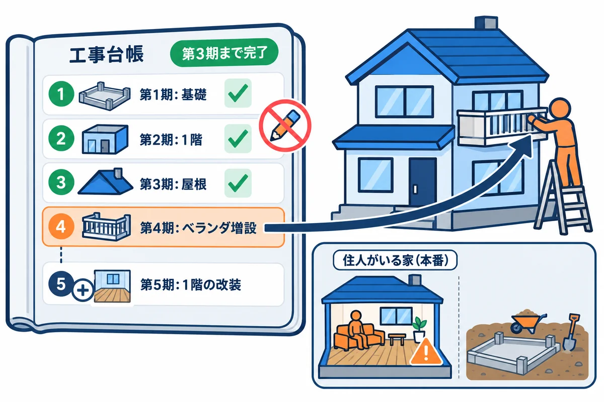

VOLUME 07 / RUST BACKEND MASTERY
Turso・libSQL — SQL設計・Rust実装・運用
表の設計と SQL から、transaction・migration・Rust からの接続・バックアップまで、データを安全に預かる力を身に付ける
色の付いた枠のコードの、右上の「コピー」ボタンを押してください。コピーしたら、ブラウザーの「戻る」で PDF に戻れます。
ノートアプリ RustNote で、利用者が書いたノートはどこに残るのでしょうか。プログラムの変数に入れておくだけでは、サーバーを再起動した瞬間に全部消えてしまいます。そこで、データをデータベース（DB）に預けます。この巻では、RustNote が使う DB である libSQL（リブエスキューエル）と、それをクラウドで動かすサービス Turso（ターソ）を題材に、DB の使い方を基礎から学びます。
DB は「入れて、出す」だけの箱に見えますが、使い方を間違えると次のような事故が起きます。
この巻のテーマは、こうした事故を、表の制約・transaction（トランザクション）・index（インデックス）・migration（マイグレーション）・パラメーターの bind（バインド）・Repository（リポジトリ）・backup（バックアップ）という仕組みで防ぐことです。SQL は 50 年近く使われ続けている言葉で、ここで覚えたことは、PostgreSQL や MySQL など、ほかの DB でもほとんどそのまま役に立ちます。
この巻を終えると、次のことができるようになります。
NOT NULL・UNIQUE・CHECK で不正なデータを DB の入口で断る表を設計できるSELECT で必要な行だけを読み出し、WHERE・ORDER BY・LIMIT で絞り込み・並べ替え・ページ送りができるINSERT・UPDATE・DELETE を書き、持ち主の条件で他人のノートを変更できないようにできる。影響を受けた行数を確かめられるEXPLAIN QUERY PLAN で「速く探せているか」を確かめられるversion 列で同時編集の食い違いを見つけられる| 単元 | テーマ | ひとことで言うと |
|---|---|---|
| UNIT 01 | 関係モデルと CREATE TABLE | 表を作り、制約で不正なデータを DB の入口で断る |
| UNIT 02 | SELECT・WHERE・ORDER BY・LIMIT | 必要な行だけを、決まった順番で、少しずつ読み出す |
| UNIT 03 | INSERT・UPDATE・DELETE と持ち主の条件 | 書き換えるときは「誰のデータか」も条件に入れる |
| UNIT 04 | index と EXPLAIN QUERY PLAN | 本の索引のような仕組みで、探す速さを上げる |
| UNIT 05 | transaction・ACID・競合 | 複数の変更を「全部成功か、全部取り消しか」にまとめる |
| UNIT 06 | migration と schema version | 表の形の変更を、番号付きの手順として記録し、順に適用する |
| UNIT 07 | libsql Rust SDK の接続とパラメーターの bind | Rust から SQL を実行し、値は文字列連結せずに bind する |
| UNIT 08 | local・remote・embedded replica | DB を手元に置くか、クラウドに置くか、両方を組み合わせるか |
| UNIT 09 | Repository・行の変換・N+1 | SQL を1か所に集め、DB の行を検証済みの型へ変換する |
| UNIT 10 | backup・token・監視・障害対応 | 壊れたとき・漏れたときに、慌てず戻せるように準備する |
この巻には、似た名前がいくつも出てきます。最初に関係を整理しておきましょう。
ヒント: 練習では、Turso のアカウントも、インターネットへの接続もいりません。UNIT 01〜10 の例は、すべて手元の DB ファイル（またはメモリの中だけの DB）で最後まで試せます。UNIT 08 のリモートの例も、手元の何も動いていないポートにつないで、失敗のしかたを確かめます。Turso Cloud の DB の作り方とトークンの管理は、UNIT 10 でコマンドの形と手順を紹介します（この本では実行しません）。
cargo new と cargo run ができること。struct / enum / match / Option / Result / ? / Vec / String の基本。& と &mut、所有権の移動。drop で値が片付けられるタイミング（UNIT 05 で使います）。UserId・NoteId・NoteTitle などの newtype、NoteRepository trait、thiserror で作るエラー型と AppError（UNIT 09 で使います）。SQL は、この巻で初めて学ぶ前提で、いちばん最初から説明します。
ヒント: この巻の Rust のコードには
asyncや.awaitが出てきます。くわしい仕組みは第5巻（async・Tokio）で学びますが、この巻では「.awaitは DB の返事が来るまで待つ印」と読めば十分です。#[tokio::main]は「mainの中で.awaitを使えるようにする」おまじないとして使います。
各単元では、次の順番を1サイクルとして進めてください。SQL は、自分で打って、わざと間違えて、エラーを読むのがいちばんの近道です。
# コードの見た目を Rust の標準の形に整える
cargo fmt
# よくある書き間違い・もったいない書き方を指摘してもらう
cargo clippy
# テストを実行する
cargo test
この巻の SQL とコードは、すべて次の環境で実際に実行し、実行結果とエラーメッセージは実際の出力をそのまま載せています（パソコンのユーザー名などを含む部分だけ ... に置き換えています）。
| 項目 | 版・内容 |
|---|---|
| OS | Windows 11（ARM64）。コマンドは PowerShell を主に、WSL / macOS / Linux は補足で示します |
| Rust | 1.99 以上（本書シリーズの基準）。実行結果は rustc 1.99.0・tokio 1.53.3 で取り、2026-10-31 に rustc 1.99.1・tokio 1.54.1 で全部の例を動かし直して比べた（違いが出た表示は取り直した。時間など毎回変わる物は、そのまま） |
| edition | 2024（cargo new の既定値） |
| libsql | 0.10.0（Rust から libSQL を使うクレート。中で動く SQLite エンジンは 3.47.0） |
| tokio | 1.54.1（rt-multi-thread と macros の機能つき。.await を動かす土台） |
| thiserror | 2.0.21（エラー型を短く書く。第4巻 UNIT 05 と同じ） |
| Turso CLI | この巻の練習では使いません。Windows 版は無く、使うときは WSL（Windows の中の Linux）に入れます（UNIT 08・10 の例） |
この巻では、練習用のプロジェクト sql-lab を1つ作り、SQL のファイルを sql/ に、Rust の小さなプログラムを src/bin/ に足していきます。
cargo new sql-lab
cd sql-lab
mkdir src/bin
mkdir sql
cargo add libsql@0.10.0
cargo add tokio@1.54.1 --features rt-multi-thread,macros
cargo add thiserror@2.0.21
cargo new と cargo add の実際の出力は次のとおりです。
Creating binary (application) `sql-lab` package
note: see more `Cargo.toml` keys and their definitions at https://doc.rust-lang.org/cargo/reference/manifest.html
Updating crates.io index
Adding libsql v0.10.0 to dependencies
Features:
+ core
+ hrana
+ libsql-sys
+ parser
+ remote
+ replication
+ serde
+ stream
+ sync
+ tls
- cloudflare
- encryption
- wasm
Updating crates.io index
Locking 211 packages to highest Rust 1.99.1 compatible versions
Adding generic-array v0.14.7 (available: v0.14.9)
Updating crates.io index
Adding tokio v1.54.1 to dependencies
Features:
+ macros
+ rt
+ rt-multi-thread
+ tokio-macros
- bytes
- fs
- full
- io-std
- io-uring
- io-util
- libc
- mio
- net
- parking_lot
- process
- schedule-latency
- signal
- signal-hook-registry
- socket2
- sync
- taskdump
- test-util
- time
- tracing
- windows-sys
Updating crates.io index
Adding thiserror v2.0.21 to dependencies
Features:
+ std
Updating crates.io index
Locking 2 packages to highest Rust 1.99.1 compatible versions
Adding thiserror v2.0.21
Adding thiserror-impl v2.0.21
+ が付いた機能（feature）は ON、- は OFF です。libsql は、ローカルのファイルを扱う core に加えて、Turso のサーバーとやり取りする remote・replication・sync、暗号化した通信の tls が最初から ON になっています。Locking 211 packages」は、libsql が使っている部品まで含めて 211 個のクレートの版を Cargo.lock に記録した、という意味です。最初のビルドには数分かかります。最後に、Cargo.toml の [package] の中、edition = "2024" の次の行に rust-version = "1.99" を手で1行足します（第4巻 UNIT 07 で学んだ「このプロジェクトは Rust 1.99 以上でビルドしてください」という宣言です）。できあがった Cargo.toml は次のとおりです。
[package]
name = "sql-lab"
version = "0.1.0"
edition = "2024"
rust-version = "1.99"
[dependencies]
libsql = "0.10.0"
thiserror = "2.0.21"
tokio = { version = "1.54.1", features = ["rt-multi-thread", "macros"] }
libsql の tls の機能は、ring という暗号のクレートを使います。ARM64 版の Windows では、この ring をビルドするのに clang（クラン：LLVM という C 言語コンパイラの仲間）が必要です。clang が無いと、最初のビルドが次のように失敗します（実際の出力から要点を抜き出したもの）。
warning: ring@0.17.14: Compiler family detection failed due to error: ToolNotFound: failed to find tool "clang": program not found (see https://docs.rs/cc/latest/cc/#compile-time-requirements for help)
error: failed to run custom build command for `ring v0.17.14`
Caused by:
process didn't exit successfully: `target\debug\build\ring-1d47c9bd909157dd\build-script-build` (exit code: 1)
failed to find tool "clang" は「clang というプログラムが見つからない」という意味です。ring のビルド用のプログラム（build script）が、C 言語の部分をコンパイルしようとして止まりました。C:\Program Files\LLVM\bin を PATH に入れてから、PowerShell を開き直してビルドし直します。winget を使う場合は winget install -e --id LLVM.LLVM です。clang --version で版が表示されれば準備完了です。ヒント: どうしても clang を入れられないときは、
Cargo.tomlの libsql の行をlibsql = { version = "0.10.0", default-features = false, features = ["core"] }に変えると、clang なしでビルドできます。ただし、この形ではローカルのファイルしか扱えません（Turso のサーバーにつなぐBuilder::new_remoteなどが使えなくなります）。UNIT 08 のリモートと組み込みレプリカの例以外は、この形でも最後まで試せます。
sql を用意するSQL を試すには、SQL の文を DB に送り、返ってきた結果を見る道具が必要です。この巻では、そのための小さな Rust のプログラム sql を最初に作っておきます。SQL を書いたファイルを渡すと、1文ずつ実行して、結果を表の形で表示してくれます。
次のコードを src/bin/sql.rs として保存してください。長く見えますが、今は中身を理解しなくてかまいません。この巻の UNIT 07 まで進むと、ほとんどの行が読めるようになります。今は「SQL を試すための道具」として、写して使ってください。
▼ このコードがやること（先に日本語で）: 1. コマンドラインの引数から、DB のファイル名（
--db）・準備用の SQL（--setup）・実行する SQL のファイルを受け取る 2. DB を開き、ファイルの SQL を;で1文ずつに分けて、順番に実行する 3. 行を返す文（SELECTなど）は結果を表の形で、行を返さない文は「OK」と変更した行数を表示する。エラーが起きてもそこで止まらず、メッセージを表示して次の文へ進む
// SQL ファイルを libSQL で1文ずつ実行し、結果を表の形で表示する道具。
// 使い方: cargo run -q --bin sql -- [--db ファイル] [--setup 準備用.sql]... 実行する.sql...
// --db を付けないと、メモリの中だけの DB（終わると消える）を使う
// --setup のファイルは、結果を表示せずに先に実行する（表やデータの準備用）
use std::collections::HashMap;
use std::env;
use std::fs;
use std::process::ExitCode;
use libsql::{Builder, Connection, Value};
#[tokio::main]
async fn main() -> ExitCode {
match run().await {
Ok(()) => ExitCode::SUCCESS,
Err(message) => {
eprintln!("{message}");
ExitCode::FAILURE
}
}
}
async fn run() -> Result<(), String> {
// コマンドラインの引数を読む
let mut db_path = String::from(":memory:");
let mut setup_files = Vec::new();
let mut files = Vec::new();
let mut args = env::args().skip(1);
while let Some(arg) = args.next() {
match arg.as_str() {
"--db" => db_path = args.next().ok_or("--db の後にファイル名が必要です")?,
"--setup" => setup_files.push(args.next().ok_or("--setup の後にファイル名が必要です")?),
_ => files.push(arg),
}
}
if files.is_empty() {
return Err("使い方: sql [--db ファイル] [--setup 準備.sql]... 実行する.sql...".into());
}
// DB を開いて、接続を1本だけ作る（全部の文をこの接続で実行する）
let db = Builder::new_local(&db_path)
.build()
.await
.map_err(|e| e.to_string())?;
let conn = db.connect().map_err(|e| e.to_string())?;
for path in &setup_files {
let sql = fs::read_to_string(path).map_err(|e| format!("{path}: {e}"))?;
let statements = split_statements(&sql);
for statement in &statements {
run_statement(&conn, statement, false).await?;
}
println!("（準備: {path} の {} 文を実行しました）", statements.len());
}
for path in &files {
let sql = fs::read_to_string(path).map_err(|e| format!("{path}: {e}"))?;
for statement in split_statements(&sql) {
// 文の1行目だけを表示する（2行目以降があれば … を付ける）
let mut lines = statement.lines();
let first = lines.next().unwrap_or("");
let more = if lines.next().is_some() { " …" } else { "" };
println!("sql> {first}{more}");
// エラーが起きても止めずに、次の文へ進む
if let Err(message) = run_statement(&conn, &statement, true).await {
println!("エラー: {message}");
}
println!();
}
}
Ok(())
}
// 1つの文を実行する。show が true なら結果を表示する
async fn run_statement(conn: &Connection, sql: &str, show: bool) -> Result<(), String> {
let stmt = conn.prepare(sql).await.map_err(|e| e.to_string())?;
if stmt.columns().is_empty() {
// 行を返さない文（CREATE / INSERT / UPDATE / DELETE など）
let changed = stmt.execute(()).await.map_err(|e| e.to_string())?;
if show {
let word = sql.split_whitespace().next().unwrap_or("").to_uppercase();
if ["INSERT", "UPDATE", "DELETE", "REPLACE"].contains(&word.as_str()) {
println!("OK（変更: {changed} 行）");
} else {
println!("OK");
}
}
return Ok(());
}
// 行を返す文（SELECT など）: 列名と全部の行を読み取る
let mut rows = stmt.query(()).await.map_err(|e| e.to_string())?;
let count = rows.column_count();
let names: Vec<String> = (0..count)
.map(|i| rows.column_name(i).unwrap_or("?").to_string())
.collect();
let mut table: Vec<Vec<String>> = Vec::new();
while let Some(row) = rows.next().await.map_err(|e| e.to_string())? {
let mut cells = Vec::new();
for i in 0..count {
let value = row.get_value(i).map_err(|e| e.to_string())?;
cells.push(format_value(&value));
}
table.push(cells);
}
if !show {
return Ok(());
}
if sql.to_uppercase().starts_with("EXPLAIN QUERY PLAN") {
print_query_plan(&table);
} else {
print_table(&names, &table);
}
Ok(())
}
// 値を表示用の文字列にする
fn format_value(value: &Value) -> String {
match value {
Value::Null => "NULL".to_string(),
Value::Integer(n) => n.to_string(),
Value::Real(x) => x.to_string(),
Value::Text(s) => s.clone(),
Value::Blob(bytes) => {
let hex: String = bytes.iter().map(|b| format!("{b:02X}")).collect();
format!("x'{hex}'")
}
}
}
// 表の形で表示する
fn print_table(names: &[String], table: &[Vec<String>]) {
// 列ごとに、いちばん長い値の幅を求める
let mut widths: Vec<usize> = names.iter().map(|n| width(n)).collect();
for cells in table {
for (i, cell) in cells.iter().enumerate() {
widths[i] = widths[i].max(width(cell));
}
}
let line: Vec<String> = widths.iter().map(|w| "-".repeat(w + 2)).collect();
let line = format!("+{}+", line.join("+"));
println!("{line}");
print_cells(names, &widths);
println!("{line}");
for cells in table {
print_cells(cells, &widths);
}
if !table.is_empty() {
println!("{line}");
}
println!("({} 行)", table.len());
}
fn print_cells(cells: &[String], widths: &[usize]) {
let padded: Vec<String> = cells
.iter()
.zip(widths)
.map(|(cell, w)| format!(" {cell}{} ", " ".repeat(w - width(cell))))
.collect();
println!("|{}|", padded.join("|"));
}
// EXPLAIN QUERY PLAN の結果（id, parent, notused, detail）を木の形で表示する
fn print_query_plan(table: &[Vec<String>]) {
println!("QUERY PLAN");
let mut depth: HashMap<String, usize> = HashMap::new();
for cells in table {
let d = depth.get(&cells[1]).map_or(0, |p| p + 1);
depth.insert(cells[0].clone(), d);
println!("{}- {}", " ".repeat(d), cells[3]);
}
}
// 画面での幅（日本語などの全角文字は 2、それ以外は 1）
fn width(s: &str) -> usize {
s.chars()
.map(|c| match c as u32 {
0x1100..=0x115F | 0x2E80..=0xA4CF | 0xAC00..=0xD7A3 => 2,
0xF900..=0xFAFF | 0xFE30..=0xFE4F | 0xFF00..=0xFF60 | 0xFFE0..=0xFFE6 => 2,
_ => 1,
})
.sum()
}
// SQL を ; ごとの文に分ける（'…' や "…" の中の ; と、-- のコメントは区切りにしない）
fn split_statements(sql: &str) -> Vec<String> {
let mut statements = Vec::new();
let mut current = String::new();
let mut quote: Option<char> = None;
let mut chars = sql.chars().peekable();
while let Some(c) = chars.next() {
match quote {
Some(q) => {
current.push(c);
if c == q {
quote = None;
}
}
None if c == '\'' || c == '"' => {
quote = Some(c);
current.push(c);
}
None if c == '-' && chars.peek() == Some(&'-') => {
// 行の終わりまでコメントなので読み飛ばす
for c in chars.by_ref() {
if c == '\n' {
current.push('\n');
break;
}
}
}
None if c == ';' => {
push_statement(&mut statements, ¤t);
current.clear();
}
None => current.push(c),
}
}
push_statement(&mut statements, ¤t);
statements
}
// 空行を取り除いてから、空でなければ文の一覧に加える
fn push_statement(statements: &mut Vec<String>, text: &str) {
let lines: Vec<&str> = text
.lines()
.map(str::trim_end)
.filter(|l| !l.trim().is_empty())
.collect();
if !lines.is_empty() {
statements.push(lines.join("\n").trim().to_string());
}
}
▶ ここで初めて出てくるコード
.prepare()（データベース）: SQL の文を、実行する前に用意（解釈）しておくメソッド（libsql）。同じ文を何度も使う時に速くなり、?の数や列の名前も調べられます。.columns()（データベース）: 用意した SQL の文が返す列の一覧を返すメソッド。空なら、行を返さない文（INSERTなど）です。.column_count()（データベース）: 結果の列の数を返すメソッド。.column_name()（データベース）: 結果の、何番目かの列の名前を返すメソッド。.get_value()（データベース）: 結果の 1 行から、何番目かの列の値を、型を決めずに（Valueとして）取り出すメソッド。.zip()（イテレーター）: 2 つの並びを、同じ番号どうしの組にして取り出すメソッド。names.iter().zip(ages.iter())は(名前, 年齢)の組を順に出します。短い方が終わった所で終わります。.map_or()（Option）:Optionに値があれば、それを関数で変換し、無ければ決めた値を返すメソッド。depth.get(&k).map_or(0, |p| p + 1)は「あれば +1、無ければ 0」。.peekable()（イテレーター）: 次の 1 つを、取り出さずに「覗く」（peek）ことができるイテレーターにするメソッド。文字を 1 つずつ読みながら、次の文字で処理を変える時に使います。.peek()（イテレーター）: 次の 1 つを、取り出さずに覗くメソッド（peekableにしたイテレーターで使う）。.by_ref()（イテレーター）: イテレーターを借りたまま、途中まで使うメソッド。for c in chars.by_ref()のあとでも、残りを続けて読めます。ExitCode（プロセス）:mainが返す、終了コードの型。fn main() -> ExitCodeにして、ExitCode::SUCCESS（0）かExitCode::FAILURE（1）を返します。process::exitと違い、片づけをしてから終われます。Value（データベース）: libsql の、型を決めずにデータベースの値を持つ型。Null・Integer・Real・Text・Blobのどれかです。SUCCESS（プロセス）:ExitCode::SUCCESSは、終了コード 0（成功）です。FAILURE（プロセス）:ExitCode::FAILUREは、終了コード 1（失敗）です。Null（データベース）:Value::Nullは、データベースの値が NULL（値が無い）であることを表す種類です。Integer（データベース）:Value::Integer(n)は、データベースの値が整数であることを表す種類です。Real（データベース）:Value::Real(x)は、データベースの値が小数であることを表す種類です。Text（データベース）:Value::Text(s)は、データベースの値が文字列であることを表す種類です。Blob（データベース）:Value::Blob(bytes)は、データベースの値がバイトの並び（画像などの生のデータ）であることを表す種類です。
まず、試しに次の SQL を sql/hello.sql として保存します。-- から行の終わりまではコメント（メモ書き）で、DB には送られません。文の終わりには ;（セミコロン）を付けます。
-- はじめての SQL
SELECT 1 + 1 AS answer, 'こんにちは' AS greeting;
SELECT sqlite_version() AS version;
▶ ここで初めて出てくるコード
AS（SQL）: SQL で、列や表に別の名前を付ける書き方。SELECT COUNT(*) AS notesは、結果の列の名前をnotesにします。FROM users AS uは、表をuと短く呼べるようにします。
sql-lab のフォルダで、次のように実行します。
cargo run --bin sql -- sql/hello.sql
▼ 実行結果
Finished `dev` profile [unoptimized + debuginfo] target(s) in 0.24s
Running `target\debug\sql.exe sql/hello.sql`
sql> SELECT 1 + 1 AS answer, 'こんにちは' AS greeting
+--------+------------+
| answer | greeting |
+--------+------------+
| 2 | こんにちは |
+--------+------------+
(1 行)
sql> SELECT sqlite_version() AS version
+---------+
| version |
+---------+
| 3.47.0 |
+---------+
(1 行)
Compiling ... の行が 181 行続きます（libsql とその部品のコンパイル）。この PC では Finished ... in 1m 02s と、約1分かかりました。2回目からは、上の結果のように Finished ... in 0.24s とすぐに始まります。Running の行は、cargo が作った実行ファイル target\debug\sql.exe を、引数 sql/hello.sql を付けて起動した、という意味です。sql> の後ろに実行した文の1行目が、その下に結果が表示されます。SELECT が返した行は +----+ の線で囲んだ表で、最後に行数が (1 行) のように出ます。sqlite_version() は、中で動いている SQLite エンジンの版を返す関数です。使い方は、次の4つを覚えておけば十分です。
| 書き方 | 意味 |
|---|---|
cargo run -q --bin sql -- sql/a.sql |
sql/a.sql を、メモリの中だけの DB で実行する（終わると DB は消える）。-q は cargo の Compiling ... などの表示を省く |
cargo run -q --bin sql -- sql/a.sql sql/b.sql |
2つのファイルを続けて、同じ DB で実行する |
cargo run -q --bin sql -- --setup sql/schema.sql sql/a.sql |
先に sql/schema.sql を結果を表示せずに実行し（表の準備）、それから sql/a.sql を実行する。--setup は何回でも付けられる |
cargo run -q --bin sql -- --db u05.db sql/a.sql |
メモリではなく、ファイル u05.db の DB で実行する（ファイルが無ければ作られ、終わっても残る） |
-- は「ここから先は cargo ではなく、sql のプログラムに渡す引数です」という区切りです。
ヒント: エラーになった文は
エラー: SQLite failure: ...と表示され、次の文へ進みます。エラーで途中の文が飛ばされると、後ろの結果も変わることがあります。教材と結果が違うときは、まず上の方にエラーが出ていないかを確かめてください。
ヒント: VS Code で
.sqlのファイルを開くと、SQL のキーワードに色が付きます。SQL のキーワード（SELECT・FROMなど）は大文字でも小文字でも同じ意味ですが、この巻では「キーワードは大文字、表や列の名前は小文字」で書きます。どこまでが SQL の決まりで、どこからが自分で付けた名前かが、ひと目で分かるからです。
users と notes を例に説明できるCREATE TABLE で、列の型と制約（NOT NULL・UNIQUE・CHECK・DEFAULT・REFERENCES）を書けるSTRICT、外部キーの確認を切り替える PRAGMA foreign_keys の注意点を知るスポーツクラブの受付を思い浮かべてください。受付には2冊の帳面があります。
ノート台帳の「持ち主の会員番号」の欄には、会員名簿に実在する番号しか書けない決まりにします。そうしておけば、「会員番号 99 番のノート」のような、持ち主のいないノートは生まれません。また、受付係は記入のたびに「タイトルが空欄になっていないか」「同じメールアドレスの人がもう名簿にいないか」をチェックします。
データベース（DB）の表は、この帳面とまったく同じ考え方でできています。
| 帳面の言葉 | DB の言葉 | RustNote での例 |
|---|---|---|
| 帳面1冊 | 表（テーブル） | users、notes |
| 1人分・1冊分の記入欄 | 行（ロー、レコード） | Alice の1行、「買い物リスト」の1行 |
| 記入欄の項目 | 列（カラム） | email、title、done |
| 会員番号 | 主キー（PRIMARY KEY） | users.id、notes.id |
| 持ち主の会員番号 | 外部キー（FOREIGN KEY） | notes.user_id → users.id |
| 受付係のチェック | 制約（CONSTRAINT） | NOT NULL、UNIQUE、CHECK |
用語: SQL（エスキューエル：DB に「表を作れ」「この条件の行を読め」と頼むための言葉。Rust のようなプログラミング言語とは別の、DB 専用の言葉）
用語: 主キー（しゅキー、PRIMARY KEY：表の中で行を1つに決めるための列。同じ値の行は2つ存在できない）
用語: 外部キー（がいぶキー、FOREIGN KEY：ほかの表の主キーを指す列。指している先が実在しない値は入れられない）
上の図のポイントは、制約は DB の中にあるということです。第4巻で作った NoteTitle::parse はアプリの門番ですが、門番を通らずに DB へ届く道（管理者が手で打った SQL、別のプログラム、門番を呼び忘れたバグ）は必ずあります。表に CHECK や UNIQUE を書いておけば、どの道から来た値でも DB が最後に確認してくれます。アプリの検証と DB の制約は「どちらか一方」ではなく、両方置くのが基本です。
この巻の SQL は、巻頭で用意した練習用プロジェクト sql-lab の道具 sql で実行します。SQL ファイルを1文ずつ実行して、結果を表の形で表示してくれる道具です。--db を付けないときは「メモリの中だけの DB」を使うので、実行のたびにまっさらな DB から始まります。何度実行しても同じ結果になるので、安心して試してください。
▼ このコードがやること（先に日本語で）: 会員の表
usersとノートの表notesを作ります。notesのuser_idはusersのidを指す外部キーにします。会員を2人、ノートを2冊入れてから、2つの表の中身を表示します。
-- 会員（ユーザー）の表
CREATE TABLE users (
id INTEGER PRIMARY KEY,
email TEXT NOT NULL UNIQUE,
password_hash TEXT NOT NULL,
created_at TEXT NOT NULL DEFAULT (datetime('now'))
);
-- ノートの表。user_id で「どの会員のノートか」を指す
CREATE TABLE notes (
id INTEGER PRIMARY KEY,
user_id INTEGER NOT NULL REFERENCES users(id),
title TEXT NOT NULL CHECK (length(title) BETWEEN 1 AND 80),
body TEXT NOT NULL DEFAULT '',
done INTEGER NOT NULL DEFAULT 0 CHECK (done IN (0, 1))
);
-- 行を入れてみる（id は書かなくても 1, 2, … と自動で決まる）
INSERT INTO users (email, password_hash) VALUES ('alice@example.com', 'dummy-a');
INSERT INTO users (email, password_hash) VALUES ('bob@example.com', 'dummy-b');
INSERT INTO notes (user_id, title) VALUES (1, '買い物リスト');
INSERT INTO notes (user_id, title, body) VALUES (2, '旅行の計画', '京都で紅葉を見る');
-- 中身を確かめる
SELECT id, email, password_hash FROM users;
SELECT * FROM notes;
sql/u01_create.sql として保存し、sql-lab フォルダで次のコマンドを実行します。
cargo run -q --bin sql -- sql/u01_create.sql
▼ 実行結果
sql> CREATE TABLE users ( …
OK
sql> CREATE TABLE notes ( …
OK
sql> INSERT INTO users (email, password_hash) VALUES ('alice@example.com', 'dummy-a')
OK（変更: 1 行）
sql> INSERT INTO users (email, password_hash) VALUES ('bob@example.com', 'dummy-b')
OK（変更: 1 行）
sql> INSERT INTO notes (user_id, title) VALUES (1, '買い物リスト')
OK（変更: 1 行）
sql> INSERT INTO notes (user_id, title, body) VALUES (2, '旅行の計画', '京都で紅葉を見る')
OK（変更: 1 行）
sql> SELECT id, email, password_hash FROM users
+----+-------------------+---------------+
| id | email | password_hash |
+----+-------------------+---------------+
| 1 | alice@example.com | dummy-a |
| 2 | bob@example.com | dummy-b |
+----+-------------------+---------------+
(2 行)
sql> SELECT * FROM notes
+----+---------+--------------+------------------+------+
| id | user_id | title | body | done |
+----+---------+--------------+------------------+------+
| 1 | 1 | 買い物リスト | | 0 |
| 2 | 2 | 旅行の計画 | 京都で紅葉を見る | 0 |
+----+---------+--------------+------------------+------+
(2 行)
sql> の後ろが実行した文（2行以上ある文は1行目だけを表示し、… を付けています）、その下が結果です。-q は「cargo 自身の Compiling … などの表示を出さない」という指定です。
CREATE TABLE users (
id INTEGER PRIMARY KEY,
email TEXT NOT NULL UNIQUE,
...
);
CREATE TABLE 表の名前 ( … ); で表を作ります。カッコの中に、列をカンマ区切りで並べます。最後の列の後ろにはカンマを付けません。email TEXT NOT NULL UNIQUE なら「列名は email、型は文字列（TEXT）、空っぽ禁止（NOT NULL）、重複禁止（UNIQUE）」です。CREATE、TABLE など）は大文字でも小文字でも同じ意味です。本書では読みやすさのため、キーワードを大文字、表や列の名前を小文字で書きます。;（セミコロン）を付けます。INTEGER PRIMARY KEYid INTEGER PRIMARY KEY は「id 列が主キー」という意味です。主キーの値は表の中で重なりません。INTEGER PRIMARY KEY の列に値を書かずに INSERT すると、今ある最大の値 + 1 が自動で入ります。だから INSERT INTO users (email, password_hash) … で id を書かなくても、1, 2 と番号が付きました。NOT NULL・UNIQUE・DEFAULTNOT NULL は「値が無い状態（NULL）を許さない」制約です。NULL（ヌル）は SQL で「値が無い」を表す特別な印で、Rust の None に近いものです。UNIQUE は「同じ値の行を2つ作らせない」制約です。email に付けたので、同じメールアドレスで2回登録できません。DEFAULT (datetime('now')) は「INSERT で値を書かなかったら、この値を入れる」という指定です。datetime('now') は今の日時を '2026-10-17 21:35:21' のような文字列で返す SQLite の関数で、時刻は UTC（世界標準時。日本時間より9時間遅い）です。body TEXT NOT NULL DEFAULT '' は「本文は空っぽ禁止。ただし書かなければ空の文字列 '' が入る」という組み合わせです。結果の表で 買い物リスト の body が空欄に見えるのは、'' が入っているからです。用語: NULL（ヌル：SQL で「値が無い」ことを表す特別な印。0 や空文字
''とは別物）
CHECK で値の範囲を決めるtitle TEXT NOT NULL CHECK (length(title) BETWEEN 1 AND 80),
done INTEGER NOT NULL DEFAULT 0 CHECK (done IN (0, 1))
CHECK (条件) は「この条件を満たす値しか入れさせない」制約です。length(title) はタイトルの文字数です。BETWEEN 1 AND 80 は「1 以上 80 以下」。第4巻の NoteTitle::parse（1〜80文字）と同じ約束を、DB 側にも書いています。done IN (0, 1) は「0 か 1 のどちらか」。SQLite には真偽値（bool）専用の型が無いので、0 = 未完了、1 = 完了という整数で表します。REFERENCES で外部キーを作るuser_id INTEGER NOT NULL REFERENCES users(id),
REFERENCES users(id) は「この列の値は、users 表の id 列に実在する値でなければならない」という意味です。これが外部キーです。INSERT INTO notes (user_id, title) VALUES (1, '買い物リスト');
SELECT * FROM notes;
INSERT INTO 表 (列, 列…) VALUES (値, 値…) で行を1つ追加します。列と値は同じ順番・同じ数で書きます。書かなかった列（id・body・done）には自動の番号や DEFAULT の値が入ります。'…'（シングルクォート）で囲みます。"…" ではありません（理由は UNIT 02 のエラーで見ます）。SELECT * FROM notes は「notes の全部の列を読む」。* は「全部の列」の意味です。SELECT は UNIT 02 で詳しく学びます。▼ このコードがやること（先に日本語で）: いろいろな値の種類を
typeof()で調べ、文字数とバイト数の違いを確かめます。次に、普通の表とSTRICTを付けた表に、整数の列なのに文字列を入れてみて、結果を比べます。
-- 値の種類（ストレージクラス）を typeof() で調べる
SELECT typeof(42) AS a, typeof(3.14) AS b, typeof('こんにちは') AS c, typeof(x'CAFE') AS d, typeof(NULL) AS e;
-- 文字数とバイト数
SELECT length('あいう') AS chars, length(CAST('あいう' AS BLOB)) AS bytes;
-- 普通の表は、列の型と違う値も（変換できなければ）そのまま入ってしまう
CREATE TABLE loose (n INTEGER);
INSERT INTO loose VALUES ('12'), ('abc');
SELECT n, typeof(n) FROM loose;
-- STRICT を付けた表は、型の違う値を断る
CREATE TABLE strict_t (n INTEGER) STRICT;
INSERT INTO strict_t VALUES ('12');
INSERT INTO strict_t VALUES ('abc');
SELECT n, typeof(n) FROM strict_t;
▶ ここで初めて出てくるコード
CAST（SQL）: SQL で、値の型を変える書き方。CAST('あいう' AS BLOB)は、文字列をバイトの並びとして扱います。BLOB（SQL）: SQL の型の 1 つで、バイトの並び（画像などの生のデータ）を入れる型。STRICT（SQL）: SQLite（libSQL）で、表の後ろに付けると、列の型と違う値を断るようにする決まり。付けないと、整数の列に文字が入ってしまうことがあります。
cargo run -q --bin sql -- sql/u01_types.sql
▼ 実行結果
sql> SELECT typeof(42) AS a, typeof(3.14) AS b, typeof('こんにちは') AS c, typeof(x'CAFE') AS d, typeof(NULL) AS e
+---------+------+------+------+------+
| a | b | c | d | e |
+---------+------+------+------+------+
| integer | real | text | blob | null |
+---------+------+------+------+------+
(1 行)
sql> SELECT length('あいう') AS chars, length(CAST('あいう' AS BLOB)) AS bytes
+-------+-------+
| chars | bytes |
+-------+-------+
| 3 | 9 |
+-------+-------+
(1 行)
sql> CREATE TABLE loose (n INTEGER)
OK
sql> INSERT INTO loose VALUES ('12'), ('abc')
OK（変更: 2 行）
sql> SELECT n, typeof(n) FROM loose
+-----+-----------+
| n | typeof(n) |
+-----+-----------+
| 12 | integer |
| abc | text |
+-----+-----------+
(2 行)
sql> CREATE TABLE strict_t (n INTEGER) STRICT
OK
sql> INSERT INTO strict_t VALUES ('12')
OK（変更: 1 行）
sql> INSERT INTO strict_t VALUES ('abc')
エラー: SQLite failure: `cannot store TEXT value in INTEGER column strict_t.n`
sql> SELECT n, typeof(n) FROM strict_t
+----+-----------+
| n | typeof(n) |
+----+-----------+
| 12 | integer |
+----+-----------+
(1 行)
SQLite（libSQL）が値をしまうときの種類（ストレージクラス）は、次の5つだけです。Rust の型との対応も覚えておくと、UNIT 07 で Rust から読み書きするときに迷いません。
| ストレージクラス | 中身 | 例 | Rust で受け取る型 |
|---|---|---|---|
integer |
整数 | 42 |
i64 |
real |
小数 | 3.14 |
f64 |
text |
文字列（UTF-8） | 'こんにちは' |
String |
blob |
バイトの並び | x'CAFE' |
Vec<u8> |
null |
値が無い | NULL |
Option<…> の None |
'2026-10-17 21:35:21' の形の text、完了フラグは 0/1 の integer で持ちます。length('あいう') は 3（文字数）ですが、BLOB に変換してから数えると 9（バイト数）です。日本語は UTF-8 で1文字3バイトだからです。CHECK (length(title) BETWEEN 1 AND 80) は文字数で数えるので、Rust 側の chars().count() と数え方がそろっています。'12' は整数に変換できたので integer で入りましたが、'abc' は変換できないので、整数の列に文字列のまま入ってしまいました。これを型の親和性（アフィニティ）と呼びます。STRICT を付けると、型の違う値は cannot store TEXT value in INTEGER column strict_t.n（INTEGER の列 strict_t.n に TEXT の値はしまえません）というエラーで断られます。STRICT を付けていません。値は必ず Rust の型（i64 や String）を通ってから入るので、型の取り違えは Rust のコンパイラが先に防いでくれるからです。ただし、手作業の SQL も含めて型を守りたい表を新しく作るなら、STRICT は検討する価値があります。例1-1 は練習用に削った形でした。RustNote の本物の notes 表（Rust/rustnote/migrations/0002_notes.sql）は次のとおりです。
-- 0002: ノートのテーブル
-- title は 1〜80 文字（length() は文字数を数える。Rust 側の chars().count() と同じ）。
-- done は 0（未完了）か 1（完了）。
-- version は楽観的ロック用の番号。更新のたびに 1 増える。
-- 日時は UTC の 'YYYY-MM-DD HH:MM:SS' 形式の文字列（datetime('now') の形）。
CREATE TABLE notes (
id INTEGER PRIMARY KEY AUTOINCREMENT,
user_id INTEGER NOT NULL REFERENCES users(id) ON DELETE CASCADE,
title TEXT NOT NULL CHECK (length(title) BETWEEN 1 AND 80),
body TEXT NOT NULL DEFAULT '',
done INTEGER NOT NULL DEFAULT 0 CHECK (done IN (0, 1)),
version INTEGER NOT NULL DEFAULT 1,
created_at TEXT NOT NULL DEFAULT (datetime('now')),
updated_at TEXT NOT NULL DEFAULT (datetime('now'))
);
-- 「自分のノートを新しい順に」を速くするための索引
CREATE INDEX idx_notes_user_updated ON notes (user_id, updated_at DESC, id DESC);
▶ ここで初めて出てくるコード
AUTOINCREMENT（SQL）:INTEGER PRIMARY KEY AUTOINCREMENTで、番号を自動で振り、消した番号を二度と使わないようにする決まり。ON（SQL）: SQL の「〜の時」「〜で」。ON DELETE CASCADEは「消された時は」、JOIN … ON a.id = b.user_idは「この条件で横につなぐ」、CREATE INDEX … ON 表 (列)は「この表の、この列に」という意味です。DELETE（SQL）:DELETE FROM 表 WHERE 条件で、表の行を消す SQL の命令。WHEREを忘れると、全部の行が消えます。ON DELETE CASCADEの中では「消された時」という意味です。CASCADE（SQL）:ON DELETE CASCADEは、「つながった元の行（ユーザー）が消されたら、こちらの行（そのユーザーのノート）も一緒に消す」という決まりです。INDEX（SQL）:CREATE INDEX 名前 ON 表 (列)で、表に索引（本の索引のような、速く探すための仕組み）を作る SQL の命令。よく条件や並べかえに使う列に作ります（第7巻 UNIT 04）。DESC（SQL）:ORDER BY 列 DESCで、大きい順（新しい順）に並べます（小さい順はASC）。
例1-1 との違いは次の5つです。それぞれ、この巻の後の単元で学びます。
| 違い | 意味 | 学ぶ単元 |
|---|---|---|
AUTOINCREMENT |
消したノートの番号を、二度と使い回さない | この単元（例1-4） |
ON DELETE CASCADE |
会員を消したら、その人のノートも一緒に消す | UNIT 03 |
version |
同時に編集されたことに気づくための番号 | UNIT 05 |
created_at / updated_at |
作った日時と、最後に変えた日時 | UNIT 02・03 |
CREATE INDEX |
検索を速くする索引 | UNIT 04 |
RustNote の3つの表（0001_users.sql・0002_notes.sql・0003_sessions.sql）を作ったあと、DB の中に何があるかを一覧にしてみます。--setup で指定したファイルは、結果を表示せずに先に実行されます。
-- DB の中にある表と索引の一覧（sqlite_schema は SQLite が自動で持っている表）
SELECT type, name, tbl_name FROM sqlite_schema ORDER BY tbl_name, type DESC, name;
cargo run -q --bin sql -- --setup migrations/0001_users.sql --setup migrations/0002_notes.sql `
--setup migrations/0003_sessions.sql sql/u01_schema_list.sql
▼ 実行結果
（準備: migrations/0001_users.sql の 1 文を実行しました）
（準備: migrations/0002_notes.sql の 2 文を実行しました）
（準備: migrations/0003_sessions.sql の 3 文を実行しました）
sql> SELECT type, name, tbl_name FROM sqlite_schema ORDER BY tbl_name, type DESC, name
+-------+-----------------------------+-----------------+
| type | name | tbl_name |
+-------+-----------------------------+-----------------+
| table | notes | notes |
| index | idx_notes_user_updated | notes |
| table | sessions | sessions |
| index | idx_sessions_expires | sessions |
| index | idx_sessions_user | sessions |
| index | sqlite_autoindex_sessions_1 | sessions |
| table | sqlite_sequence | sqlite_sequence |
| table | users | users |
| index | sqlite_autoindex_users_1 | users |
+-------+-----------------------------+-----------------+
(9 行)
sqlite_schema は、DB が「どんな表や索引があるか」を自分で記録している特別な表です。DB の中身を調べたいときの入口になります。sqlite_autoindex_users_1 は、email の UNIQUE を確かめるために SQLite が自動で作った索引です。重複を素早く見つけるには索引が必要だからです。sessions の token_hash BLOB PRIMARY KEY（整数でない主キー）にも同じものが作られています。sqlite_sequence は、AUTOINCREMENT を付けた表の「これまでに使った最大の番号」を覚えておくための表です。次の例1-4 で中身を見ます。▼ このコードがやること（先に日本語で）:
AUTOINCREMENTなしの表と、ありの表に3行ずつ入れ、いちばん大きい番号（3）の行を消します。そのあと1行ずつ足して、新しい行に何番が付くかを比べます。
-- AUTOINCREMENT なしと、ありの表を作る
CREATE TABLE plain (id INTEGER PRIMARY KEY, v TEXT NOT NULL);
CREATE TABLE auto (id INTEGER PRIMARY KEY AUTOINCREMENT, v TEXT NOT NULL);
-- どちらにも3行入れてから、いちばん大きい id（3）の行を消す
INSERT INTO plain (v) VALUES ('a'), ('b'), ('c');
INSERT INTO auto (v) VALUES ('a'), ('b'), ('c');
DELETE FROM plain WHERE id = 3;
DELETE FROM auto WHERE id = 3;
-- もう1行ずつ入れると、新しい id はいくつになるか
INSERT INTO plain (v) VALUES ('d');
INSERT INTO auto (v) VALUES ('d');
SELECT 'plain' AS tbl, id, v FROM plain WHERE v = 'd'
UNION ALL
SELECT 'auto', id, v FROM auto WHERE v = 'd';
-- AUTOINCREMENT の表は「これまでの最大の id」を sqlite_sequence に覚えている
SELECT name, seq FROM sqlite_sequence;
▶ ここで初めて出てくるコード
UNION（SQL）: 2 つのSELECTの結果を、縦につなげる書き方。UNION ALLは、重なりも消さずにそのままつなげます。ALL（SQL）:UNION ALLは、2 つの結果を、重なりも消さずにそのままつなげる書き方です。
cargo run -q --bin sql -- sql/u01_autoinc.sql
▼ 実行結果（前半の OK の行は省略）
sql> SELECT 'plain' AS tbl, id, v FROM plain WHERE v = 'd' …
+-------+----+---+
| tbl | id | v |
+-------+----+---+
| plain | 3 | d |
| auto | 4 | d |
+-------+----+---+
(2 行)
sql> SELECT name, seq FROM sqlite_sequence
+------+-----+
| name | seq |
+------+-----+
| auto | 4 |
+------+-----+
(1 行)
AUTOINCREMENT なしの plain では、消した番号 3 が新しい行に使い回されました（「今ある最大の値 + 1」だからです）。AUTOINCREMENT ありの auto は、sqlite_sequence に覚えた最大値 3 の次の 4 を使いました。/notes/3）に出ます。もし番号を使い回すと、「ブックマークしていた /notes/3 を開いたら、消したはずのノートではなく、新しく作った別のノートが出た」ということが起こりえます。RustNote は、それを避けるために AUTOINCREMENT を付けています。UNION ALL は「2つの SELECT の結果を縦につなぐ」書き方です。ここでは比較を見やすくするためだけに使っています。例1-1 の表に、わざと約束を破る行を入れてみます。--setup sql/u01_create.sql で例1-1 の表と4行を先に用意してから、6つの文を順に実行します。
-- ① UNIQUE 違反: 同じメールアドレスで2人目を登録する
INSERT INTO users (email, password_hash) VALUES ('alice@example.com', 'dummy-x');
-- ② NOT NULL 違反: password_hash を書き忘れる
INSERT INTO users (email) VALUES ('carol@example.com');
-- ③ CHECK 違反: 空のタイトル
INSERT INTO notes (user_id, title) VALUES (1, '');
-- ④ CHECK 違反: done に 0 と 1 以外
INSERT INTO notes (user_id, title, done) VALUES (1, 'テスト', 2);
-- ⑤ FOREIGN KEY 違反: 存在しない会員（id = 99）のノート
INSERT INTO notes (user_id, title) VALUES (99, '持ち主のいないノート');
-- ⑥ 構文エラー: 列名の間のカンマを忘れた
INSERT INTO notes (user_id title) VALUES (1, 'カンマ忘れ');
-- 失敗した文は、1行も追加していない
SELECT (SELECT COUNT(*) FROM users) AS users_count, (SELECT COUNT(*) FROM notes) AS notes_count;
▶ ここで初めて出てくるコード
COUNT（SQL）: 行の数を数える SQL の関数。SELECT COUNT(*) FROM notesは、ノートの数です。COUNT(列)は、その列が NULL でない行の数です。
cargo run -q --bin sql -- --setup sql/u01_create.sql sql/u01_errors.sql
（準備: sql/u01_create.sql の 8 文を実行しました）
sql> INSERT INTO users (email, password_hash) VALUES ('alice@example.com', 'dummy-x')
エラー: SQLite failure: `UNIQUE constraint failed: users.email`
sql> INSERT INTO users (email) VALUES ('carol@example.com')
エラー: SQLite failure: `NOT NULL constraint failed: users.password_hash`
sql> INSERT INTO notes (user_id, title) VALUES (1, '')
エラー: SQLite failure: `CHECK constraint failed: length(title) BETWEEN 1 AND 80`
sql> INSERT INTO notes (user_id, title, done) VALUES (1, 'テスト', 2)
エラー: SQLite failure: `CHECK constraint failed: done IN (0, 1)`
sql> INSERT INTO notes (user_id, title) VALUES (99, '持ち主のいないノート')
エラー: SQLite failure: `FOREIGN KEY constraint failed`
sql> INSERT INTO notes (user_id title) VALUES (1, 'カンマ忘れ')
エラー: SQLite failure: `near "title": syntax error`
sql> SELECT (SELECT COUNT(*) FROM users) AS users_count, (SELECT COUNT(*) FROM notes) AS notes_count
+-------------+-------------+
| users_count | notes_count |
+-------------+-------------+
| 2 | 2 |
+-------------+-------------+
(1 行)
まず、メッセージの形を読みましょう。SQLite failure: は Rust の libsql クレートが付ける前置きで、左右のバッククォート（逆向きの引用符）に挟まれた部分が、DB 本体のメッセージです。読むのは中身だけで十分です。最後の SELECT で、失敗した文は1行も追加していない（会員もノートも2のまま）ことも確かめられます。
| 番号 | メッセージ | 何が起きたか | 直し方 |
|---|---|---|---|
| ① | UNIQUE constraint failed: users.email |
users.email に同じ値がもうある |
別のメールにする。アプリでは「登録済みです」と知らせる |
| ② | NOT NULL constraint failed: users.password_hash |
値を書かなかった列に DEFAULT が無く、NULL になった |
INSERT の列と値に password_hash を足す |
| ③ | CHECK constraint failed: length(title) BETWEEN 1 AND 80 |
空のタイトルが文字数の条件に合わない | 1〜80 文字のタイトルにする |
| ④ | CHECK constraint failed: done IN (0, 1) |
done に 0・1 以外の値 | 0 か 1 にする |
| ⑤ | FOREIGN KEY constraint failed |
users に id 99 の会員がいない |
実在する会員の id を使う |
| ⑥ | near "title": syntax error |
title の手前で SQL の文法が崩れた |
(user_id, title) とカンマを足す |
CHECK のエラーには、破った条件の式がそのまま出ます。どの列の、どの約束かがすぐ分かります。INSERT の値を1つずつ確かめる必要があります。near "title" は「title のあたりでおかしくなった」という意味です。本当の原因は title の直前（カンマ忘れ）にあることが多いので、示された場所の少し前も見てください。-- 同じ名前の表を2回作ろうとする
CREATE TABLE memos (id INTEGER PRIMARY KEY, text TEXT NOT NULL);
CREATE TABLE memos (id INTEGER PRIMARY KEY, text TEXT NOT NULL);
-- IF NOT EXISTS を付けると「無ければ作る。あれば何もしない」になる
CREATE TABLE IF NOT EXISTS memos (id INTEGER PRIMARY KEY, text TEXT NOT NULL);
cargo run -q --bin sql -- sql/u01_ifnot.sql
sql> CREATE TABLE memos (id INTEGER PRIMARY KEY, text TEXT NOT NULL)
OK
sql> CREATE TABLE memos (id INTEGER PRIMARY KEY, text TEXT NOT NULL)
エラー: SQLite failure: `table memos already exists`
sql> CREATE TABLE IF NOT EXISTS memos (id INTEGER PRIMARY KEY, text TEXT NOT NULL)
OK
--db ファイル名 を付けたとき）で同じ SQL を2回実行すると、2回目で必ずこのエラーになります。IF NOT EXISTS を付けます。ただし、IF NOT EXISTS は「同じ名前の表があれば、中身が違っていても何もしない」点に注意してください。列を足した新しい定義に書き換えても、古い表がそのまま残ります。本番の表の作り直しや列の追加は、UNIT 06 の migration（マイグレーション）で、順番と記録を付けて行います。外部キーの確認は、PRAGMA foreign_keys という設定で ON / OFF できます。わざと OFF にすると、どうなるでしょうか。
-- 外部キーの確認を切ってしまうと……
PRAGMA foreign_keys = OFF;
INSERT INTO notes (user_id, title) VALUES (99, '持ち主のいないノート');
SELECT id, user_id, title FROM notes;
-- 「指している先が無い行」を探す
PRAGMA foreign_key_check;
-- 元に戻す（この接続では、ここから先また確認される）
PRAGMA foreign_keys = ON;
PRAGMA foreign_keys;
▶ ここで初めて出てくるコード
PRAGMA（SQL）: SQLite（libSQL）の設定を見る・変える命令。PRAGMA foreign_keys = ON;は、表どうしのつながりの決まり（外部キー）を確かめるようにします。OFF（SQL）:PRAGMA … = OFFで、その設定を切ります（ONで入れます）。
cargo run -q --bin sql -- --setup sql/u01_create.sql sql/u01_fk_off.sql
（準備: sql/u01_create.sql の 8 文を実行しました）
sql> PRAGMA foreign_keys = OFF
OK
sql> INSERT INTO notes (user_id, title) VALUES (99, '持ち主のいないノート')
OK（変更: 1 行）
sql> SELECT id, user_id, title FROM notes
+----+---------+----------------------+
| id | user_id | title |
+----+---------+----------------------+
| 1 | 1 | 買い物リスト |
| 2 | 2 | 旅行の計画 |
| 3 | 99 | 持ち主のいないノート |
+----+---------+----------------------+
(3 行)
sql> PRAGMA foreign_key_check
+-------+-------+--------+------+
| table | rowid | parent | fkid |
+-------+-------+--------+------+
| notes | 3 | users | 0 |
+-------+-------+--------+------+
(1 行)
sql> PRAGMA foreign_keys = ON
OK
sql> PRAGMA foreign_keys
+--------------+
| foreign_keys |
+--------------+
| 1 |
+--------------+
(1 行)
PRAGMA foreign_key_check は、「指している先が無い行」を探して一覧にする命令です。notes 表の rowid（行番号）3 が、users に実在しない会員を指している、と分かります。PRAGMA foreign_keys だけを実行すると 1 が返ります）。しかし、SQLite 本来の既定は OFF で、接続ごとに PRAGMA foreign_keys = ON を実行しないと外部キーは確認されません。DB を開く道具や設定によって ON / OFF が変わるので、「たぶん ON だろう」と思い込まないことが大切です。RustNote は、DB に接続するたびに外部キーの確認を明示的に ON にしています（Rust/rustnote/src/db.rs の一部）。上の落とし穴のとおり、既定値に頼らないためです。
// SQLite は接続ごとに設定が必要:
// foreign_keys … REFERENCES（外部キー）を守らせる
// busy_timeout … ほかの接続が書き込み中なら最大 5 秒待つ
conn.execute_batch("PRAGMA foreign_keys = ON; PRAGMA busy_timeout = 5000;")
.await?;
また、DB の制約とアプリ側の型は、次のように同じ約束を二重に守っています。
| 列 | DB の制約 | アプリ側（Rust）の守り |
|---|---|---|
users.email |
NOT NULL UNIQUE |
Email::parse で形式を確かめ、小文字にそろえる。UNIQUE 違反は「登録済み」（409）として画面に出す |
notes.user_id |
NOT NULL REFERENCES users(id) |
UserId 型。ログイン中の人の番号しか渡さない |
notes.title |
CHECK (length(title) BETWEEN 1 AND 80) |
NoteTitle::parse（前後の空白を除いて 1〜MAX_TITLE_CHARS（80）文字） |
notes.done |
CHECK (done IN (0, 1)) |
Rust では bool。読むときに 0 以外を true にする |
RustNote のリポジトリ（src/error.rs）は、DB のエラーメッセージに UNIQUE constraint failed が含まれているかを調べて、「登録済みのメールアドレス」というエラーに分類しています。この文言はローカルの SQLite でも Turso でも同じなので、エラー①で見たメッセージが、そのまま分類の手がかりになっているわけです。
問題1: ノートに付ける「タグ」の表 tags を CREATE TABLE で作ってください。列は id（主キー）、user_id（users を指す。会員が消えたらタグも消える）、name（1〜20 文字）、created_at（作った日時。自動で入る）です。さらに「同じ人が同じ名前のタグを2つ作れない。ただし、別の人なら同じ名前で作れる」ようにしてください。作ったら、例1-1 の表を --setup で用意して、Alice と Bob がそれぞれ「仕事」タグを作れること、Alice がもう1つ「仕事」タグを作れないことを確かめます。
問題2: 例1-1 の表に、次の4つの INSERT を実行します。それぞれ成功するか、失敗するならどの制約に引っかかるかを、実行する前に予想してください。
-- (a) 本文に NULL をはっきり入れる
INSERT INTO notes (user_id, title, body) VALUES (2, 'メモ', NULL);
-- (b) タイトルが空白3つだけ
INSERT INTO notes (user_id, title) VALUES (1, ' ');
-- (c) 会員 3 のノート
INSERT INTO notes (user_id, title) VALUES (3, '宿題');
-- (d) done に 1
INSERT INTO notes (user_id, title, done) VALUES (2, '洗濯', 1);
問題3: 同僚が「DB に CHECK (length(title) BETWEEN 1 AND 80) があるのだから、Rust の NoteTitle::parse は要らないのでは？」と言っています。問題2 の結果も参考に、両方が必要な理由を説明してください。
解答1:
-- 解答1: タグの表
CREATE TABLE tags (
id INTEGER PRIMARY KEY,
user_id INTEGER NOT NULL REFERENCES users(id) ON DELETE CASCADE,
name TEXT NOT NULL CHECK (length(name) BETWEEN 1 AND 20),
created_at TEXT NOT NULL DEFAULT (datetime('now')),
UNIQUE (user_id, name)
);
-- 確かめる
INSERT INTO tags (user_id, name) VALUES (1, '仕事');
INSERT INTO tags (user_id, name) VALUES (2, '仕事');
INSERT INTO tags (user_id, name) VALUES (1, '仕事');
INSERT INTO tags (user_id, name) VALUES (1, '');
SELECT id, user_id, name FROM tags;
cargo run -q --bin sql -- --setup sql/u01_create.sql sql/u01_q1.sql
▼ 実行結果
（準備: sql/u01_create.sql の 8 文を実行しました）
sql> CREATE TABLE tags ( …
OK
sql> INSERT INTO tags (user_id, name) VALUES (1, '仕事')
OK（変更: 1 行）
sql> INSERT INTO tags (user_id, name) VALUES (2, '仕事')
OK（変更: 1 行）
sql> INSERT INTO tags (user_id, name) VALUES (1, '仕事')
エラー: SQLite failure: `UNIQUE constraint failed: tags.user_id, tags.name`
sql> INSERT INTO tags (user_id, name) VALUES (1, '')
エラー: SQLite failure: `CHECK constraint failed: length(name) BETWEEN 1 AND 20`
sql> SELECT id, user_id, name FROM tags
+----+---------+------+
| id | user_id | name |
+----+---------+------+
| 1 | 1 | 仕事 |
| 2 | 2 | 仕事 |
+----+---------+------+
(2 行)
UNIQUE (user_id, name) です。列の後ろに UNIQUE を書くと「その列だけで重複禁止」ですが、表の終わりに UNIQUE (列, 列) と書くと「列の組み合わせで重複禁止」になります。name UNIQUE にしてしまうと、Bob が「仕事」タグを作れなくなります。tags.user_id, tags.name と、組み合わせの列が両方出ています。ON DELETE CASCADE です（UNIT 03 で動きを確かめます）。解答2: 予想を書いてから、次のコマンドで確かめます。
cargo run -q --bin sql -- --setup sql/u01_create.sql sql/u01_q2.sql
▼ 実行結果（確認用に、最後に '[' || title || ']' でタイトルを [ ] で囲んで表示する SELECT を足しています。|| は文字列をつなぐ演算子です）
（準備: sql/u01_create.sql の 8 文を実行しました）
sql> INSERT INTO notes (user_id, title, body) VALUES (2, 'メモ', NULL)
エラー: SQLite failure: `NOT NULL constraint failed: notes.body`
sql> INSERT INTO notes (user_id, title) VALUES (1, ' ')
OK（変更: 1 行）
sql> INSERT INTO notes (user_id, title) VALUES (3, '宿題')
エラー: SQLite failure: `FOREIGN KEY constraint failed`
sql> INSERT INTO notes (user_id, title, done) VALUES (2, '洗濯', 1)
OK（変更: 1 行）
sql> SELECT id, user_id, '[' || title || ']' AS title, done FROM notes
+----+---------+----------------+------+
| id | user_id | title | done |
+----+---------+----------------+------+
| 1 | 1 | [買い物リスト] | 0 |
| 2 | 2 | [旅行の計画] | 0 |
| 3 | 1 | [ ] | 0 |
| 4 | 2 | [洗濯] | 1 |
+----+---------+----------------+------+
(4 行)
DEFAULT '' が使われるのは「列を書かなかったとき」だけです。NULL とはっきり書くと「値が無い」を入れようとしたことになり、NOT NULL に断られます。CHECK を通ります。解答3: 両方が必要な理由は、守る役割が違うからです。
NoteTitle::parse は「最初の守り」: 前後の空白を取り除いてから数えるので、空白だけのタイトルを「空です」と正しく断れます。また、「タイトルを入力してください」のような分かりやすい理由をフォームに表示できます。DB まで行かずに断れるので、無駄な通信も減ります。NOT NULL・UNIQUE・CHECK・REFERENCES は DB の中の「最後の守り」です。アプリの検証（NoteTitle::parse など）と両方置きます。typeof() や PRAGMA foreign_keys で確かめましょう。SELECT で必要な列だけを読み、WHERE で行を絞り込める（=・AND・OR・LIKE・IS NULL）ORDER BY で並び順を決め、同じ値の行があっても並びが1通りに決まるように書けるLIMIT と OFFSET でページ送りができ、COUNT(*) で件数を数えられるJOIN と LEFT JOIN で2つの表をつないで読めるno such column・ambiguous column name などのエラーを読んで直せる図書館の司書さんに、本を探してもらう場面を考えます。あなたは注文書に次のように書いて渡します。
SELECT 文は、この注文書そのものです。
| 注文書の欄 | SQL | 例 |
|---|---|---|
| 何を写して | SELECT 列, 列 |
SELECT id, title |
| どの棚から | FROM 表 |
FROM notes |
| どんな本を | WHERE 条件 |
WHERE user_id = 1 AND done = 0 |
| どの順番で | ORDER BY 列 DESC |
ORDER BY updated_at DESC |
| 何冊 | LIMIT 件数 |
LIMIT 2 |
司書さんは、注文書に書いていないことはしてくれません。「順番」を書かなければ、棚から取り出した順にバラバラに持ってきます。SQL も同じで、ORDER BY を書かない結果の順番は、DB の都合で決まります。今たまたま id の順に並んでいても、データが増えたり索引ができたりすると変わることがあります。
用語: クエリ（query：DB への問い合わせ。特に
SELECT文のこと）
用語: 条件式（WHERE の後ろに書く、行ごとに「真（1）・偽（0）・不明（NULL）」が決まる式）
SELECT 文は「書く順番」と「DB が処理する順番」が違います。下の図は、Alice（user_id 1）のノートを新しい順に 2 件読む文で、行がどう減っていくかを表しています。
処理の順番を知っておくと、「LIMIT 2 は並べ替えた後の先頭 2 件」「WHERE で落とした行は、並べ替えの対象にもならない」ということが自然に分かります。
この単元から UNIT 05 までは、RustNote と同じ形の表と、決まった練習用データを使います。次の2つのファイルを sql/ に保存してください。
▼ このコードがやること（先に日本語で）:
schema.sqlは RustNote のusers表とnotes表を作ります（UNIT 01 の例1-3 と同じ定義。索引は UNIT 04 で足します）。seed.sqlは、会員3人とノート8冊の練習用データを入れます。日時は、結果が毎回同じになるよう決まった値にしています。
-- RustNote の users と notes（migrations/0001・0002 と同じ定義。索引は UNIT 04 で足す）
CREATE TABLE users (
id INTEGER PRIMARY KEY AUTOINCREMENT,
email TEXT NOT NULL UNIQUE,
password_hash TEXT NOT NULL,
created_at TEXT NOT NULL DEFAULT (datetime('now'))
);
CREATE TABLE notes (
id INTEGER PRIMARY KEY AUTOINCREMENT,
user_id INTEGER NOT NULL REFERENCES users(id) ON DELETE CASCADE,
title TEXT NOT NULL CHECK (length(title) BETWEEN 1 AND 80),
body TEXT NOT NULL DEFAULT '',
done INTEGER NOT NULL DEFAULT 0 CHECK (done IN (0, 1)),
version INTEGER NOT NULL DEFAULT 1,
created_at TEXT NOT NULL DEFAULT (datetime('now')),
updated_at TEXT NOT NULL DEFAULT (datetime('now'))
);
-- 練習用のデータ（日時は結果が毎回同じになるよう、決まった値を入れる）
INSERT INTO users (id, email, password_hash, created_at) VALUES
(1, 'alice@example.com', 'dummy-a', '2026-09-30 10:00:00'),
(2, 'bob@example.com', 'dummy-b', '2026-09-30 11:00:00'),
(3, 'carol@example.com', 'dummy-c', '2026-09-30 12:00:00');
INSERT INTO notes (id, user_id, title, body, done, version, created_at, updated_at) VALUES
(1, 1, '買い物リスト', '牛乳、卵、パン', 0, 1, '2026-10-01 09:00:00', '2026-10-01 09:00:00'),
(2, 1, 'Rust の勉強', '所有権を復習する', 1, 3, '2026-10-02 20:15:00', '2026-10-05 21:00:00'),
(3, 2, '旅行の計画', '京都で紅葉を見る', 0, 1, '2026-10-03 12:30:00', '2026-10-03 12:30:00'),
(4, 1, '読書メモ', '第7巻を読む', 0, 2, '2026-10-04 07:45:00', '2026-10-06 08:00:00'),
(5, 2, '買い物', '電池', 1, 2, '2026-10-05 18:00:00', '2026-10-07 19:30:00'),
(6, 1, 'SQL の練習', 'WHERE と ORDER BY', 0, 1, '2026-10-06 22:10:00', '2026-10-06 22:10:00'),
(7, 1, '100% 達成', '割引の % 記号に注意', 0, 1, '2026-10-07 10:00:00', '2026-10-07 10:00:00'),
(8, 2, 'ジムの予定', '火曜と金曜', 0, 1, '2026-10-08 06:30:00', '2026-10-07 19:30:00');
INSERT で、VALUES (…), (…), (…) と複数の行をまとめて入れられます。updated_at が同じ 2026-10-07 19:30:00 です。ノート 7 のタイトルには % 記号が入っています。この3つは、後でわざと使います。▼ このコードがやること（先に日本語で）: ノートの3つの列だけを読み、次に Alice のノートだけに絞り、さらに「まだ終わっていないもの」に絞ります。続けて、更新日時の新しい順に並べ、先頭 2 件だけにし、最後に件数を数えます。
-- ① 必要な列だけを読む
SELECT id, user_id, title FROM notes;
-- ② WHERE で行を絞る（Alice = user_id 1 のノートだけ）
SELECT id, title, done FROM notes WHERE user_id = 1;
-- ③ 条件を AND でつなぐ（Alice の、まだ終わっていないノート）
SELECT id, title FROM notes WHERE user_id = 1 AND done = 0;
-- ④ ORDER BY で並べ替え（更新日時の新しい順）
SELECT id, title, updated_at FROM notes WHERE user_id = 1 ORDER BY updated_at DESC;
-- ⑤ LIMIT で件数を制限（新しい順に 2 件だけ）
SELECT id, title, updated_at FROM notes WHERE user_id = 1 ORDER BY updated_at DESC LIMIT 2;
-- ⑥ 数える
SELECT COUNT(*) AS alice_notes FROM notes WHERE user_id = 1;
sql/u02_select.sql として保存し、--setup で表とデータを先に用意してから実行します。
cargo run -q --bin sql -- --setup sql/schema.sql --setup sql/seed.sql sql/u02_select.sql
▼ 実行結果（①と②は省略。③から）
（準備: sql/schema.sql の 2 文を実行しました）
（準備: sql/seed.sql の 2 文を実行しました）
sql> SELECT id, title FROM notes WHERE user_id = 1 AND done = 0
+----+--------------+
| id | title |
+----+--------------+
| 1 | 買い物リスト |
| 4 | 読書メモ |
| 6 | SQL の練習 |
| 7 | 100% 達成 |
+----+--------------+
(4 行)
sql> SELECT id, title, updated_at FROM notes WHERE user_id = 1 ORDER BY updated_at DESC
+----+--------------+---------------------+
| id | title | updated_at |
+----+--------------+---------------------+
| 7 | 100% 達成 | 2026-10-07 10:00:00 |
| 6 | SQL の練習 | 2026-10-06 22:10:00 |
| 4 | 読書メモ | 2026-10-06 08:00:00 |
| 2 | Rust の勉強 | 2026-10-05 21:00:00 |
| 1 | 買い物リスト | 2026-10-01 09:00:00 |
+----+--------------+---------------------+
(5 行)
sql> SELECT id, title, updated_at FROM notes WHERE user_id = 1 ORDER BY updated_at DESC LIMIT 2
+----+------------+---------------------+
| id | title | updated_at |
+----+------------+---------------------+
| 7 | 100% 達成 | 2026-10-07 10:00:00 |
| 6 | SQL の練習 | 2026-10-06 22:10:00 |
+----+------------+---------------------+
(2 行)
sql> SELECT COUNT(*) AS alice_notes FROM notes WHERE user_id = 1
+-------------+
| alice_notes |
+-------------+
| 5 |
+-------------+
(1 行)
①は 8 行全部、②は Alice の 5 行が表示されます（自分で実行して確かめてください）。
SELECT id, user_id, title FROM notes は「notes 表から、id・user_id・title の3列を読む」です。SELECT * は「全部の列」でした。練習には便利ですが、アプリでは必要な列だけを書くのが基本です。表に列が増えたとき（UNIT 06 の migration）に、読む列が勝手に増えたり順番が変わったりしないからです。WHERE user_id = 1 は「user_id が 1 の行だけ」。SQL の「等しい」は = が1つです（Rust の == ではありません）。「等しくない」は <> か != です。AND は「両方とも満たす」、OR は「どちらかを満たす」です。両方を混ぜるときは、user_id = 1 AND (done = 0 OR title = 'メモ') のようにカッコで意味をはっきりさせます。AND は OR より先に計算されるので、カッコが無いと意図と違う組み合わせになります。ORDER BY updated_at DESC は「updated_at の大きい順（新しい順）」。DESC（descending、降順）を省くと ASC（ascending、昇順＝小さい順）になります。updated_at は '2026-10-07 10:00:00' の形の文字列です。文字列は辞書の順に比べられますが、「年-月-日 時:分:秒」の形で桁数がそろっていれば、辞書順と時間の順が一致します。RustNote が日時をこの形でそろえているのは、そのためです。LIMIT 2 は「並べた結果の先頭 2 行だけ返す」。上の図のとおり、ORDER BY の後に効きます。COUNT(*) は「条件に合う行の数」を1つの値で返します。AS alice_notes は結果の列に名前を付ける書き方（別名）です。名前を付けないと、列名は COUNT(*) になります。COUNT のように、たくさんの行をまとめて1つの値にする関数を集計関数と呼びます。ほかに SUM（合計）・MAX（最大）・MIN（最小）・AVG（平均）があります。▼ このコードがやること（先に日本語で）: 更新日時が同じ Bob の2冊を、新しい順に並べてみます。次に「同じ日時なら id の大きい順」と決めて、並びを1通りにします。その並べ方で Alice の 2 ページ目を読み、最後に
LIKEで部分一致検索をします。%記号そのものを探す方法も確かめます。
-- ① Bob のノートを新しい順に（5 と 8 は更新日時が同じ）
SELECT id, title, updated_at FROM notes WHERE user_id = 2 ORDER BY updated_at DESC;
-- ② 同じ日時なら id の大きい順、と決めておく（並びが必ず1通りに決まる）
SELECT id, title, updated_at FROM notes WHERE user_id = 2 ORDER BY updated_at DESC, id DESC;
-- ③ ページ送り: 1ページ 2 件で、Alice の 2 ページ目（3〜4 件目）
SELECT id, title FROM notes WHERE user_id = 1 ORDER BY updated_at DESC, id DESC LIMIT 2 OFFSET 2;
-- ④ LIKE で部分一致検索（タイトルか本文に「買い物」を含む）
SELECT id, user_id, title FROM notes WHERE title LIKE '%買い物%' OR body LIKE '%買い物%';
-- ⑤ 「%」を探したいのに、% は「何でもよい文字の並び」の意味になってしまう
SELECT id, title FROM notes WHERE user_id = 1 AND title LIKE '%%%';
-- ⑥ ESCAPE で「\ の次の文字は、ただの文字」と決める
SELECT id, title FROM notes WHERE user_id = 1 AND title LIKE '%\%%' ESCAPE '\';
▶ ここで初めて出てくるコード
OFFSET（SQL）:LIMIT 件数 OFFSET 飛ばす数で、「先頭から何件飛ばしてから取り出すか」を決める書き方。ページ送り（2 ページ目なら 20 件飛ばす）に使います。LIKE（SQL）: SQL のあいまい検索。WHERE title LIKE '%買い物%'は、買い物を含む行です（%は「何文字でも」、_は「どれか 1 文字」）。ESCAPE（SQL）:LIKE … ESCAPE '\'で、「\の次の文字は、特別な意味の無いただの文字」と決める書き方。検索の言葉に%や_が入っていても、正しく探せます（第10巻 UNIT 07）。
cargo run -q --bin sql -- --setup sql/schema.sql --setup sql/seed.sql sql/u02_more.sql
▼ 実行結果（準備の2行は省略）
sql> SELECT id, title, updated_at FROM notes WHERE user_id = 2 ORDER BY updated_at DESC
+----+------------+---------------------+
| id | title | updated_at |
+----+------------+---------------------+
| 5 | 買い物 | 2026-10-07 19:30:00 |
| 8 | ジムの予定 | 2026-10-07 19:30:00 |
| 3 | 旅行の計画 | 2026-10-03 12:30:00 |
+----+------------+---------------------+
(3 行)
sql> SELECT id, title, updated_at FROM notes WHERE user_id = 2 ORDER BY updated_at DESC, id DESC
+----+------------+---------------------+
| id | title | updated_at |
+----+------------+---------------------+
| 8 | ジムの予定 | 2026-10-07 19:30:00 |
| 5 | 買い物 | 2026-10-07 19:30:00 |
| 3 | 旅行の計画 | 2026-10-03 12:30:00 |
+----+------------+---------------------+
(3 行)
sql> SELECT id, title FROM notes WHERE user_id = 1 ORDER BY updated_at DESC, id DESC LIMIT 2 OFFSET 2
+----+-------------+
| id | title |
+----+-------------+
| 4 | 読書メモ |
| 2 | Rust の勉強 |
+----+-------------+
(2 行)
sql> SELECT id, user_id, title FROM notes WHERE title LIKE '%買い物%' OR body LIKE '%買い物%'
+----+---------+--------------+
| id | user_id | title |
+----+---------+--------------+
| 1 | 1 | 買い物リスト |
| 5 | 2 | 買い物 |
+----+---------+--------------+
(2 行)
sql> SELECT id, title FROM notes WHERE user_id = 1 AND title LIKE '%%%'
+----+--------------+
| id | title |
+----+--------------+
| 1 | 買い物リスト |
| 2 | Rust の勉強 |
| 4 | 読書メモ |
| 6 | SQL の練習 |
| 7 | 100% 達成 |
+----+--------------+
(5 行)
sql> SELECT id, title FROM notes WHERE user_id = 1 AND title LIKE '%\%%' ESCAPE '\'
+----+-----------+
| id | title |
+----+-----------+
| 7 | 100% 達成 |
+----+-----------+
(1 行)
①では、更新日時が同じ 5 と 8 が「5 → 8」の順に出ました。しかし、これはたまたまです。ORDER BY updated_at DESC は「日時の新しい順」とは言っていますが、「日時が同じときはどうするか」は何も言っていません。同じ日時の行の順番は DB の都合で決まり、索引を作ったりデータが増えたりすると入れ替わることがあります。
②のように ORDER BY updated_at DESC, id DESC と、最後に主キーを足しておくと、同じ日時でも id で順番が決まり、並びが必ず1通りになります。この「同点を決めるための最後の列」を tie-breaker（タイブレーカー）と呼びます。
OFFSET 2 は「先頭から 2 行を飛ばす」。LIMIT 2 OFFSET 2 で「3 件目と 4 件目」になります。n、ページ番号を p（1 から数える）とすると、LIMIT n OFFSET (p - 1) * n です。% と _、そして ESCAPELIKE は「形が似ているか」で比べます。% は「何文字でもよい（0 文字も可）」、_ は「ちょうど1文字」を表すワイルドカードです。'%買い物%' は「どこかに『買い物』を含む」です。'%%%' は「% を含む」のつもりでも、3つとも「何でもよい」の意味になり、全部の行に一致してしまいました。ESCAPE '\' は「\ の次の文字は、ワイルドカードではなく、ただの文字」という宣言です。'%\%%' は「何か・% という文字・何か」になり、ノート 7 だけが見つかります。% や _ を入力することはよくあります。RustNote では、入力の \・%・_ の前に \ を付けてから LIKE に渡しています（後の「RustNote ではここで使う」で見ます）。▼ このコードがやること（先に日本語で）: ノートの横に、持ち主のメールアドレスを並べます。次に、会員ごとのノートの数を数えます。ノートが1冊も無い Carol も「0 冊」として出します。最後に、ノートが1冊も無い会員だけを探します。
-- ① JOIN: ノートと、その持ち主のメールアドレスを横に並べる
SELECT notes.id, users.email, notes.title
FROM notes
JOIN users ON users.id = notes.user_id
ORDER BY notes.id;
-- ② LEFT JOIN + GROUP BY: 会員ごとのノートの数（0 件の Carol も出す）
SELECT users.email, COUNT(notes.id) AS note_count
FROM users
LEFT JOIN notes ON notes.user_id = users.id
GROUP BY users.id
ORDER BY users.id;
▶ ここで初めて出てくるコード
JOIN（SQL）: 2 つの表を、条件で横につないで取り出す書き方。FROM notes JOIN users ON users.id = notes.user_idは、ノートと、その持ち主を 1 行に並べます。LEFT（SQL）:LEFT JOINは、左の表の行は、相手が無くても全部残す JOIN。「ノートが 0 件の人も一覧に出す」時に使います。GROUP（SQL）:GROUP BY 列で、同じ値の行をまとめて、まとめごとに数える・足す時の書き方。SELECT user_id, COUNT(*) FROM notes GROUP BY user_idは、人ごとのノートの数です。
-- ③ LEFT JOIN で、ノートが1件もない会員を探す（相手がいない行は NULL で埋まる）
SELECT users.id, users.email, notes.id AS note_id
FROM users
LEFT JOIN notes ON notes.user_id = users.id
WHERE notes.id IS NULL;
▶ ここで初めて出てくるコード
IS（SQL）: SQL で NULL かどうかを調べる時の書き方。WHERE x IS NULL（無い）・WHERE x IS NOT NULL（ある）。NULL は= NULLでは比べられません。
前の2文を sql/u02_join.sql、③を sql/u02_null.sql の先頭に保存して実行します（u02_null.sql の残りは「よくあるエラー」で使います）。
cargo run -q --bin sql -- --setup sql/schema.sql --setup sql/seed.sql sql/u02_join.sql
cargo run -q --bin sql -- --setup sql/schema.sql --setup sql/seed.sql sql/u02_null.sql
▼ 実行結果（①は 8 行のうち先頭 3 行だけ載せます）
sql> SELECT notes.id, users.email, notes.title …
+----+-------------------+--------------+
| id | email | title |
+----+-------------------+--------------+
| 1 | alice@example.com | 買い物リスト |
| 2 | alice@example.com | Rust の勉強 |
| 3 | bob@example.com | 旅行の計画 |
（4〜8 行目は省略）
(8 行)
sql> SELECT users.email, COUNT(notes.id) AS note_count …
+-------------------+------------+
| email | note_count |
+-------------------+------------+
| alice@example.com | 5 |
| bob@example.com | 3 |
| carol@example.com | 0 |
+-------------------+------------+
(3 行)
sql> SELECT users.id, users.email, notes.id AS note_id …
+----+-------------------+---------+
| id | email | note_id |
+----+-------------------+---------+
| 3 | carol@example.com | NULL |
+----+-------------------+---------+
(1 行)
JOIN users ON users.id = notes.user_id は「ノートの行ごとに、user_id と同じ id を持つ会員の行を探して、横につなぐ」です。UNIT 01 で作った外部キーの関係を、読むときにたどっているわけです。id）があるので、notes.id・users.email のように 表の名前. 列の名前 で書きます。JOIN（正式には INNER JOIN）は、両方の表に相手がいる行だけを残します。ノートが無い Carol は、①の結果に出てきません。LEFT JOIN は、左（FROM に書いた表）の行を必ず残し、相手がいなければ右の表の列を NULL で埋めます。②で Carol が 0 と出たのは、COUNT(notes.id) が「NULL でない notes.id の数」を数えるからです。COUNT(*) にすると、NULL で埋まった行も 1 と数えてしまい、Carol が 1 冊になります。GROUP BY users.id は「会員ごとにグループにまとめて、グループごとに集計する」という指定です。-- ① 列名のつづり間違い
SELECT id, titel FROM notes;
-- ② 表名のつづり間違い
SELECT * FROM note;
-- ③ JOIN した2つの表に同じ名前の列（id）がある
SELECT id, email, title FROM notes JOIN users ON users.id = notes.user_id;
-- ④ NULL は = では比べられない（エラーにはならず、何も返らない）
SELECT NULL = NULL AS eq, NULL IS NULL AS is_null, 1 = NULL AS one_eq_null;
-- ⑤ 文字列を " で囲んでしまう（" は本来「列名」の印）
SELECT id, title FROM notes WHERE title = "title";
SELECT id, title FROM notes WHERE title = "買い物";
cargo run -q --bin sql -- --setup sql/schema.sql --setup sql/seed.sql sql/u02_errors.sql
sql> SELECT id, titel FROM notes
エラー: SQLite failure: `no such column: titel`
sql> SELECT * FROM note
エラー: SQLite failure: `no such table: note`
sql> SELECT id, email, title FROM notes JOIN users ON users.id = notes.user_id
エラー: SQLite failure: `ambiguous column name: id`
sql> SELECT NULL = NULL AS eq, NULL IS NULL AS is_null, 1 = NULL AS one_eq_null
+------+---------+-------------+
| eq | is_null | one_eq_null |
+------+---------+-------------+
| NULL | 1 | NULL |
+------+---------+-------------+
(1 行)
sql> SELECT id, title FROM notes WHERE title = "title"
+----+--------------+
| id | title |
+----+--------------+
| 1 | 買い物リスト |
| 2 | Rust の勉強 |
（3〜8 行目は省略。全部の行が返る）
(8 行)
sql> SELECT id, title FROM notes WHERE title = "買い物"
+----+--------+
| id | title |
+----+--------+
| 5 | 買い物 |
+----+--------+
(1 行)
| 番号 | メッセージ・結果 | 何が起きたか | 直し方 |
|---|---|---|---|
| ① | no such column: titel |
そういう名前の列が無い | つづりを title に直す |
| ② | no such table: note |
そういう名前の表が無い | notes に直す。表を作る前に実行していないかも確かめる |
| ③ | ambiguous column name: id |
id が notes と users の両方にあり、どちらか決められない（ambiguous＝あいまい） |
notes.id のように表の名前を付ける |
| ④ | エラーにならず NULL |
NULL は「分からない値」なので、= で比べた結果も「分からない（NULL）」 |
IS NULL / IS NOT NULL で比べる |
| ⑤ | エラーにならず 8 行 | "title" は列名として読まれ、title = title（いつも真）になった |
文字列は '…' で囲む |
WHERE body = NULL と書くと、本文が NULL の行があっても1行も返りません。WHERE は条件が「真（1）」の行だけを残し、「NULL」の行は落とすからです。'…' が文字列、"…" が列名や表名です。SQLite は、"買い物" という列が無いときだけ「昔の書き方との互換のため」文字列として扱うので、たまたま動いてしまいます。動いたり動かなかったりする書き方なので、文字列は必ず '…' と覚えてください。-- ② LIKE は英字の大文字と小文字を区別しない
SELECT 'Rust' LIKE 'rust' AS ascii_like, 'Rust' = 'rust' AS ascii_eq;
-- ③ 小文字の「rust」で検索しても、タイトルの「Rust」が見つかる
SELECT id, title FROM notes WHERE title LIKE '%rust%';
sql/u02_null.sql の続きです（先ほどの実行結果の後半）。
sql> SELECT 'Rust' LIKE 'rust' AS ascii_like, 'Rust' = 'rust' AS ascii_eq
+------------+----------+
| ascii_like | ascii_eq |
+------------+----------+
| 1 | 0 |
+------------+----------+
(1 行)
sql> SELECT id, title FROM notes WHERE title LIKE '%rust%'
+----+-------------+
| id | title |
+----+-------------+
| 2 | Rust の勉強 |
+----+-------------+
(1 行)
1、偽は 0 で表示されます。LIKE は英字の大文字と小文字を区別せずに一致（1）しましたが、= は区別して不一致（0）でした。RustNote のノート一覧（GET /notes?q=キーワード&page=2）は、この単元の SQL の組み合わせです。Rust/rustnote/src/repository/notes.rs の search から、SQL の部分を抜き出します。
// LIKE の中の \ を「次の文字をそのまま扱う」という意味にする（ESCAPE '\'）
let condition = "user_id = ?1 AND (title LIKE ?2 ESCAPE '\\' OR body LIKE ?2 ESCAPE '\\')";
// 1) 条件に合う件数（ページ数の計算に使う）
let count_sql = format!("SELECT COUNT(*) FROM notes WHERE {condition}");
// 2) このページに表示する分（新しく更新した順）
let list_sql = format!(
"SELECT {NOTE_COLUMNS} FROM notes WHERE {condition}
ORDER BY updated_at DESC, id DESC
LIMIT ?3 OFFSET ?4"
);
user_id = ?1 が持ち主の条件です。ログイン中の人のノートだけを読みます。?1・?2 は、後から値を当てはめる場所取り（プレースホルダー）です。キーワードを SQL の文字列に直接つなげないことで、SQL インジェクションを防ぎます（UNIT 07 で詳しく学びます）。(title LIKE ?2 … OR body LIKE ?2 …) のカッコに注目してください。カッコが無いと user_id = ?1 AND title LIKE ?2 OR body LIKE ?2 となり、AND が先に計算されて「他人のノートでも、本文が一致すれば出てしまう」という事故になります。ORDER BY updated_at DESC, id DESC は例2-2 の tie-breaker つきの並べ方、LIMIT ?3 OFFSET ?4 はページ送りです。1ページの件数は PER_PAGE = 20 で決めています。\・%・_ の前に \ を付けてから %…% で囲んでいます。fn escape_like(keyword: &str) -> String {
let mut escaped = String::with_capacity(keyword.len());
for c in keyword.chars() {
if matches!(c, '\\' | '%' | '_') {
escaped.push('\\');
}
escaped.push(c);
}
escaped
}
▶ ここで初めて出てくるコード
String::with_capacity()（文字列）: 「これくらいの長さになる予定」と容量を決めて、空のStringを作る関数。少しずつ足していく時に、広げ直す手間を減らせます。
問題1: Alice（user_id 1）のノートのうち、完了済み（done = 1）のものが何冊あるかを、1つの SELECT で求めてください。
問題2: Bob（user_id 2）のノートを、作った日時の古い順に並べてください。作った日時が同じでも並びが1通りに決まるようにします。
問題3: 1ページ 2 件で、Alice のノートの 3 ページ目を読む SQL を書いてください（並べ方は例2-2 の③と同じ）。何件返るかも予想してください。
3つの解答を sql/u02_q.sql にまとめて実行します。
-- 解答1: Alice（1）の完了済み（done = 1）のノートの数
SELECT COUNT(*) AS done_notes FROM notes WHERE user_id = 1 AND done = 1;
-- 解答2: Bob（2）のノートを、作った順（古い順）に
SELECT id, title, created_at FROM notes WHERE user_id = 2 ORDER BY created_at ASC, id ASC;
-- 解答3: Alice の 3 ページ目（1 ページ 2 件）
SELECT id, title FROM notes WHERE user_id = 1 ORDER BY updated_at DESC, id DESC LIMIT 2 OFFSET 4;
▶ ここで初めて出てくるコード
ASC（SQL）:ORDER BY 列 ASCで、小さい順（古い順）に並べます。書かなくても小さい順になります（大きい順はDESC）。
cargo run -q --bin sql -- --setup sql/schema.sql --setup sql/seed.sql sql/u02_q.sql
▼ 実行結果（準備の2行は省略）
sql> SELECT COUNT(*) AS done_notes FROM notes WHERE user_id = 1 AND done = 1
+------------+
| done_notes |
+------------+
| 1 |
+------------+
(1 行)
sql> SELECT id, title, created_at FROM notes WHERE user_id = 2 ORDER BY created_at ASC, id ASC
+----+------------+---------------------+
| id | title | created_at |
+----+------------+---------------------+
| 3 | 旅行の計画 | 2026-10-03 12:30:00 |
| 5 | 買い物 | 2026-10-05 18:00:00 |
| 8 | ジムの予定 | 2026-10-08 06:30:00 |
+----+------------+---------------------+
(3 行)
sql> SELECT id, title FROM notes WHERE user_id = 1 ORDER BY updated_at DESC, id DESC LIMIT 2 OFFSET 4
+----+--------------+
| id | title |
+----+--------------+
| 1 | 買い物リスト |
+----+--------------+
(1 行)
user_id = 1 AND done = 1 の2つ。COUNT(*) で数えると 1 冊（ノート 2「Rust の勉強」）です。ASC です。この練習データでは作った日時が重ならないので id ASC が無くても同じ結果になりますが、データが増えれば重なることがあります。並べるときは、いつも最後に主キーを足す習慣をつけましょう。OFFSET (3 - 1) * 2 = 4。Alice のノートは 5 冊なので、5 件目の1冊だけが返ります。範囲の外（たとえば OFFSET 10）を指定してもエラーにはならず、0 行が返ります。SELECT 列 FROM 表 WHERE 条件 ORDER BY 列 LIMIT 件数 で、必要な行を、決まった順番で、少しずつ読み出せます。処理は FROM → WHERE → SELECT → ORDER BY → LIMIT の順です。LIKE の %・_ を文字として探すときは ESCAPE を使います。NULL は IS NULL で比べ、文字列は '…' で囲みます。どちらもエラーにならずに結果だけがおかしくなるので、注意が必要です。INSERT・UPDATE・DELETE で行を追加・変更・削除でき、RETURNING で変わった後の行を受け取れるUPDATE と DELETE の WHERE に持ち主の条件（AND user_id = ?）を入れて、他人のノートを変更できないようにできるON DELETE CASCADE の動きと、WHERE を書き忘れたときの怖さを知る銀行の貸金庫を思い浮かべてください。金庫には番号が付いていますが、番号を言っただけでは開けてもらえません。窓口の人は「その金庫の持ち主が、あなた本人か」を必ず確かめます。番号と本人確認の両方がそろって、初めて金庫が開きます。
Web アプリのノートも同じです。RustNote の編集画面の URL は /notes/3/edit のように、ノートの番号が丸見えです。いたずら好きの人が URL の 3 を 4 や 5 に書き換えて送ってくることは、必ず起こると考えてください。そのとき SQL が「番号 3 のノートを書き換える」だけだと、他人のノートが書き換わってしまいます。「番号 3 で、しかも持ち主がログイン中の人のノートを書き換える」と書けば、他人のノートは対象になりません。
もう1つ大事なのが、窓口でもらう受付票です。「何件の手続きをしたか」が書いてあります。SQL を実行すると、DB は「変更した行数」を返してくれます。これを見れば、「本当に書き換わったのか」「対象が見つからなかったのか」が分かります。
用語: 認可（にんか、authorization：ログインした人が「その操作をしてよいか」を確かめること。「誰か」を確かめる認証（authentication）とは別のもの。第8巻で詳しく学ぶ）
用語: 影響行数（えいきょうぎょうすう：
INSERT・UPDATE・DELETEが実際に追加・変更・削除した行の数。道具sqlではOK（変更: 1 行）と表示される）
上の図の OK のほうでは、「Bob のノート 3 は存在するが、Alice のものではない」場合も、「ノート 3 がそもそも存在しない」場合も、同じ「変更 0 行」になります。アプリはどちらも 404（見つかりません） として返します。「他人のノートです（403）」と答えると、「番号 3 のノートは存在する」という情報を相手に教えてしまうからです。
▼ このコードがやること（先に日本語で）: Alice のノートを1冊追加し、
RETURNINGで付いた番号を受け取ります。そのノートのタイトルを変え、完了と未完了を切り替え、最後に削除します。変更のたびにversionを 1 ずつ増やし、各段階で中身を確かめます。
-- ① INSERT: Alice（1）のノートを追加し、RETURNING で入った行を返してもらう
INSERT INTO notes (user_id, title, body) VALUES (1, '牛乳を買う', '帰りにスーパーへ')
RETURNING id, title, done, version;
-- ② UPDATE: ノート 9 のタイトルを変え、version を 1 増やす
UPDATE notes SET title = '牛乳と卵を買う', version = version + 1
WHERE id = 9 AND user_id = 1;
SELECT id, title, done, version FROM notes WHERE id = 9;
-- ③ 完了の切り替え: done を 0 ⇔ 1 に反転する
UPDATE notes SET done = 1 - done, version = version + 1
WHERE id = 9 AND user_id = 1;
SELECT id, title, done, version FROM notes WHERE id = 9;
-- ④ DELETE: ノート 9 を消す
DELETE FROM notes WHERE id = 9 AND user_id = 1;
SELECT COUNT(*) AS found FROM notes WHERE id = 9;
sql/u03_write.sql として保存し、UNIT 02 と同じ表とデータを用意してから実行します。
cargo run -q --bin sql -- --setup sql/schema.sql --setup sql/seed.sql sql/u03_write.sql
▼ 実行結果（準備の2行は省略）
sql> INSERT INTO notes (user_id, title, body) VALUES (1, '牛乳を買う', '帰りにスーパーへ') …
+----+------------+------+---------+
| id | title | done | version |
+----+------------+------+---------+
| 9 | 牛乳を買う | 0 | 1 |
+----+------------+------+---------+
(1 行)
sql> UPDATE notes SET title = '牛乳と卵を買う', version = version + 1 …
OK（変更: 1 行）
sql> SELECT id, title, done, version FROM notes WHERE id = 9
+----+----------------+------+---------+
| id | title | done | version |
+----+----------------+------+---------+
| 9 | 牛乳と卵を買う | 0 | 2 |
+----+----------------+------+---------+
(1 行)
sql> UPDATE notes SET done = 1 - done, version = version + 1 …
OK（変更: 1 行）
sql> SELECT id, title, done, version FROM notes WHERE id = 9
+----+----------------+------+---------+
| id | title | done | version |
+----+----------------+------+---------+
| 9 | 牛乳と卵を買う | 1 | 3 |
+----+----------------+------+---------+
(1 行)
sql> DELETE FROM notes WHERE id = 9 AND user_id = 1
OK（変更: 1 行）
sql> SELECT COUNT(*) AS found FROM notes WHERE id = 9
+-------+
| found |
+-------+
| 0 |
+-------+
(1 行)
INSERT INTO 表 (列…) VALUES (値…) は UNIT 01 で学んだ形です。書かなかった列には DEFAULT の値が入ります（done は 0、version は 1、日時は今の UTC）。RETURNING 列… を後ろに付けると、追加された行を、そのまま結果として返してくれます。自動で付いた id（9）や、DEFAULT で入った値を、もう一度 SELECT しなくても受け取れます。RETURNING は UPDATE と DELETE にも付けられます。この「1回の往復で、変更と結果の受け取りを済ませる」形を、RustNote はたくさん使っています。UPDATE notes SET title = '牛乳と卵を買う', version = version + 1
WHERE id = 9 AND user_id = 1;
UPDATE 表 SET 列 = 新しい値, 列 = 新しい値 WHERE 条件 です。SET の後ろに、変える列をカンマ区切りで並べます。version = version + 1 の右側の version は「変える前の値」です。1 だったので 2 になりました。Rust の version += 1 と同じ意味です。WHERE に当てはまった行全部が変わります。今回は id で1行に決まるので「変更: 1 行」でした。done は 0 か 1 です。1 - 0 = 1、1 - 1 = 0 なので、done = 1 - done は「0 なら 1 に、1 なら 0 に」反転します。UPDATE の中で計算すると、DB が1回でまとめて処理してくれるので安全です。DELETE FROM 表 WHERE 条件 で、条件に当てはまる行を全部消します。消した行は元に戻せません（戻す方法は UNIT 05 の transaction と UNIT 10 の backup で学びます）。SELECT COUNT(*) が 0 なので、ノート 9 が消えたことが分かります。ヒント: 例3-1 の4つの文は、どれも
WHEREにAND user_id = 1が付いています。これが、この単元でいちばん大事な「持ち主の条件」です。次の例で、付けないとどうなるかを見ます。
▼ このコードがやること（先に日本語で）: Alice が URL を書き換えて、Bob のノート 3 を狙ったときの SQL を再現します。番号だけで探すと Bob のノートが書き換わること、持ち主の条件を足すと「変更 0 行」で何も起きないことを比べます。
-- Alice（user_id = 1）が、URL の id を 3 に書き換えて Bob のノートを狙う
-- NG: id だけで探すと、他人のノートでも書き換えられてしまう
UPDATE notes SET title = '乗っ取り' WHERE id = 3;
SELECT id, user_id, title FROM notes WHERE id = 3;
-- （元に戻しておく）
UPDATE notes SET title = '旅行の計画' WHERE id = 3;
-- OK: 「id が 3」かつ「持ち主がログイン中の人（1）」の行だけを対象にする
UPDATE notes SET title = '乗っ取り' WHERE id = 3 AND user_id = 1;
DELETE FROM notes WHERE id = 3 AND user_id = 1;
SELECT id, user_id, title FROM notes WHERE id = 3 AND user_id = 1;
SELECT id, user_id, title FROM notes WHERE id = 3;
cargo run -q --bin sql -- --setup sql/schema.sql --setup sql/seed.sql sql/u03_owner.sql
▼ 実行結果（準備の2行は省略）
sql> UPDATE notes SET title = '乗っ取り' WHERE id = 3
OK（変更: 1 行）
sql> SELECT id, user_id, title FROM notes WHERE id = 3
+----+---------+----------+
| id | user_id | title |
+----+---------+----------+
| 3 | 2 | 乗っ取り |
+----+---------+----------+
(1 行)
sql> UPDATE notes SET title = '旅行の計画' WHERE id = 3
OK（変更: 1 行）
sql> UPDATE notes SET title = '乗っ取り' WHERE id = 3 AND user_id = 1
OK（変更: 0 行）
sql> DELETE FROM notes WHERE id = 3 AND user_id = 1
OK（変更: 0 行）
sql> SELECT id, user_id, title FROM notes WHERE id = 3 AND user_id = 1
+----+---------+-------+
| id | user_id | title |
+----+---------+-------+
(0 行)
sql> SELECT id, user_id, title FROM notes WHERE id = 3
+----+---------+------------+
| id | user_id | title |
+----+---------+------------+
| 3 | 2 | 旅行の計画 |
+----+---------+------------+
(1 行)
UPDATE と DELETE は、エラーにならずに「変更: 0 行」で終わりました。SQL としては正しい文で、「条件に合う行が1つも無かった」だけだからです。SELECT で、Bob のノート 3 は無事に元のままだと確かめられます。UPDATE と DELETE だけでなく、1件を表示する SELECT にも付けます（WHERE id = ? AND user_id = ?）。表示の段階で他人のノートを見せてしまえば、それだけで情報漏れです。▼ このコードがやること（先に日本語で）: 会員ごとのノートの数を確かめてから、Bob を会員の表から削除します。
notes.user_idにON DELETE CASCADEが付いているので、Bob のノートも一緒に消えることを確かめます。比べるために、ON DELETEを付けていない UNIT 01 の表でも、会員を消してみます。
-- 会員ごとのノートの数
SELECT user_id, COUNT(*) AS notes FROM notes GROUP BY user_id;
-- Bob（2）が退会する
DELETE FROM users WHERE id = 2;
-- ON DELETE CASCADE なので、Bob のノートも一緒に消えている
SELECT user_id, COUNT(*) AS notes FROM notes GROUP BY user_id;
-- ON DELETE の指定が無い表で、ノートを持っている会員を消そうとする
DELETE FROM users WHERE id = 1;
前者を sql/u03_cascade.sql、後者を sql/u03_fk_delete.sql として保存します。後者は、UNIT 01 の例1-1 の表（ON DELETE の指定なし）で試します。
cargo run -q --bin sql -- --setup sql/schema.sql --setup sql/seed.sql sql/u03_cascade.sql
cargo run -q --bin sql -- --setup sql/u01_create.sql sql/u03_fk_delete.sql
▼ 実行結果（準備の行は省略）
sql> SELECT user_id, COUNT(*) AS notes FROM notes GROUP BY user_id
+---------+-------+
| user_id | notes |
+---------+-------+
| 1 | 5 |
| 2 | 3 |
+---------+-------+
(2 行)
sql> DELETE FROM users WHERE id = 2
OK（変更: 1 行）
sql> SELECT user_id, COUNT(*) AS notes FROM notes GROUP BY user_id
+---------+-------+
| user_id | notes |
+---------+-------+
| 1 | 5 |
+---------+-------+
(1 行)
sql> DELETE FROM users WHERE id = 1
エラー: SQLite failure: `FOREIGN KEY constraint failed`
ON DELETE CASCADE（カスケード＝滝のように連鎖する）は、親の行（会員）を消すと、それを指している子の行（ノート）も自動で消す指定です。RustNote では「退会したら、その人のノートとログイン中のセッションも全部消す」ので、notes と sessions の user_id に付けています。▼ このコードがやること（先に日本語で）: Bob の完了済みのノートを消す前に、同じ
WHEREでSELECTして、対象が何行かを確かめます。予想どおり1行だったのでDELETEし、残りを確かめます。
-- 消す前に、同じ WHERE で SELECT して「何行が対象か」を確かめる
SELECT id, title FROM notes WHERE user_id = 2 AND done = 1;
DELETE FROM notes WHERE user_id = 2 AND done = 1;
SELECT id, title, done FROM notes WHERE user_id = 2;
cargo run -q --bin sql -- --setup sql/schema.sql --setup sql/seed.sql sql/u03_preview.sql
▼ 実行結果（準備の2行は省略）
sql> SELECT id, title FROM notes WHERE user_id = 2 AND done = 1
+----+--------+
| id | title |
+----+--------+
| 5 | 買い物 |
+----+--------+
(1 行)
sql> DELETE FROM notes WHERE user_id = 2 AND done = 1
OK（変更: 1 行）
sql> SELECT id, title, done FROM notes WHERE user_id = 2
+----+------------+------+
| id | title | done |
+----+------------+------+
| 3 | 旅行の計画 | 0 |
| 8 | ジムの予定 | 0 |
+----+------------+------+
(2 行)
手作業で本番の DB を直すときは、この「同じ WHERE で SELECT → 件数を確かめる → UPDATE / DELETE」の順番を必ず守ってください。SELECT の件数と、DELETE の「変更: 1 行」が一致したことで、狙いどおりの行だけを消せたと確かめられます。
-- ① UPDATE でも CHECK は守られる: タイトルを空にする
UPDATE notes SET title = '' WHERE id = 1 AND user_id = 1;
-- ② NOT NULL: 本文を NULL にする
UPDATE notes SET body = NULL WHERE id = 1 AND user_id = 1;
-- ③ 列の数と値の数が合わない
INSERT INTO notes (user_id, title, body) VALUES (1, 'タイトルだけ');
-- ④ 存在しない会員に付け替える
UPDATE notes SET user_id = 99 WHERE id = 1 AND user_id = 1;
-- ⑤ WHERE を書き忘れた UPDATE（エラーにならず、全部の行が変わってしまう）
UPDATE notes SET done = 1;
SELECT done, COUNT(*) AS notes FROM notes GROUP BY done;
cargo run -q --bin sql -- --setup sql/schema.sql --setup sql/seed.sql sql/u03_errors.sql
sql> UPDATE notes SET title = '' WHERE id = 1 AND user_id = 1
エラー: SQLite failure: `CHECK constraint failed: length(title) BETWEEN 1 AND 80`
sql> UPDATE notes SET body = NULL WHERE id = 1 AND user_id = 1
エラー: SQLite failure: `NOT NULL constraint failed: notes.body`
sql> INSERT INTO notes (user_id, title, body) VALUES (1, 'タイトルだけ')
エラー: SQLite failure: `2 values for 3 columns`
sql> UPDATE notes SET user_id = 99 WHERE id = 1 AND user_id = 1
エラー: SQLite failure: `FOREIGN KEY constraint failed`
sql> UPDATE notes SET done = 1
OK（変更: 8 行）
sql> SELECT done, COUNT(*) AS notes FROM notes GROUP BY done
+------+-------+
| done | notes |
+------+-------+
| 1 | 8 |
+------+-------+
(1 行)
| 番号 | メッセージ・結果 | 何が起きたか | 直し方 |
|---|---|---|---|
| ① | CHECK constraint failed: … |
UPDATE でも、表の制約は INSERT と同じように確かめられる |
1〜80 文字のタイトルにする |
| ② | NOT NULL constraint failed: notes.body |
本文を NULL にしようとした |
空にしたいなら '' を入れる |
| ③ | 2 values for 3 columns |
列は3つなのに、値が2つしかない | 列と値の数をそろえる |
| ④ | FOREIGN KEY constraint failed |
付け替え先の会員 99 がいない | 実在する会員の id にする |
| ⑤ | エラーにならず 変更: 8 行 |
WHERE が無いので、表の全部の行が対象になった |
WHERE を書く。実行前に同じ条件で SELECT する |
⑤ がこの単元でいちばん怖い失敗です。SQL としては正しいので、DB は何も言わずに全部の行を書き換えます。DELETE FROM notes; と書けば、全員のノートが消えます。アプリのコードでは WHERE を書き忘れないよう、SQL を1か所（Repository）に集めてレビューしやすくするのが定番の対策です（UNIT 09）。手作業の場合は、例3-4 の順番に加えて、UNIT 05 の transaction の中で実行し、件数がおかしければ取り消せるようにします。
RustNote の書き換えの SQL は、すべて持ち主の条件と影響行数の確認がセットです（Rust/rustnote/src/repository/notes.rs）。
完了の切り替えは、例3-1 の③に updated_at の更新と RETURNING を足した形です。
// done を 0 ⇔ 1 に反転する。中身が変わるので version も上げる
let sql = format!(
"UPDATE notes
SET done = 1 - done, version = version + 1, updated_at = datetime('now')
WHERE id = ?1 AND user_id = ?2
RETURNING {NOTE_COLUMNS}"
);
let mut rows = conn
.query(&sql, libsql::params![id.get(), owner.get()])
.await?;
match rows.next().await? {
Some(row) => row_to_note(&row),
None => Err(RepoError::NotFound),
}
RETURNING が行を返さなかった（None）＝ 変更 0 行です。それを RepoError::NotFound に変え、画面では 404 になります。?1・?2 に入るのは、URL から読んだノートの番号と、ログイン中の人の番号です。持ち主の番号をフォームから受け取ってはいけません。フォームの値は、URL と同じく書き換えられるからです。削除は RETURNING を使わず、execute が返す影響行数を見ています。
let deleted = conn
.execute(
"DELETE FROM notes WHERE id = ?1 AND user_id = ?2",
libsql::params![id.get(), owner.get()],
)
.await?;
if deleted == 0 {
return Err(RepoError::NotFound);
}
Ok(())
タイトルと本文の更新（update）には、もう1つ AND version = ?5 という条件が付いています。「編集画面を開いた後に、別のタブで先に保存されていないか」を見分けるためのもので、UNIT 05 で学びます。
問題1: Bob（user_id 2）がノート 8 を「完了」にする UPDATE を書いてください。持ち主の条件を付け、version を 1 増やし、updated_at を今の日時にして、RETURNING で id・title・done・version を受け取ります。
問題2: Alice（user_id 1）が、Bob のノート 5 を消そうとして DELETE FROM notes WHERE id = 5 AND user_id = 1; を実行しました。何行消えるでしょうか。ノート 5 がまだ残っていることを確かめる SELECT も書いてください。
問題3: Alice がノート 1 の本文を「牛乳、卵、パン、バター」に変える UPDATE を書いてください。version を 1 増やし、updated_at を今の日時にして、RETURNING で id・body・version・updated_at を受け取ります。updated_at に表示される時刻が、今の日本時間とずれている理由も説明してください。
-- 解答1: Bob（2）がノート 8 を完了にする（持ち主の条件つき）
UPDATE notes SET done = 1, version = version + 1, updated_at = datetime('now')
WHERE id = 8 AND user_id = 2
RETURNING id, title, done, version;
-- 解答2: Alice（1）が Bob のノート 5 を消そうとする
DELETE FROM notes WHERE id = 5 AND user_id = 1;
SELECT id, user_id, title FROM notes WHERE id = 5;
-- 解答3: Alice が本文を書き換え、version と updated_at も更新して結果を受け取る
UPDATE notes SET body = '牛乳、卵、パン、バター', version = version + 1, updated_at = datetime('now')
WHERE id = 1 AND user_id = 1
RETURNING id, body, version, updated_at;
cargo run -q --bin sql -- --setup sql/schema.sql --setup sql/seed.sql sql/u03_q.sql
▼ 実行結果（準備の2行は省略。updated_at は実行した時刻によって変わります）
sql> UPDATE notes SET done = 1, version = version + 1, updated_at = datetime('now') …
+----+------------+------+---------+
| id | title | done | version |
+----+------------+------+---------+
| 8 | ジムの予定 | 1 | 2 |
+----+------------+------+---------+
(1 行)
sql> DELETE FROM notes WHERE id = 5 AND user_id = 1
OK（変更: 0 行）
sql> SELECT id, user_id, title FROM notes WHERE id = 5
+----+---------+--------+
| id | user_id | title |
+----+---------+--------+
| 5 | 2 | 買い物 |
+----+---------+--------+
(1 行)
sql> UPDATE notes SET body = '牛乳、卵、パン、バター', version = version + 1, updated_at = datetime('now') …
+----+------------------------+---------+---------------------+
| id | body | version | updated_at |
+----+------------------------+---------+---------------------+
| 1 | 牛乳、卵、パン、バター | 2 | 2026-10-17 22:39:59 |
+----+------------------------+---------+---------------------+
(1 行)
SET の後ろに3つの列をカンマで並べます。RETURNING のおかげで、変わった後の done（1）と version（2）を1回で受け取れました。完了に「する」だけなら done = 1、切り替えるなら done = 1 - done です。user_id = 1 の条件に合いません。SELECT でノート 5 が残っていることを確かめられます。アプリなら、ここで 404 を返します。datetime('now') は UTC（世界標準時） の時刻を返すからです。この実行は日本時間の 2026-10-18 07:39:59 に行ったので、9 時間前の 2026-10-17 22:39:59 と記録されました。RustNote は DB の中では UTC で持ち、画面に出すときに利用者の時間帯に合わせる、という考え方です。INSERT・UPDATE・DELETE は、RETURNING を付けると変わった後の行を1回で受け取れます。UPDATE の右辺の列は「変える前の値」です。WHERE には必ず持ち主の条件を入れます。他人のノートは「変更 0 行」になるので、影響行数を見て 404 を返します。WHERE を忘れた UPDATE / DELETE はエラーにならずに全部の行を変えます。手作業では、同じ条件の SELECT で件数を確かめてから実行します。EXPLAIN QUERY PLAN を読み、SCAN（全部を見る）と SEARCH（索引で探す）を見分けられるWHERE と ORDER BY に合わせて、複合索引の列の順番を決められる分厚い料理の本で「肉じゃが」の作り方を探すとき、2つの探し方があります。
巻末の索引は、本文とは別に「料理名を五十音順に並べ替えて、ページ番号を書いた一覧」です。並んでいるので、目的の行をすぐ見つけられます。そのかわり、新しい料理を本に足すたびに、索引にも1行書き足す手間がかかり、本も索引の分だけ厚くなります。
DB の index（インデックス、索引）もまったく同じです。表とは別に「列の値を並べ替えて、行の場所を書いた一覧」を持ちます。探すのは速くなり、書き込みは少し遅くなり、ファイルは大きくなります。
用語: index（インデックス、索引：表の列の値を並べ替えて、行の場所と一緒に持っておく別のデータ。検索を速くする）
用語: SCAN / SEARCH（スキャン／サーチ：
EXPLAIN QUERY PLANに出る言葉。SCAN は表や索引を最初から最後まで全部見ること、SEARCH は索引を使って目的の場所へ直接飛ぶこと）
10 万件のノートから「会員 42 のノートを新しい順に 20 件」探すとき、索引が無い場合と有る場合で、DB の仕事量は次のように違います。
索引の効き目は、行が少ないと分かりません。そこで、会員 1,000 人・ノート 10 万件の練習用データを作る SQL を用意します。
-- 会員を 1,000 人作る（WITH RECURSIVE で 1〜1000 の数を作り、それを使って INSERT する）
WITH RECURSIVE seq(n) AS (SELECT 1 UNION ALL SELECT n + 1 FROM seq WHERE n < 1000)
INSERT INTO users (id, email, password_hash)
SELECT n, 'user' || n || '@example.com', 'dummy' FROM seq;
-- ノートを 100,000 件作る（1人あたり 100 件。更新日時は1分ずつずらす）
WITH RECURSIVE seq(n) AS (SELECT 1 UNION ALL SELECT n + 1 FROM seq WHERE n < 100000)
INSERT INTO notes (user_id, title, body, updated_at)
SELECT (n % 1000) + 1, 'ノート ' || n, '本文 ' || n, datetime('2026-01-01', '+' || n || ' minutes')
FROM seq;
▶ ここで初めて出てくるコード
WITH（SQL）:WITH 名前 AS (SELECT …)で、その文の中だけで使う「一時的な表」に名前を付ける書き方。長い SQL を読みやすく分けられます。RECURSIVE（SQL）:WITH RECURSIVEは、自分自身を使って行を増やしていく一時的な表を作る書き方。1〜1000 の数を作る、などに使えます。
これを sql/u04_big.sql として保存します。WITH RECURSIVE は「1, 2, 3, … と数を作る」ための書き方で、ここでは道具として使うだけなので、覚えなくてかまいません。(n % 1000) + 1 で、ノート n の持ち主を「n を 1000 で割った余り + 1」にしています。会員 42 のノートは、id が 41・1041・2041・…・99041 の 100 件です。
▼ このコードがやること（先に日本語で）: 「会員 42 のノートを新しい順に 20 件」読む文について、DB がどう探すつもりか（計画）を表示します。比べるために、主キーで1件探す文の計画も見ます。次に RustNote と同じ索引を作り、同じ文の計画をもう一度見ます。最後に、索引があっても結果は同じであることを確かめます。
-- ① 索引が無いとき: 会員 42 番のノートを新しい順に 20 件
EXPLAIN QUERY PLAN
SELECT id, title FROM notes WHERE user_id = 42 ORDER BY updated_at DESC, id DESC LIMIT 20;
-- ② 主キー（id）で1件探すとき
EXPLAIN QUERY PLAN SELECT id, title FROM notes WHERE id = 42;
-- ③ 索引を作る（RustNote の migrations/0002 と同じ）
CREATE INDEX idx_notes_user_updated ON notes (user_id, updated_at DESC, id DESC);
-- ④ ①と同じ問い合わせの計画を、もう一度見る
EXPLAIN QUERY PLAN
SELECT id, title FROM notes WHERE user_id = 42 ORDER BY updated_at DESC, id DESC LIMIT 20;
-- ⑤ 結果は同じ（索引は速さだけを変え、答えは変えない）
SELECT id, title, updated_at FROM notes WHERE user_id = 42 ORDER BY updated_at DESC, id DESC LIMIT 3;
▶ ここで初めて出てくるコード
EXPLAIN（SQL）:EXPLAIN QUERY PLAN SELECT …で、データベースがその SQL をどう実行するつもりか（索引を使うか、全部の行を見るか）を表示します（第7巻 UNIT 04）。QUERY（SQL）:EXPLAIN QUERY PLANの一部。PLAN（SQL）:EXPLAIN QUERY PLANの一部で、「実行の計画」という意味です。
sql/u04_plan.sql として保存し、表の準備（schema.sql）と 10 万件のデータ（u04_big.sql）を --setup で用意してから実行します。
cargo run -q --bin sql -- --setup sql/schema.sql --setup sql/u04_big.sql sql/u04_plan.sql
▼ 実行結果
（準備: sql/schema.sql の 2 文を実行しました）
（準備: sql/u04_big.sql の 2 文を実行しました）
sql> EXPLAIN QUERY PLAN …
QUERY PLAN
- SCAN notes
- USE TEMP B-TREE FOR ORDER BY
sql> EXPLAIN QUERY PLAN SELECT id, title FROM notes WHERE id = 42
QUERY PLAN
- SEARCH notes USING INTEGER PRIMARY KEY (rowid=?)
sql> CREATE INDEX idx_notes_user_updated ON notes (user_id, updated_at DESC, id DESC)
OK
sql> EXPLAIN QUERY PLAN …
QUERY PLAN
- SEARCH notes USING INDEX idx_notes_user_updated (user_id=?)
sql> SELECT id, title, updated_at FROM notes WHERE user_id = 42 ORDER BY updated_at DESC, id DESC LIMIT 3
+-------+--------------+---------------------+
| id | title | updated_at |
+-------+--------------+---------------------+
| 99041 | ノート 99041 | 2026-03-10 18:41:00 |
| 98041 | ノート 98041 | 2026-03-10 02:01:00 |
| 97041 | ノート 97041 | 2026-03-09 09:21:00 |
+-------+--------------+---------------------+
(3 行)
EXPLAIN QUERY PLAN を付けると、DB はその文を実行せずに、「どうやって探すつもりか」だけを返します。道具 sql は、それを QUERY PLAN の下に木の形で表示します。SCAN notes は「notes 表を全部見る」、USE TEMP B-TREE FOR ORDER BY は「並べ替えのために、一時的な作業場所を作る」です。10 万行を見て、会員 42 の 100 行を集め、それを並べ替えてから 20 件を返す、という計画です。SEARCH notes USING INTEGER PRIMARY KEY (rowid=?) は「主キーを使って直接探す」です。主キーは最初から索引と同じように並んでいるので、索引を作らなくても速く探せます（rowid は SQLite の行番号で、INTEGER PRIMARY KEY の列はその別名です）。CREATE INDEX idx_notes_user_updated ON notes (user_id, updated_at DESC, id DESC);
CREATE INDEX 索引の名前 ON 表 (列, 列…) で索引を作ります。名前は自由ですが、idx_表_列 のように中身が分かる名前にしておくと、後で計画を読むときに助かります。user_id の順、同じ user_id の中では updated_at の新しい順、それも同じなら id の大きい順」に並んでいます。SEARCH notes USING INDEX idx_notes_user_updated (user_id=?) に変わり、USE TEMP B-TREE が消えました。索引の中で会員 42 の行はすでに新しい順に並んでいるので、並べ替えが要らなくなったのです。⑤の結果は、索引の有る無しで同じです。索引は「速さ」だけを変える仕組みで、結果が変わることはありません。だから、遅い問い合わせを見つけたら、まず索引を足せないかを考えます。
▼ このコードがやること（先に日本語で）: 索引を作った後で、5つの文の計画を見ます。索引の先頭の列を条件に使わない場合、
LIKE '%…%'の場合、UNIQUEが自動で作った索引の場合、列に関数をかぶせた場合、件数を数える場合です。
-- ① 索引の先頭の列（user_id）を条件に使わないと、索引で探せない
EXPLAIN QUERY PLAN SELECT id, title FROM notes WHERE updated_at >= '2026-03-01';
-- ② LIKE '%…%' は索引で探せないが、user_id で先に絞れば残りを調べるだけで済む
EXPLAIN QUERY PLAN SELECT id FROM notes WHERE user_id = 42 AND title LIKE '%買い物%';
-- ③ UNIQUE 制約が自動で作った索引（sqlite_autoindex_users_1）が使われる
EXPLAIN QUERY PLAN SELECT id FROM users WHERE email = 'user42@example.com';
-- ④ 列に関数をかぶせると、その索引は使えない
EXPLAIN QUERY PLAN SELECT id FROM users WHERE lower(email) = 'user42@example.com';
-- ⑤ 数える問い合わせも索引で速くなる
EXPLAIN QUERY PLAN SELECT COUNT(*) FROM notes WHERE user_id = 42;
索引を作る1行だけの SQL を sql/u04_index.sql に保存しておき（CREATE INDEX idx_notes_user_updated ON notes (user_id, updated_at DESC, id DESC);）、それも --setup に加えて実行します。
cargo run -q --bin sql -- --setup sql/schema.sql --setup sql/u04_big.sql --setup sql/u04_index.sql sql/u04_more.sql
▼ 実行結果（準備の3行は省略）
sql> EXPLAIN QUERY PLAN SELECT id, title FROM notes WHERE updated_at >= '2026-03-01'
QUERY PLAN
- SCAN notes
sql> EXPLAIN QUERY PLAN SELECT id FROM notes WHERE user_id = 42 AND title LIKE '%買い物%'
QUERY PLAN
- SEARCH notes USING INDEX idx_notes_user_updated (user_id=?)
sql> EXPLAIN QUERY PLAN SELECT id FROM users WHERE email = 'user42@example.com'
QUERY PLAN
- SEARCH users USING COVERING INDEX sqlite_autoindex_users_1 (email=?)
sql> EXPLAIN QUERY PLAN SELECT id FROM users WHERE lower(email) = 'user42@example.com'
QUERY PLAN
- SCAN users USING COVERING INDEX sqlite_autoindex_users_1
sql> EXPLAIN QUERY PLAN SELECT COUNT(*) FROM notes WHERE user_id = 42
QUERY PLAN
- SEARCH notes USING COVERING INDEX idx_notes_user_updated (user_id=?)
updated_at だけで探そうとして、SCAN notes になりました。索引は user_id の順に並んでいるので、updated_at だけでは「どこから探せばよいか」が決まらないのです。LIKE '%買い物%' を含みますが、user_id = 42 で索引を使って 100 行に絞り、その 100 行だけでタイトルを調べます。% で始まる LIKE は索引で探せませんが、ほかの条件で先に絞れば十分速くなります。sqlite_autoindex_users_1（email の UNIQUE のために自動で作られた索引）で直接探せています。COVERING INDEX は「索引だけで答えが出せたので、表を見に行かなかった」という意味で、さらに速い形です。lower(email) と列に関数をかぶせたので、SCAN になりました。索引に並んでいるのは email そのものの値で、lower(email) の値ではないからです。Email::parse でメールアドレスを小文字にそろえてから保存・検索しています。だから SQL に lower() を書く必要がなく、索引がそのまま使えます。計画だけでなく、実際の時間も測ってみましょう。次のプログラムは、メモリの中の DB に 10 万件のノートを用意し、一覧を読む時間と、1,000 件を追加する時間を、索引の前と後で比べます。
▼ このコードがやること（先に日本語で）: メモリの DB に表と 10 万件のデータを作ります。「会員 42 のノートを新しい順に 20 件」を 50 回読んで1回あたりの平均時間を測り、1,000 件を追加する時間も測ります。索引を作ってから、同じ2つを測り直して比べます。
use std::time::{Duration, Instant};
use libsql::{Builder, Connection};
// 会員 42 番のノートを、新しい順に 20 件読む問い合わせ
const LIST_SQL: &str = "SELECT id, title FROM notes WHERE user_id = ?1
ORDER BY updated_at DESC, id DESC LIMIT 20";
// 同じ問い合わせを times 回くり返し、1回あたりの平均時間を返す
async fn average_time(conn: &Connection, times: u32) -> Result<Duration, libsql::Error> {
let start = Instant::now();
for _ in 0..times {
let mut rows = conn.query(LIST_SQL, [42]).await?;
// 行を最後まで読み切る（読まないと、問い合わせが最後まで実行されない）
while rows.next().await?.is_some() {}
}
Ok(start.elapsed() / times)
}
// 1,000 件のノートを追加するのにかかった時間を返す
async fn insert_time(conn: &Connection) -> Result<Duration, libsql::Error> {
let start = Instant::now();
let tx = conn.transaction().await?;
for n in 0..1000 {
tx.execute(
"INSERT INTO notes (user_id, title) VALUES (?1, ?2)",
libsql::params![(n % 1000) + 1, format!("追加 {n}")],
)
.await?;
}
tx.commit().await?;
Ok(start.elapsed())
}
#[tokio::main]
async fn main() -> Result<(), libsql::Error> {
// メモリの中だけの DB に、表と 100,000 件のノートを用意する
let db = Builder::new_local(":memory:").build().await?;
let conn = db.connect()?;
conn.execute_batch(include_str!("../../sql/schema.sql"))
.await?;
conn.execute_batch(include_str!("../../sql/u04_big.sql"))
.await?;
let without_index = average_time(&conn, 50).await?;
let insert_without = insert_time(&conn).await?;
conn.execute(
"CREATE INDEX idx_notes_user_updated ON notes (user_id, updated_at DESC, id DESC)",
(),
)
.await?;
let with_index = average_time(&conn, 50).await?;
let insert_with = insert_time(&conn).await?;
println!("一覧の読み出し（1回の平均）");
println!(" 索引なし: {without_index:?}");
println!(" 索引あり: {with_index:?}");
println!(
" → 約 {} 倍速い",
without_index.as_micros() / with_index.as_micros().max(1)
);
println!("1,000 件の追加（合計）");
println!(" 索引なし: {insert_without:?}");
println!(" 索引あり: {insert_with:?}");
Ok(())
}
▶ ここで初めて出てくるコード
include_str!（文字列）: ファイルの中身を、翻訳（コンパイル）の時に文字列として埋め込むマクロ。include_str!("../../sql/schema.sql")。動かす時にファイルが無くても使えます。.transaction()（データベース）: トランザクション（いくつもの変更を「全部成功か、全部取り消し」にするまとまり）を始めるメソッド。tx.commit()で確定、tx.rollback()（または片づけ）で取り消しです（第7巻 UNIT 05）。.as_micros()（時間）: 時間の長さを、マイクロ秒（100 万分の 1 秒）の整数で返すメソッド。
src/bin/u04_timing.rs として保存して実行します。
cargo run -q --bin u04_timing
▼ 実行結果（時間は実行のたび、パソコンごとに変わります）
一覧の読み出し（1回の平均）
索引なし: 10.587986ms
索引あり: 46.158µs
→ 約 230 倍速い
1,000 件の追加（合計）
索引なし: 13.6973ms
索引あり: 18.7172ms
さらに、索引で DB がどれだけ大きくなるかも見ます。PRAGMA page_count は DB のページ数（1ページは PRAGMA page_size バイト）を返します。
-- 索引を作る前の DB の大きさ（ページ数。1ページは page_size バイト）
PRAGMA page_size;
PRAGMA page_count;
-- 索引を作る
CREATE INDEX idx_notes_user_updated ON notes (user_id, updated_at DESC, id DESC);
-- 作った後の大きさ
PRAGMA page_count;
cargo run -q --bin sql -- --setup sql/schema.sql --setup sql/u04_big.sql sql/u04_size.sql
▼ 実行結果（準備の2行は省略）
sql> PRAGMA page_size
+-----------+
| page_size |
+-----------+
| 4096 |
+-----------+
(1 行)
sql> PRAGMA page_count
+------------+
| page_count |
+------------+
| 2055 |
+------------+
(1 行)
sql> CREATE INDEX idx_notes_user_updated ON notes (user_id, updated_at DESC, id DESC)
OK
sql> PRAGMA page_count
+------------+
| page_count |
+------------+
| 2899 |
+------------+
(1 行)
µs はマイクロ秒（100 万分の 1 秒）です。cargo run -q --release --bin u04_timing で最適化したビルドにすると、この PC では索引なし 4.9 ミリ秒・索引あり 0.019 ミリ秒（約 259 倍）でした。絶対の数字は環境で変わりますが、「読み出しは桁違いに速く、書き込みは少し遅く」という傾向は変わりません。conn.transaction() と tx.commit() は、1,000 件の追加を1つにまとめる仕組みで、次の UNIT 05 で学びます。libsql の使い方（Builder・query・rows.next()）は UNIT 07 で詳しく学びます。ヒント: だからといって「全部の列に索引を付ければ速くなる」わけではありません。使われない索引は、書き込みを遅くし、容量を増やすだけです。索引は、実際に使われている
WHEREとORDER BYに合わせて、必要な分だけ作ります。作ったら、EXPLAIN QUERY PLANで本当に使われているかを確かめます。
-- ① 同じ名前の索引をもう一度作る
CREATE INDEX idx_notes_user_updated ON notes (user_id, updated_at DESC, id DESC);
-- ② 列名のつづり間違い
CREATE INDEX idx_notes_usr ON notes (usr_id);
-- ③ 列の順番を逆にした索引（updated_at が先）だけがあると……
DROP INDEX idx_notes_user_updated;
CREATE INDEX idx_notes_updated_user ON notes (updated_at DESC, user_id);
EXPLAIN QUERY PLAN
SELECT id, title FROM notes WHERE user_id = 42 ORDER BY updated_at DESC, id DESC LIMIT 20;
-- ④ 存在しない索引を消す
DROP INDEX idx_nope;
▶ ここで初めて出てくるコード
DROP（SQL）:DROP TABLE 表・DROP INDEX 索引で、表や索引を消す SQL の命令。中のデータも消えるので注意します。
cargo run -q --bin sql -- --setup sql/schema.sql --setup sql/u04_big.sql --setup sql/u04_index.sql sql/u04_errors.sql
sql> CREATE INDEX idx_notes_user_updated ON notes (user_id, updated_at DESC, id DESC)
エラー: SQLite failure: `index idx_notes_user_updated already exists`
sql> CREATE INDEX idx_notes_usr ON notes (usr_id)
エラー: SQLite failure: `no such column: usr_id`
sql> DROP INDEX idx_notes_user_updated
OK
sql> CREATE INDEX idx_notes_updated_user ON notes (updated_at DESC, user_id)
OK
sql> EXPLAIN QUERY PLAN …
QUERY PLAN
- SCAN notes USING INDEX idx_notes_updated_user
- USE TEMP B-TREE FOR LAST TERM OF ORDER BY
sql> DROP INDEX idx_nope
エラー: SQLite failure: `no such index: idx_nope`
| 番号 | メッセージ・結果 | 何が起きたか | 直し方 |
|---|---|---|---|
| ① | index idx_notes_user_updated already exists |
同じ名前の索引がもうある | CREATE INDEX IF NOT EXISTS にする。ただし、中身が違っても何もしない点に注意（UNIT 01 のエラー7 と同じ） |
| ② | no such column: usr_id |
索引に指定した列が表に無い | 列名を直す |
| ③ | エラーにならず SCAN … USING INDEX |
索引はあるが、先頭の列が updated_at なので会員 42 の場所へ飛べない。索引の順に全部を見て、最後の id DESC だけ別に並べ替えている |
条件に使う列（user_id）を先頭にした索引にする |
| ④ | no such index: idx_nope |
消そうとした索引が無い | DROP INDEX IF EXISTS にする |
③は、エラーが出ないので気づきにくい失敗です。SCAN … USING INDEX は「索引を使っている」ように見えますが、SCAN なので全部を見ています。計画を読むときは、USING INDEX より先に、行の頭が SEARCH か SCAN かを見てください。複合索引の列の順番は、= で絞る列 → 並べ替える列の順にするのが基本です。
RustNote の migrations には、次の3つの索引があります。どれも、実際に使う SQL に合わせて作っています。
| 索引 | 列 | 速くする SQL（Rust/rustnote/src/repository/） |
|---|---|---|
idx_notes_user_updated |
notes (user_id, updated_at DESC, id DESC) |
ノート一覧と検索（notes.rs の search）: WHERE user_id = ?1 AND (…LIKE…) ORDER BY updated_at DESC, id DESC LIMIT ?3 OFFSET ?4 |
idx_sessions_expires |
sessions (expires_at) |
期限切れのセッションの削除（sessions.rs）: DELETE FROM sessions WHERE expires_at <= ?1 |
idx_sessions_user |
sessions (user_id) |
会員を消したときの ON DELETE CASCADE（その会員のセッションを探して消す） |
このほか、users.email の UNIQUE と sessions.token_hash の主キーには、SQLite が自動で索引を作っています。ログイン（WHERE email = ?1）と、ログイン中かどうかの確認（WHERE s.token_hash = ?1）は、それらの索引で速く探せます。
ヒント:
idx_sessions_userのように、外部キーの列（子の表のuser_id）に索引を作っておくのは定番です。親の行を消すとき、DB は子の表から「その親を指している行」を探します。索引が無いと、会員を1人消すたびにsessions表を全部見ることになります。
問題1: RustNote に「未完了のノートだけを表示する」機能を足すことになり、次の SQL を使います。今の索引 idx_notes_user_updated のままで、索引で探せるでしょうか。予想してから、EXPLAIN QUERY PLAN で確かめてください。
SELECT id, title FROM notes WHERE user_id = 42 AND done = 0 ORDER BY updated_at DESC, id DESC LIMIT 20;
問題2: 索引の無い sessions 表で、期限切れのセッションを消す DELETE FROM sessions WHERE expires_at <= 1760000000; の計画を見てください。次に expires_at の索引を作り、計画がどう変わるかを確かめてください（EXPLAIN QUERY PLAN は DELETE にも使えます）。
問題3: 同僚が「どの列で検索されるか分からないから、notes の全部の列に1つずつ索引を作っておこう」と提案しました。例4-3 の結果をもとに、意見を述べてください。
解答1: 次の SQL を sql/u04_q1.sql として保存し、索引を作った状態で実行します。
-- 未完了（done = 0）のノートだけを、新しい順に 20 件
EXPLAIN QUERY PLAN
SELECT id, title FROM notes WHERE user_id = 42 AND done = 0 ORDER BY updated_at DESC, id DESC LIMIT 20;
cargo run -q --bin sql -- --setup sql/schema.sql --setup sql/u04_big.sql --setup sql/u04_index.sql sql/u04_q1.sql
sql> EXPLAIN QUERY PLAN …
QUERY PLAN
- SEARCH notes USING INDEX idx_notes_user_updated (user_id=?)
索引で探せます。user_id = 42 で会員 42 の場所へ飛び、そこから新しい順に読みながら done = 0 でない行を飛ばし、20 件そろったら終わりです。並べ替え（TEMP B-TREE）も出ていません。会員1人のノートはせいぜい数百件なので、done のための索引をさらに足す必要は、ふつうはありません。
解答2:
-- 索引の無い sessions 表を作る（練習用）
CREATE TABLE sessions (
token_hash BLOB PRIMARY KEY,
user_id INTEGER NOT NULL,
expires_at INTEGER NOT NULL
);
-- 期限切れのセッションを消す文の計画（索引なし）
EXPLAIN QUERY PLAN DELETE FROM sessions WHERE expires_at <= 1760000000;
-- expires_at の索引を作る
CREATE INDEX idx_sessions_expires ON sessions (expires_at);
-- もう一度、計画を見る
EXPLAIN QUERY PLAN DELETE FROM sessions WHERE expires_at <= 1760000000;
cargo run -q --bin sql -- sql/u04_q2.sql
sql> CREATE TABLE sessions ( …
OK
sql> EXPLAIN QUERY PLAN DELETE FROM sessions WHERE expires_at <= 1760000000
QUERY PLAN
- SCAN sessions
sql> CREATE INDEX idx_sessions_expires ON sessions (expires_at)
OK
sql> EXPLAIN QUERY PLAN DELETE FROM sessions WHERE expires_at <= 1760000000
QUERY PLAN
- SEARCH sessions USING INDEX idx_sessions_expires (expires_at<?)
SCAN が SEARCH に変わりました。索引は = だけでなく、<・<=・>・BETWEEN のような範囲の条件にも使えます（計画の表示は <= でも (expires_at<?) と出ます）。
解答3: 反対です。例4-3 のとおり、索引は1つ増えるごとに書き込みを遅くし、DB を大きくします。使われない索引は費用だけがかかります。また、問題1 で見たように、DB が1つの問い合わせで使う索引はふつう1つだけなので、1列ずつの索引をたくさん作っても、user_id で絞って updated_at で並べるような問い合わせには役に立ちません。実際に使う SQL を先に決め、その WHERE と ORDER BY に合う複合索引を作り、EXPLAIN QUERY PLAN で確かめるのが正しい順番です。
EXPLAIN QUERY PLAN で、SCAN（全部を見る）か SEARCH（索引で飛ぶ）かを確かめます。= で絞る列 → 並べ替える列」の順に作ります。列に関数をかぶせると索引は使えません。BEGIN・COMMIT・ROLLBACK）commit しないまま片付けられると自動で取り消されることを確かめられるdatabase is locked の意味と、busy_timeout で待つ方法を知るversion 列を使った楽観的ロックで、同時編集の上書き事故を見つけ、409 を返せるスーパーで買い物をするときのことを考えます。
大事なのは、かごに入れただけでは、まだ自分のものではないことです。支払いが済むまでは、いつでも全部を元に戻せます。また、レジで「卵は買うけれど牛乳はやめて、パンの半分だけ」というように、中途半端な状態で店を出ることもありません。
DB の transaction も同じです。「ノートを2冊まとめて保存する」「会員を消して、その人のデータも片付ける」のように、途中で止まると困る複数の変更を1つのかごに入れ、最後に全部まとめて確定するか、全部取り消すかを選びます。
用語: transaction（トランザクション：複数の SQL を1つのまとまりとして扱い、全部確定（COMMIT）するか、全部取り消す（ROLLBACK）かのどちらかにする仕組み）
用語: ACID（アシッド：transaction が守る4つの性質の頭文字。Atomicity＝全部か無しか、Consistency＝制約を守った状態から制約を守った状態へ、Isolation＝ほかの transaction の途中の状態が見えない、Durability＝確定したら電源が落ちても消えない）
▼ このコードがやること（先に日本語で）: ノートの件数を数えてから transaction を始め、1件追加して数え、
ROLLBACKで取り消して数えます。次にもう一度 transaction を始め、1件追加してCOMMITで確定し、数えます。
-- ① BEGIN → INSERT → ROLLBACK: 取り消すと、何も残らない
SELECT COUNT(*) AS before FROM notes;
BEGIN;
INSERT INTO notes (user_id, title) VALUES (1, '取り消されるノート');
SELECT COUNT(*) AS during FROM notes;
ROLLBACK;
SELECT COUNT(*) AS after_rollback FROM notes;
-- ② BEGIN → INSERT → COMMIT: 確定すると残る
BEGIN;
INSERT INTO notes (user_id, title) VALUES (1, '確定するノート');
COMMIT;
SELECT COUNT(*) AS after_commit FROM notes;
▶ ここで初めて出てくるコード
BEGIN（SQL）: トランザクションを始める SQL の命令。ここからCOMMIT（確定）かROLLBACK（取り消し）までが、1 つのまとまりになります。ROLLBACK（SQL）: トランザクションの中でした変更を、全部取り消す SQL の命令。COMMIT（SQL）: トランザクションの中でした変更を、確定する SQL の命令。確定するまでは、ほかの人からは見えません。
cargo run -q --bin sql -- --setup sql/schema.sql --setup sql/seed.sql sql/u05_tx.sql
▼ 実行結果（準備の2行は省略）
sql> SELECT COUNT(*) AS before FROM notes
+--------+
| before |
+--------+
| 8 |
+--------+
(1 行)
sql> BEGIN
OK
sql> INSERT INTO notes (user_id, title) VALUES (1, '取り消されるノート')
OK（変更: 1 行）
sql> SELECT COUNT(*) AS during FROM notes
+--------+
| during |
+--------+
| 9 |
+--------+
(1 行)
sql> ROLLBACK
OK
sql> SELECT COUNT(*) AS after_rollback FROM notes
+----------------+
| after_rollback |
+----------------+
| 8 |
+----------------+
(1 行)
sql> BEGIN
OK
sql> INSERT INTO notes (user_id, title) VALUES (1, '確定するノート')
OK（変更: 1 行）
sql> COMMIT
OK
sql> SELECT COUNT(*) AS after_commit FROM notes
+--------------+
| after_commit |
+--------------+
| 9 |
+--------------+
(1 行)
BEGIN で transaction が始まります。ここから COMMIT か ROLLBACK までの変更が、1つのかごに入ります。ROLLBACK の後は 8 件に戻りました。追加した「取り消されるノート」は、最初から無かったことになります。COMMIT すると、変更が確定して 9 件になります。確定した変更は、ROLLBACK では取り消せません。UNIT 01〜04 では BEGIN を書いていませんでした。そのときは、1つの文ごとに、自動で小さな transaction が作られて確定しています。これを autocommit（オートコミット）と呼びます。1つの INSERT や UPDATE は、それだけで「全部成功か、全部失敗か」が守られているので、UNIT 01 のエラーの例では、失敗した文は1行も追加していませんでした。transaction を自分で書くのは、2つ以上の文をまとめたいときです。
▼ このコードがやること（先に日本語で）: 2件のノートをまとめて保存するつもりで transaction を始めます。2件目が CHECK 違反で失敗したのに、うっかり
COMMITしてしまうと何が残るかを確かめます。
-- 2件まとめて保存したい。2件目が CHECK 違反になると……
BEGIN;
INSERT INTO notes (user_id, title) VALUES (1, '1件目');
INSERT INTO notes (user_id, title) VALUES (1, '');
-- うっかり COMMIT すると、1件目だけが確定してしまう
COMMIT;
SELECT id, title FROM notes WHERE id > 8;
cargo run -q --bin sql -- --setup sql/schema.sql --setup sql/seed.sql sql/u05_partial.sql
▼ 実行結果（準備の2行は省略）
sql> BEGIN
OK
sql> INSERT INTO notes (user_id, title) VALUES (1, '1件目')
OK（変更: 1 行）
sql> INSERT INTO notes (user_id, title) VALUES (1, '')
エラー: SQLite failure: `CHECK constraint failed: length(title) BETWEEN 1 AND 80`
sql> COMMIT
OK
sql> SELECT id, title FROM notes WHERE id > 8
+----+-------+
| id | title |
+----+-------+
| 9 | 1件目 |
+----+-------+
(1 行)
意外かもしれませんが、transaction の中で1つの文が失敗しても、transaction 全体は取り消されません。失敗した文（2件目）だけが無かったことになり、transaction は続いています。そのまま COMMIT すると、成功した1件目だけが確定し、「2件まとめて」という約束が破れてしまいました。
正しくは、文の失敗に気づいたら COMMIT ではなく ROLLBACK します（練習問題2 で確かめます）。手で SQL を打つときは、エラーの表示を見落とさないことが大切です。Rust のプログラムでは、次の例5-3 のように ? と drop を組み合わせると、この判断を自動にできます。
▼ このコードがやること（先に日本語で）: 同じ DB ファイルに接続を2本（
aとb）作ります。aで transaction を始めて1件追加し、aとbから件数を見比べます。commitもrollbackもしないまま transaction の変数を片付けると、変更が取り消されることを確かめます。最後に、2件を「両方保存か、どちらも保存しない」にする関数save_twoを、失敗する場合と成功する場合で呼びます。
use libsql::{Builder, Connection};
// ノートの件数を数える
async fn count(conn: &Connection) -> Result<i64, libsql::Error> {
let mut rows = conn.query("SELECT COUNT(*) FROM notes", ()).await?;
let row = rows.next().await?.expect("COUNT(*) は必ず1行返す");
row.get::<i64>(0)
}
// 2件のノートを「両方とも保存」か「どちらも保存しない」かにする
async fn save_two(conn: &Connection, first: &str, second: &str) -> Result<(), libsql::Error> {
let tx = conn.transaction().await?;
tx.execute("INSERT INTO notes (user_id, title) VALUES (1, ?1)", [first])
.await?;
// ここで失敗すると ? で関数を抜け、tx は commit されないまま片付けられる
tx.execute(
"INSERT INTO notes (user_id, title) VALUES (1, ?1)",
[second],
)
.await?;
tx.commit().await?;
Ok(())
}
#[tokio::main]
async fn main() -> Result<(), libsql::Error> {
// 前回の実行で作ったファイルを消してから始める
let path = "u05_drop.db";
let _ = std::fs::remove_file(path);
let db = Builder::new_local(path).build().await?;
// 同じ DB への接続を2本作る（a が書く人、b が別の画面の人）
let a = db.connect()?;
let b = db.connect()?;
a.execute_batch(include_str!("../../sql/schema.sql"))
.await?;
a.execute_batch(include_str!("../../sql/seed.sql")).await?;
println!(
"① 始める前: a = {}, b = {}",
count(&a).await?,
count(&b).await?
);
{
let tx = a.transaction().await?;
tx.execute(
"INSERT INTO notes (user_id, title) VALUES (1, 'drop されるノート')",
(),
)
.await?;
println!(
"② tx の中: tx = {}, b = {}",
count(&tx).await?,
count(&b).await?
);
println!(" a.is_autocommit() = {}", a.is_autocommit());
// commit も rollback もしないまま、ここで tx が片付けられる（drop）
}
println!(
"③ drop の後: a = {}, b = {}",
count(&a).await?,
count(&b).await?
);
println!(" a.is_autocommit() = {}", a.is_autocommit());
let result = save_two(&a, "1件目", "").await;
println!("④ save_two(\"1件目\", \"\") = {result:?}");
println!(" その後: a = {}", count(&a).await?);
save_two(&a, "1件目", "2件目").await?;
println!(
"⑤ save_two(\"1件目\", \"2件目\") の後: a = {}, b = {}",
count(&a).await?,
count(&b).await?
);
Ok(())
}
▶ ここで初めて出てくるコード
.is_autocommit()（データベース）: 今、トランザクションの外（1 文ずつ自動で確定する状態）ならtrueを返すメソッド。std::fs::remove_file()（ファイルとフォルダ）: ファイルを消す関数（fs::remove_fileと同じ）。ごみ箱には入りません。
src/bin/u05_drop.rs として保存して実行します。
cargo run -q --bin u05_drop
▼ 実行結果
① 始める前: a = 8, b = 8
② tx の中: tx = 9, b = 8
a.is_autocommit() = false
③ drop の後: a = 8, b = 8
a.is_autocommit() = true
④ save_two("1件目", "") = Err(SqliteFailure(275, "CHECK constraint failed: length(title) BETWEEN 1 AND 80"))
その後: a = 8
⑤ save_two("1件目", "2件目") の後: a = 10, b = 10
db.connect() を2回呼ぶと、同じ DB ファイルへの接続（DB と話す窓口）が2本できます。Web アプリでは、同時に来たリクエストがそれぞれ別の接続を使うので、a と b を「別々の利用者」と考えてください。tx）からは 9 件、別の接続 b からは 8 件に見えました。確定していない変更は、ほかの接続からは見えません。これが ACID の I（Isolation、分離）です。a.transaction() は BEGIN を、tx.commit() は COMMIT を実行するメソッドです。a.is_autocommit() は「今、transaction の外（autocommit）か」を返し、transaction の中では false になります。{ … } のブロックが終わり、変数 tx が片付けられました（第3巻で学んだ drop です）。libsql の Transaction は、commit されないまま drop されると、自動で取り消す作りになっています。その結果、a も b も 8 件に戻り、is_autocommit() も true に戻りました。save_two は、2件目の INSERT が CHECK 違反で失敗し、? で関数を抜けました。tx.commit() まで届かずに tx が drop されたので、1件目も取り消され、件数は 8 のままです。例5-2 の「うっかり COMMIT」が、構造的に起こらないわけです。commit されて 10 件になりました。ヒント: 「
?で途中で抜けたら、自動で全部取り消し」になるのは、commitを最後に1回だけ呼ぶ書き方をしているからです。transaction の途中でcommitを呼んだり、エラーを?ではなく握りつぶしたり（let _ = tx.execute(…)）すると、この安全さは失われます。
SQLite（libSQL）では、同じ DB に同時に書き込めるのは1つの接続だけです。ある接続が書き込み用の transaction を始めている間に、ほかの接続が書き込もうとすると、どうなるでしょうか。
▼ このコードがやること（先に日本語で）: 接続
aが書き込み用の鍵を先に取ります（BEGIN IMMEDIATE）。その間に、待たない設定のbが書き込もうとして失敗することを確かめます。次にbに「最大 5 秒待つ」と設定して書き込ませ、aが 300 ミリ秒後に確定したらbの書き込みが通ることを確かめます。
▶ 書く所と動かし方: 練習用のプロジェクト sql-labの src\bin フォルダに、u05_locked.rs という名前の新しいファイルを作り、下のコードを貼り付けて保存します。sql-lab のフォルダで cargo run -q --bin u05_locked を実行します。
use std::time::{Duration, Instant};
use libsql::{Builder, TransactionBehavior};
#[tokio::main]
async fn main() -> Result<(), libsql::Error> {
let path = "u05_locked.db";
let _ = std::fs::remove_file(path);
let db = Builder::new_local(path).build().await?;
let a = db.connect()?;
let b = db.connect()?;
a.execute_batch(include_str!("../../sql/schema.sql"))
.await?;
a.execute_batch(include_str!("../../sql/seed.sql")).await?;
// a が「書き込み用の鍵」を先に取る（BEGIN IMMEDIATE）
let tx = a
.transaction_with_behavior(TransactionBehavior::Immediate)
.await?;
tx.execute("UPDATE notes SET done = 1 WHERE id = 1", ())
.await?;
// ① 待たない設定のまま、b が書き込もうとする
let result = b
.execute("UPDATE notes SET done = 1 WHERE id = 3", ())
.await;
println!("① 待たない b: {result:?}");
// ② b に「最大 5 秒待つ」と設定し、別のタスクで書き込ませる
b.busy_timeout(Duration::from_secs(5))?;
let start = Instant::now();
let waiter = tokio::spawn(async move {
let result = b
.execute("UPDATE notes SET done = 1 WHERE id = 3", ())
.await;
(result, start.elapsed())
});
// a は 300 ミリ秒後に確定して鍵を手放す
tokio::time::sleep(Duration::from_millis(300)).await;
tx.commit().await?;
println!("② a が COMMIT（{} ミリ秒後）", start.elapsed().as_millis());
let (result, waited) = waiter.await.expect("タスクが panic しない");
println!(
"② 待つ b: {result:?}（{} ミリ秒待った）",
waited.as_millis()
);
Ok(())
}
▶ ここで初めて出てくるコード
.transaction_with_behavior()（データベース）: トランザクションの始め方を決めて始めるメソッド。TransactionBehavior::Immediateは、始めた時点で書き込みの順番を取ります。.busy_timeout()（データベース）: ほかの接続が書き込み中で待たされた時に、何秒まで待つかを決めるメソッド。決めないと、すぐに「使用中」のエラーになります。TransactionBehavior（データベース）: トランザクションの始め方の種類。Deferred（必要になってから）・Immediate（すぐに書き込みの順番を取る）・Exclusive（ほかを全部止める）があります。Immediate（データベース）:TransactionBehavior::Immediateは、トランザクションを始めた時点で、書き込みの順番を取る始め方です。あとで「使用中」で失敗するのを減らせます。
cargo run -q --bin u05_locked
▼ 実行結果（ミリ秒の数字は実行のたびに変わります）
① 待たない b: Err(SqliteFailure(5, "database is locked"))
② a が COMMIT（325 ミリ秒後）
② 待つ b: Ok(1)（340 ミリ秒待った）
TransactionBehavior::Immediate は BEGIN IMMEDIATE のことで、「transaction を始めた時点で、書き込み用の鍵を取る」指定です。ふつうの BEGIN は、最初に書き込む文を実行した時点で鍵を取ります。b は、鍵が空くのを待たずに、すぐ database is locked（DB に鍵がかかっている）で失敗しました。SqliteFailure(5, …) の 5 は、SQLite の「BUSY」というエラー番号です。b.busy_timeout(5 秒) を設定すると、b は鍵が空くまで最大 5 秒待ちます。a が約 300 ミリ秒後に commit して鍵を手放すと、b の書き込みが通り、Ok(1)（1行変更）になりました。tokio::spawn は、b の書き込みを「別の仕事」として同時に進めるための仕組みです（第5巻で学びます）。tokio::time::sleep は、Cargo.toml の tokio に time の機能を書いていなくても、libsql が同じ tokio の time を使っているので動きます。transaction は「1つのリクエストの中の、複数の変更」を守る仕組みです。しかし、Web アプリには、もっと長い時間の「同時」があります。
Alice が、ノート 1 の編集画面をタブ A とタブ B の2つで開いたとします。タブ A でタイトルを直して保存し、その後、古い内容のまま開いていたタブ B で保存すると、タブ A の変更が黙って上書きされて消えます。画面を開いてから保存するまでの数分間を、1つの transaction で守ることはできません（その間ずっと鍵を持つと、ほかの人が誰も書き込めなくなります）。
そこで、ノートに version（版の番号）の列を持たせます。
version をフォームに隠して埋め込むWHERE … AND version = 開いたときの version を付けて UPDATE し、同時に version を 1 増やす▼ このコードがやること（先に日本語で）: タブ A とタブ B が、同じノート 1（
version1）を開いた場面を再現します。タブ A の保存は成功してversionが 2 になり、古いversion1 のままのタブ B の保存はVersionMismatchになって 409 に変換されることを確かめます。比べるために、他人のノートを保存しようとした場合が 404 になることも確かめます。
▶ 書く所と動かし方: 練習用のプロジェクト sql-labの src\bin フォルダに、u05_conflict.rs という名前の新しいファイルを作り、下のコードを貼り付けて保存します。sql-lab のフォルダで cargo run -q --bin u05_conflict を実行します。
use libsql::{Builder, Connection};
// 保存先（DB）の層の失敗
#[derive(Debug)]
enum RepoError {
// version が食い違った（ほかの画面が先に保存した）
VersionMismatch,
// ノートが無い（または他人のノート）
NotFound,
Database(libsql::Error),
}
impl From<libsql::Error> for RepoError {
fn from(error: libsql::Error) -> Self {
RepoError::Database(error)
}
}
// 利用者への返事を決める層の失敗（第4巻 UNIT 05 の形）
#[derive(Debug)]
enum AppError {
NotFound,
Conflict,
Internal,
}
impl From<RepoError> for AppError {
fn from(error: RepoError) -> Self {
match error {
RepoError::VersionMismatch => AppError::Conflict,
RepoError::NotFound => AppError::NotFound,
RepoError::Database(error) => {
// 原因はログに残し、利用者には詳しく見せない
eprintln!("DB エラー: {error}");
AppError::Internal
}
}
}
}
impl AppError {
fn status_code(&self) -> u16 {
match self {
AppError::NotFound => 404,
AppError::Conflict => 409,
AppError::Internal => 500,
}
}
}
// 画面を開いたときに読んだ version（expected）と一致したときだけ更新する
async fn update_title(
conn: &Connection,
owner: i64,
id: i64,
title: &str,
expected: i64,
) -> Result<i64, RepoError> {
let changed = conn
.execute(
"UPDATE notes SET title = ?1, version = version + 1
WHERE id = ?2 AND user_id = ?3 AND version = ?4",
libsql::params![title, id, owner, expected],
)
.await?;
if changed == 1 {
return Ok(expected + 1);
}
// 0 行だった: ノートが無いのか、version が違うのかを見分ける
let mut rows = conn
.query(
"SELECT 1 FROM notes WHERE id = ?1 AND user_id = ?2",
libsql::params![id, owner],
)
.await?;
match rows.next().await? {
Some(_) => Err(RepoError::VersionMismatch),
None => Err(RepoError::NotFound),
}
}
// ノート 1 の今の状態を表示する
async fn show(conn: &Connection) -> Result<(), libsql::Error> {
let mut rows = conn
.query("SELECT title, version FROM notes WHERE id = 1", ())
.await?;
if let Some(row) = rows.next().await? {
let title = row.get::<String>(0)?;
let version = row.get::<i64>(1)?;
println!(" DB: title = {title}, version = {version}");
}
Ok(())
}
#[tokio::main]
async fn main() -> Result<(), libsql::Error> {
let db = Builder::new_local(":memory:").build().await?;
let conn = db.connect()?;
conn.execute_batch(include_str!("../../sql/schema.sql"))
.await?;
conn.execute_batch(include_str!("../../sql/seed.sql"))
.await?;
// Alice（1）がタブ A とタブ B で、同じノート 1（version 1）の編集画面を開いた
let opened_version = 1;
show(&conn).await?;
println!("タブ A が保存（version {opened_version} のつもり）");
let result = update_title(&conn, 1, 1, "買い物リスト（A）", opened_version).await;
println!(" 結果: {result:?}");
show(&conn).await?;
println!("タブ B が保存（version {opened_version} のつもり）");
let result = update_title(&conn, 1, 1, "買い物リスト（B）", opened_version).await;
println!(" 結果: {result:?}");
if let Err(error) = result {
let app_error = AppError::from(error);
println!(" → {app_error:?} → HTTP {}", app_error.status_code());
}
show(&conn).await?;
println!("Bob のノート 3 を Alice が保存しようとする");
let result = update_title(&conn, 1, 3, "乗っ取り", 1).await;
if let Err(error) = result {
let app_error = AppError::from(error);
println!(" → {app_error:?} → HTTP {}", app_error.status_code());
}
Ok(())
}
cargo run -q --bin u05_conflict
▼ 実行結果
DB: title = 買い物リスト, version = 1
タブ A が保存（version 1 のつもり）
結果: Ok(2)
DB: title = 買い物リスト（A）, version = 2
タブ B が保存（version 1 のつもり）
結果: Err(VersionMismatch)
→ Conflict → HTTP 409
DB: title = 買い物リスト（A）, version = 2
Bob のノート 3 を Alice が保存しようとする
→ NotFound → HTTP 404
update_title は、変更が 0 行だったとき、「ノートが無い（他人のノート）」のか「version が違う」のかを、もう一度 SELECT して見分けています。前者は 404、後者は 409 です。409 のときは、利用者に「ほかの画面で先に保存されました」と知らせ、最新の内容を見せてから、もう一度保存してもらいます。RepoError を AppError に変える From の実装は、第4巻 UNIT 05 で学んだ形です。DB のエラー（Database）の中身はログにだけ出し、利用者には 500 と伝えます。-- ① 始めていないのに COMMIT
COMMIT;
-- ② BEGIN の中でもう一度 BEGIN
BEGIN;
BEGIN;
ROLLBACK;
-- ③ ROLLBACK の後にもう一度 ROLLBACK
ROLLBACK;
cargo run -q --bin sql -- --setup sql/schema.sql --setup sql/seed.sql sql/u05_errors.sql
sql> COMMIT
エラー: SQLite failure: `cannot commit - no transaction is active`
sql> BEGIN
OK
sql> BEGIN
エラー: SQLite failure: `cannot start a transaction within a transaction`
sql> ROLLBACK
OK
sql> ROLLBACK
エラー: SQLite failure: `cannot rollback - no transaction is active`
| メッセージ | 何が起きたか | 直し方 |
|---|---|---|
cannot commit - no transaction is active |
transaction が始まっていないのに COMMIT した |
BEGIN を忘れていないか確かめる |
cannot start a transaction within a transaction |
transaction の中で、もう一度 BEGIN した（入れ子にはできない） |
先に COMMIT か ROLLBACK で終わらせる |
cannot rollback - no transaction is active |
取り消す transaction が無い | 二重に ROLLBACK していないか、途中で COMMIT されていないか確かめる |
database is locked（例5-4） |
ほかの接続が書き込みの鍵を持っている | busy_timeout で待つ。transaction を短くし、鍵を長く持たない |
database is locked が頻繁に出るときは、どこかの transaction が長すぎることがほとんどです。transaction の中で、外部の API を呼んだり、利用者の入力を待ったりしてはいけません。transaction の中では DB の操作だけを、できるだけ短く行います。
楽観的ロック: RustNote のノートの更新（Rust/rustnote/src/repository/notes.rs の update）は、例5-5 と同じ形です。
// version が一致したときだけ更新し、version を 1 増やす
let sql = format!(
"UPDATE notes
SET title = ?1, body = ?2, version = version + 1, updated_at = datetime('now')
WHERE id = ?3 AND user_id = ?4 AND version = ?5
RETURNING {NOTE_COLUMNS}"
);
編集画面（src/routes/notes/id/edit.rs）は、フォームに version を隠して埋め込み、保存で RepoError::VersionMismatch が返ると、最新の内容を読み直して、入力した内容を残したまま 409 で再表示します。もう一度「保存する」を押すと、最新の version で上書きできます。
接続の設定: src/db.rs は、DB を開くときに PRAGMA journal_mode = WAL; を実行し、接続のたびに PRAGMA busy_timeout = 5000;（最大 5 秒待つ）を設定しています。WAL（Write-Ahead Logging）は、書き込み中でも読み込みを待たせにくくする SQLite の記録方式です。
migration: 表の形を変える migrate 関数は、版ごとに conn.transaction() を始め、全部成功したら commit、途中で失敗したら rollback しています。次の UNIT 06 で詳しく見ます。
問題1: 次の SQL を実行した後、ノートは何件になるでしょうか（練習用データは 8 件から始まります）。
BEGIN;
INSERT INTO notes (user_id, title) VALUES (1, 'A');
COMMIT;
BEGIN;
INSERT INTO notes (user_id, title) VALUES (1, 'B');
INSERT INTO notes (user_id, title) VALUES (1, 'C');
ROLLBACK;
SELECT COUNT(*) AS notes FROM notes;
問題2: 例5-2 を、「2件目の失敗に気づいたので、COMMIT ではなく ROLLBACK する」形に直してください。1件目が残らないことを確かめます。
問題3: 例5-5 と同じ場面を、SQL だけで再現してください。タブ A が version = 1 で保存し、タブ B も version = 1 で保存し（失敗する）、タブ B が画面を読み直して version = 2 で保存し直します。最後にノート 1 のタイトルと version を確かめます。
解答1: 9 件です。
cargo run -q --bin sql -- --setup sql/schema.sql --setup sql/seed.sql sql/u05_q1.sql
sql> BEGIN
OK
sql> INSERT INTO notes (user_id, title) VALUES (1, 'A')
OK（変更: 1 行）
sql> COMMIT
OK
sql> BEGIN
OK
sql> INSERT INTO notes (user_id, title) VALUES (1, 'B')
OK（変更: 1 行）
sql> INSERT INTO notes (user_id, title) VALUES (1, 'C')
OK（変更: 1 行）
sql> ROLLBACK
OK
sql> SELECT COUNT(*) AS notes FROM notes
+-------+
| notes |
+-------+
| 9 |
+-------+
(1 行)
A は COMMIT で確定し、B と C は同じ transaction の中で ROLLBACK されたので、両方とも消えます。transaction の境目ごとに「何が確定したか」を数えるのがコツです。
解答2:
BEGIN;
INSERT INTO notes (user_id, title) VALUES (1, '1件目');
INSERT INTO notes (user_id, title) VALUES (1, '');
-- 失敗に気づいたので、COMMIT ではなく ROLLBACK する
ROLLBACK;
SELECT id, title FROM notes WHERE id > 8;
cargo run -q --bin sql -- --setup sql/schema.sql --setup sql/seed.sql sql/u05_q2.sql
sql> BEGIN
OK
sql> INSERT INTO notes (user_id, title) VALUES (1, '1件目')
OK（変更: 1 行）
sql> INSERT INTO notes (user_id, title) VALUES (1, '')
エラー: SQLite failure: `CHECK constraint failed: length(title) BETWEEN 1 AND 80`
sql> ROLLBACK
OK
sql> SELECT id, title FROM notes WHERE id > 8
+----+-------+
| id | title |
+----+-------+
(0 行)
ROLLBACK で1件目も取り消され、追加されたノートは 0 件です。「2件まとめて」の約束が守られました。
解答3:
-- タブ A: 開いたときの version 1 で保存
UPDATE notes SET title = '買い物リスト（A）', version = version + 1 WHERE id = 1 AND user_id = 1 AND version = 1;
-- タブ B: 古い version 1 のまま保存
UPDATE notes SET title = '買い物リスト（B）', version = version + 1 WHERE id = 1 AND user_id = 1 AND version = 1;
-- タブ B: 画面を読み直して、最新の version 2 で保存し直す
UPDATE notes SET title = '買い物リスト（B）', version = version + 1 WHERE id = 1 AND user_id = 1 AND version = 2;
SELECT id, title, version FROM notes WHERE id = 1;
cargo run -q --bin sql -- --setup sql/schema.sql --setup sql/seed.sql sql/u05_q3.sql
sql> UPDATE notes SET title = '買い物リスト（A）', version = version + 1 WHERE id = 1 AND user_id = 1 AND version = 1
OK（変更: 1 行）
sql> UPDATE notes SET title = '買い物リスト（B）', version = version + 1 WHERE id = 1 AND user_id = 1 AND version = 1
OK（変更: 0 行）
sql> UPDATE notes SET title = '買い物リスト（B）', version = version + 1 WHERE id = 1 AND user_id = 1 AND version = 2
OK（変更: 1 行）
sql> SELECT id, title, version FROM notes WHERE id = 1
+----+-------------------+---------+
| id | title | version |
+----+-------------------+---------+
| 1 | 買い物リスト（B） | 3 |
+----+-------------------+---------+
(1 行)
2回目の UPDATE が「変更: 0 行」になったところが、アプリが 409 を返す場面です。タブ B の人は、タブ A の変更（「買い物リスト（A）」）を画面で見たうえで、自分の内容で上書きすると決めたので、3回目で version 3 として保存されました。黙って上書きされるのではなく、人が気づいて選べることが大切です。
Transaction は、commit されないまま drop されると自動で取り消されます。commit を最後に1回だけ呼び、途中は ? で抜ける書き方が安全です。database is locked）。画面をまたぐ同時編集は、version 列の楽観的ロックで見つけて 409 を返します。schema_migrations 表で「どこまで適用したか」を記録し、まだ適用していない分だけを1つずつ transaction の中で適用するプログラムを読めるNOT NULL と DEFAULT）を知り、安全な書き方ができるALTER TABLE でできない変更を、「表の作り直し」で行う手順を説明できる
家の増築や改装をするとき、工務店は工事台帳を付けます。
migration は、DB の表の形（スキーマ）についての、この工事台帳です。migrations/ フォルダに番号付きの SQL ファイルを並べ、DB の中の schema_migrations 表に「どの番号まで適用したか」を記録します。
用語: スキーマ（schema：DB にどんな表があり、それぞれどんな列と制約を持つか、という「形」の定義）
用語: migration（マイグレーション：スキーマを変える SQL を、番号付きの手順として管理し、まだ適用していないものだけを順に適用する仕組み）
sql-lab の migrations/ フォルダには、RustNote と同じ3つのファイル（0001_users.sql・0002_notes.sql・0003_sessions.sql）があります。UNIT 01 で --setup に使ったものです。これらを順に適用するプログラムを作ります。
▼ このコードがやること（先に日本語で）: 3つの migration の SQL を、
include_str!で実行ファイルに埋め込みます。DB ファイルu06.dbを開き、記録用の表schema_migrationsが無ければ作ります。記録に無い migration だけを、1つずつ transaction の中で「SQL を実行 → 記録を追加 → 確定」します。失敗したら、その migration を取り消して、エラーと原因を表示します。
use libsql::{Builder, Connection, Transaction};
use thiserror::Error;
// 1つのマイグレーション（版の名前と SQL）
struct Migration {
version: &'static str,
sql: &'static str,
}
// アプリが持つマイグレーションの一覧（古い順）。
// SQL ファイルは include_str! でコンパイル時に実行ファイルへ埋め込む
const MIGRATIONS: &[Migration] = &[
Migration {
version: "0001_users",
sql: include_str!("../../migrations/0001_users.sql"),
},
Migration {
version: "0002_notes",
sql: include_str!("../../migrations/0002_notes.sql"),
},
Migration {
version: "0003_sessions",
sql: include_str!("../../migrations/0003_sessions.sql"),
},
];
#[derive(Debug, Error)]
enum MigrateError {
#[error("schema_migrations を準備できません")]
Prepare(#[source] libsql::Error),
#[error("マイグレーション {version} に失敗しました")]
Apply {
version: &'static str,
#[source]
source: libsql::Error,
},
}
// まだ適用していないマイグレーションだけを、1つずつトランザクションの中で適用する。
// 戻り値は、今回新しく適用した版の名前の一覧
async fn migrate(conn: &Connection) -> Result<Vec<&'static str>, MigrateError> {
// 適用済みの版を記録する表（無ければ作る）
conn.execute(
"CREATE TABLE IF NOT EXISTS schema_migrations (
version TEXT PRIMARY KEY,
applied_at TEXT NOT NULL DEFAULT (datetime('now'))
)",
(),
)
.await
.map_err(MigrateError::Prepare)?;
let applied = applied_versions(conn)
.await
.map_err(MigrateError::Prepare)?;
let mut newly_applied = Vec::new();
for migration in MIGRATIONS {
if applied.iter().any(|v| v == migration.version) {
continue;
}
let apply_error = |source| MigrateError::Apply {
version: migration.version,
source,
};
let tx = conn.transaction().await.map_err(apply_error)?;
match apply(&tx, migration).await {
// 全部成功したときだけ確定する
Ok(()) => tx.commit().await.map_err(apply_error)?,
// 途中で失敗したら、その版の変更をすべて取り消す
Err(source) => {
tx.rollback().await.map_err(apply_error)?;
return Err(apply_error(source));
}
}
newly_applied.push(migration.version);
}
Ok(newly_applied)
}
// schema_migrations に記録された版の名前を読む
async fn applied_versions(conn: &Connection) -> Result<Vec<String>, libsql::Error> {
let mut rows = conn
.query("SELECT version FROM schema_migrations ORDER BY version", ())
.await?;
let mut versions = Vec::new();
while let Some(row) = rows.next().await? {
versions.push(row.get::<String>(0)?);
}
Ok(versions)
}
// 1つのマイグレーションの SQL を実行し、適用済みとして記録する
async fn apply(tx: &Transaction, migration: &Migration) -> Result<(), libsql::Error> {
tx.execute_batch(migration.sql).await?;
tx.execute(
"INSERT INTO schema_migrations (version) VALUES (?1)",
[migration.version],
)
.await?;
Ok(())
}
#[tokio::main]
async fn main() {
let db = Builder::new_local("u06.db")
.build()
.await
.expect("DB を開けません");
let conn = db.connect().expect("接続できません");
match migrate(&conn).await {
Ok(applied) if applied.is_empty() => println!("新しく適用したもの: なし"),
Ok(applied) => println!("新しく適用したもの: {applied:?}"),
Err(error) => {
// エラーの原因（source）をたどって全部表示する
println!("エラー: {error}");
let mut source = std::error::Error::source(&error);
while let Some(cause) = source {
println!(" 原因: {cause}");
source = cause.source();
}
}
}
let applied = applied_versions(&conn).await.expect("読めません");
println!("適用済みの版: {applied:?}");
}
▶ ここで初めて出てくるコード
.rollback()（データベース）: トランザクションの変更を取り消すメソッド。
src/bin/u06_migrate.rs として保存し、2回続けて実行します。
cargo run -q --bin u06_migrate
cargo run -q --bin u06_migrate
▼ 実行結果（1回目）
新しく適用したもの: ["0001_users", "0002_notes", "0003_sessions"]
適用済みの版: ["0001_users", "0002_notes", "0003_sessions"]
▼ 実行結果（2回目）
新しく適用したもの: なし
適用済みの版: ["0001_users", "0002_notes", "0003_sessions"]
include_str!("../../migrations/0001_users.sql") は、コンパイルのときにファイルを読み、その中身を &'static str（プログラムが終わるまで有効な文字列）として埋め込むマクロです。パスは、このコードが書かれたファイル（src/bin/u06_migrate.rs）から見た場所です。migrations/ フォルダを一緒に置かなくても、実行ファイル1つで migration ができます。ファイルが無ければ、コンパイルの時点でエラーになるので（「よくあるエラー」で見ます）、置き忘れにも気づけます。version 列が主キーなので、同じ版を2回記録することはできません。applied_at には、適用した日時が自動で入ります。CREATE TABLE IF NOT EXISTS なので、何回実行しても大丈夫です。2回目の実行では、3つとも記録にあったので「なし」になりました。何度実行しても同じ結果になることを冪等（べきとう）と呼び、起動のたびに migration を実行するアプリには欠かせない性質です。apply は、migration の SQL（execute_batch で複数の文をまとめて実行）と、schema_migrations への記録を、同じ transaction の中で行います。table … already exists で止まってしまいます。同じ transaction にしておけば、「両方成功」か「両方取り消し」のどちらかにしかなりません。UNIT 05 で学んだ transaction が、ここで役に立っています。tx.rollback() で取り消し、どの版で失敗したかを MigrateError::Apply に入れて返します。#[source] を付けた元のエラーは、main の source() のループで「原因」として表示されます（第4巻 UNIT 05 で学んだ、エラーの原因のたどり方です）。アプリを公開した後で、「ノートをピン留めしたい」「ノートに色を付けたい」という機能を足すことになりました。次の2つの migration を、migrations/ に追加します。
-- 0004: ノートを「ピン留め」できるようにする
-- 既にある行には DEFAULT の 0 が入る
ALTER TABLE notes ADD COLUMN pinned INTEGER NOT NULL DEFAULT 0 CHECK (pinned IN (0, 1));
▶ ここで初めて出てくるコード
ALTER（SQL）:ALTER TABLE 表 …で、もうある表の形を変える SQL の命令（列を足す・名前を変える など）。ADD（SQL）:ALTER TABLE 表 ADD COLUMN 列 型で、表に列を足します。COLUMN（SQL）: SQL で「列」。ADD COLUMN（列を足す）・RENAME COLUMN（列の名前を変える）のように使います。
-- 0005: タグの表を作り、ノートに色の列を足す（わざと間違いを入れてある）
CREATE TABLE tags (
id INTEGER PRIMARY KEY AUTOINCREMENT,
name TEXT NOT NULL UNIQUE
);
ALTER TABLE notes ADD COLUMN color TEXT NOT NULL;
ALTER TABLE 表 ADD COLUMN 列の定義 は、すでにある表に列を1つ足す SQL です。
▼ このコードがやること（先に日本語で）: 例6-1 で作った
u06.dbに、会員1人とノート1冊を入れて「アプリを使い始めた」状態にします。MIGRATIONSに 0004 を足して実行し、既にあったノートのpinnedが 0 になったことを確かめます。次に 0005 を足して実行すると失敗し、0005 の途中で作ったtags表も取り消されていることを確かめます。
まず、データを入れる SQL（sql/u06_data.sql）を --db u06.db で、ファイルの DB に対して実行します。
-- アプリを使い始めた（会員とノートができた）
INSERT INTO users (email, password_hash) VALUES ('alice@example.com', 'dummy-a');
INSERT INTO notes (user_id, title) VALUES (1, '買い物リスト');
SELECT id, title, done FROM notes;
cargo run -q --bin sql -- --db u06.db sql/u06_data.sql
sql> INSERT INTO users (email, password_hash) VALUES ('alice@example.com', 'dummy-a')
OK（変更: 1 行）
sql> INSERT INTO notes (user_id, title) VALUES (1, '買い物リスト')
OK（変更: 1 行）
sql> SELECT id, title, done FROM notes
+----+--------------+------+
| id | title | done |
+----+--------------+------+
| 1 | 買い物リスト | 0 |
+----+--------------+------+
(1 行)
次に、u06_migrate.rs の MIGRATIONS の最後に、0004 の1件を書き足して実行します。
Migration {
version: "0004_notes_pinned",
sql: include_str!("../../migrations/0004_notes_pinned.sql"),
},
cargo run -q --bin u06_migrate
新しく適用したもの: ["0004_notes_pinned"]
適用済みの版: ["0001_users", "0002_notes", "0003_sessions", "0004_notes_pinned"]
既にあったノートの pinned を見てみます（sql/u06_after4.sql: SELECT id, title, done, pinned FROM notes;）。
cargo run -q --bin sql -- --db u06.db sql/u06_after4.sql
sql> SELECT id, title, done, pinned FROM notes
+----+--------------+------+--------+
| id | title | done | pinned |
+----+--------------+------+--------+
| 1 | 買い物リスト | 0 | 0 |
+----+--------------+------+--------+
(1 行)
続けて、0005 の1件も MIGRATIONS に書き足して実行します。
cargo run -q --bin u06_migrate
エラー: マイグレーション 0005_tags に失敗しました
原因: SQLite failure: `Cannot add a NOT NULL column with default value NULL`
適用済みの版: ["0001_users", "0002_notes", "0003_sessions", "0004_notes_pinned"]
0005 の途中（1文目）で作った tags 表は残っているでしょうか。sql/u06_check.sql で確かめます。
-- 0005 の途中で作った tags の表は残っているか？
SELECT name FROM sqlite_schema WHERE type = 'table' ORDER BY name;
-- 記録された版
SELECT version FROM schema_migrations ORDER BY version;
cargo run -q --bin sql -- --db u06.db sql/u06_check.sql
sql> SELECT name FROM sqlite_schema WHERE type = 'table' ORDER BY name
+-------------------+
| name |
+-------------------+
| notes |
| schema_migrations |
| sessions |
| sqlite_sequence |
| users |
+-------------------+
(5 行)
sql> SELECT version FROM schema_migrations ORDER BY version
+-------------------+
| version |
+-------------------+
| 0001_users |
| 0002_notes |
| 0003_sessions |
| 0004_notes_pinned |
+-------------------+
(4 行)
pinned には DEFAULT 0 があるので、既にあったノートにも 0 が入り、NOT NULL を守れました。color TEXT NOT NULL には DEFAULT がありません。既にあるノートの color は「値が無い（NULL）」になるしかなく、NOT NULL と矛盾するので、Cannot add a NOT NULL column with default value NULL（DEFAULT が NULL の NOT NULL の列は足せません）で断られました。tags 表も一緒に取り消され、記録も 0004 までのままです。DB は「0004 まで適用済み」のきれいな状態に保たれています。0005 のファイルを直せば、次の起動で 0005 だけがやり直されます（練習問題1）。上の図の左側を確かめてみましょう。u06.db を消して（空の DB から）、0001〜0005 の5件を書いた u06_migrate を実行すると、こうなります。
Remove-Item u06.db
cargo run -q --bin u06_migrate
新しく適用したもの: ["0001_users", "0002_notes", "0003_sessions", "0004_notes_pinned", "0005_tags"]
適用済みの版: ["0001_users", "0002_notes", "0003_sessions", "0004_notes_pinned", "0005_tags"]
5件とも成功しました。空の表なら、値を埋める行が1つも無いので、DEFAULT が無くても矛盾しないのです。開発中は毎回まっさらな DB で試すことが多いので、この間違いに気づかないまま本番に出してしまいがちです。migration は、本番と同じように行が入っている DB（本番のコピーや、練習用データを入れた DB）でも試してから出しましょう。
SQLite の ALTER TABLE でできるのは、列の追加・列名の変更・表名の変更・列の削除など、限られた変更だけです。たとえば「既にある列に、後から CHECK を足す」ことはできません。そのときは、新しい形の表を作って中身を写し、入れ替えるという手順を踏みます。
▼ このコードがやること（先に日本語で）: 本文に「10,000 文字まで」の
CHECKを足すために、transaction の中で、新しい形の表notes_newを作り、中身を写し、古い表を消し、新しい表の名前をnotesに変え、索引を作り直します。最後に、件数が同じことと、新しいCHECKが効いていることを確かめます。
-- 本文に「10,000 文字まで」の CHECK を足したい（ALTER TABLE では後から CHECK を足せない）
BEGIN;
-- 1) 新しい形の表を、別の名前で作る
CREATE TABLE notes_new (
id INTEGER PRIMARY KEY AUTOINCREMENT,
user_id INTEGER NOT NULL REFERENCES users(id) ON DELETE CASCADE,
title TEXT NOT NULL CHECK (length(title) BETWEEN 1 AND 80),
body TEXT NOT NULL DEFAULT '' CHECK (length(body) <= 10000),
done INTEGER NOT NULL DEFAULT 0 CHECK (done IN (0, 1)),
version INTEGER NOT NULL DEFAULT 1,
created_at TEXT NOT NULL DEFAULT (datetime('now')),
updated_at TEXT NOT NULL DEFAULT (datetime('now')),
pinned INTEGER NOT NULL DEFAULT 0 CHECK (pinned IN (0, 1))
);
-- 2) 中身を写す
INSERT INTO notes_new (id, user_id, title, body, done, version, created_at, updated_at, pinned)
SELECT id, user_id, title, body, done, version, created_at, updated_at, pinned FROM notes;
-- 3) 古い表を消し、新しい表の名前を変える
DROP TABLE notes;
ALTER TABLE notes_new RENAME TO notes;
-- 4) 索引を作り直す（古い表と一緒に消えている）
CREATE INDEX idx_notes_user_updated ON notes (user_id, updated_at DESC, id DESC);
COMMIT;
-- 5) 確かめる: 件数が同じで、新しい CHECK が効いている
SELECT COUNT(*) AS notes FROM notes;
UPDATE notes SET body = printf('%10001s', '') WHERE id = 1;
▶ ここで初めて出てくるコード
RENAME（SQL）:ALTER TABLE 表 RENAME TO 新しい名前で、表の名前を変えます。TO（SQL）:RENAME TO 新しい名前の「〜へ」の部分です。
sql/u06_rebuild.sql として保存し、0001〜0004 の migration と練習用データを用意してから実行します。
cargo run -q --bin sql -- --setup migrations/0001_users.sql --setup migrations/0002_notes.sql `
--setup migrations/0003_sessions.sql --setup migrations/0004_notes_pinned.sql `
--setup sql/seed.sql sql/u06_rebuild.sql
▼ 実行結果（準備の5行は省略）
sql> BEGIN
OK
sql> CREATE TABLE notes_new ( …
OK
sql> INSERT INTO notes_new (id, user_id, title, body, done, version, created_at, updated_at, pinned) …
OK（変更: 8 行）
sql> DROP TABLE notes
OK
sql> ALTER TABLE notes_new RENAME TO notes
OK
sql> CREATE INDEX idx_notes_user_updated ON notes (user_id, updated_at DESC, id DESC)
OK
sql> COMMIT
OK
sql> SELECT COUNT(*) AS notes FROM notes
+-------+
| notes |
+-------+
| 8 |
+-------+
(1 行)
sql> UPDATE notes SET body = printf('%10001s', '') WHERE id = 1
エラー: SQLite failure: `CHECK constraint failed: length(body) <= 10000`
BEGIN 〜 COMMIT の中で行うので、途中で失敗しても元の notes 表は残ります。8 行を写して、件数も同じです。printf('%10001s', '') は「10,001 文字の空白」を作る式で、新しい CHECK に断られました。DROP すると、その表の索引も一緒に消えます。作り直しを忘れると、UNIT 04 で見たように一覧が遅くなります。INSERT が CHECK 違反で失敗し、transaction 全体を取り消すことになります。ヒント: 本番の DB に migration を流す前には、必ず backup（バックアップ）を取ります。transaction で守られていても、「SQL は成功したが、意図と違う変更だった」場合は元に戻せないからです。backup の取り方と戻し方は UNIT 10 で学びます。
-- ① 記録を見ずに 0004 をもう一度流してしまう
ALTER TABLE notes ADD COLUMN pinned INTEGER NOT NULL DEFAULT 0 CHECK (pinned IN (0, 1));
-- ② 行がある表に、DEFAULT の無い NOT NULL の列を足す
ALTER TABLE notes ADD COLUMN color TEXT NOT NULL;
-- ③ 直し方: DEFAULT を付ける（既にある行にはその値が入る）
ALTER TABLE notes ADD COLUMN color TEXT NOT NULL DEFAULT 'none';
SELECT id, title, pinned, color FROM notes WHERE user_id = 2;
cargo run -q --bin sql -- --setup migrations/0001_users.sql --setup migrations/0002_notes.sql `
--setup migrations/0003_sessions.sql --setup migrations/0004_notes_pinned.sql `
--setup sql/seed.sql sql/u06_errors.sql
sql> ALTER TABLE notes ADD COLUMN pinned INTEGER NOT NULL DEFAULT 0 CHECK (pinned IN (0, 1))
エラー: SQLite failure: `duplicate column name: pinned`
sql> ALTER TABLE notes ADD COLUMN color TEXT NOT NULL
エラー: SQLite failure: `Cannot add a NOT NULL column with default value NULL`
sql> ALTER TABLE notes ADD COLUMN color TEXT NOT NULL DEFAULT 'none'
OK
sql> SELECT id, title, pinned, color FROM notes WHERE user_id = 2
+----+------------+--------+-------+
| id | title | pinned | color |
+----+------------+--------+-------+
| 8 | ジムの予定 | 0 | none |
| 5 | 買い物 | 0 | none |
| 3 | 旅行の計画 | 0 | none |
+----+------------+--------+-------+
(3 行)
| メッセージ | 何が起きたか | 直し方 |
|---|---|---|
duplicate column name: pinned |
同じ列をもう一度足そうとした。migration を記録なしで手で流したときによく起きる | 手で流さず、migration の仕組みに任せる。記録（schema_migrations）を確かめる |
Cannot add a NOT NULL column with default value NULL |
行がある表に、DEFAULT の無い NOT NULL の列を足そうとした |
DEFAULT を付ける。または「NULL を許して追加 → 値を埋める → 作り直しで NOT NULL にする」と段階に分ける |
③の最後の SELECT は、ORDER BY が無いので 8・5・3 の順に出ました。UNIT 02 で学んだとおり、ORDER BY を書かない順番は DB の都合で決まります（ここでは、user_id で探すのに使った索引の順です）。
include_str! のパスを1段間違えると、コンパイルの時点でエラーになります。
// include_str! のパスを1段間違える
const SQL: &str = include_str!("../migrations/0001_users.sql");
fn main() {
println!("{SQL}");
}
error: couldn't read `src\bin\../migrations/0001_users.sql`: 指定されたパスが見つかりません。 (os error 3)
--> src\bin\u06_err_path.rs:2:19
|
2 | const SQL: &str = include_str!("../migrations/0001_users.sql");
| ^^^^^^^^^^^^^^^^^^^^^^^^^^^^^^^^^^^^^^^^^^^^
|
help: there is a file with the same name in a different directory
|
2 | const SQL: &str = include_str!("../../migrations/0001_users.sql");
| +++
error: could not compile `sql-lab` (bin "u06_err_path") due to 1 previous error
couldn't read は「読めなかった」。パスは、このファイルがある src\bin\ から数えるので、../migrations は src\migrations を指してしまいました。help: が「別のフォルダに同じ名前のファイルがあります」と、../../ に直す案を示してくれています。src\bin\ から2段上がると、プロジェクトのフォルダです。RustNote のように src/db.rs から読むなら、1段上がる ../migrations/… が正解になります。RustNote の Rust/rustnote/src/db.rs の migrate 関数は、例6-1 の migrate とほとんど同じ形です（MIGRATIONS の一覧、schema_migrations の表、版ごとの transaction）。違いは、Db から接続を作る点だけです。
アプリの起動時（src/main.rs）に migrate を呼び、新しく適用した版があれば「マイグレーションを適用しました: …」と表示してから、Web サーバーを起動します。だから、新しい migration ファイルを足して公開し直すだけで、本番の DB の形も自動でそろいます。
ただし、実務では次の点に注意が必要です。
PRAGMA user_version が読み取り専用です。 SQLite には、DB の版の番号をしまっておく user_version という場所があり、migration の記録に使う道具もあります。Turso Cloud ではこれを書き換えられないので、RustNote のように記録用の表を自分で持つ方法が確実です。duplicate column name で失敗します）。台数を増やすときは、migration を「公開の前に1回だけ実行する手順」に分けるのが定石です。問題1: 例6-2 で失敗した 0005 を直してください。color の列に DEFAULT 'none' を付けて、行がある u06.db（0004 まで適用済み）で u06_migrate を実行し、0005 だけが適用されること、既にあったノートの color が none になることを確かめます。
問題2: 同僚が「0005 が本番で失敗したので、0005 のファイルを直して出し直しました。ついでに、もう本番で適用済みの 0002 のファイルにも、コメントを1行足しておきました」と言っています。0005 を直したことは問題ありませんが、0002 を書き換えたことには問題があります。何が問題でしょうか。
問題3: 例6-1 のプログラムで、MIGRATIONS の中の "0004_notes_pinned" という版の名前を、うっかり "0004_pinned" に書き換えてしまいました。0004 まで適用済みの DB で実行すると、どうなるでしょうか。
解答1: migrations/0005_tags.sql の最後の行を次のように直します。
ALTER TABLE notes ADD COLUMN color TEXT NOT NULL DEFAULT 'none';
0004 まで適用済みでノートが1冊ある u06.db で実行します（例6-2 の手順で作った状態）。
cargo run -q --bin u06_migrate
cargo run -q --bin sql -- --db u06.db sql/u06_q1.sql
新しく適用したもの: ["0005_tags"]
適用済みの版: ["0001_users", "0002_notes", "0003_sessions", "0004_notes_pinned", "0005_tags"]
sql> SELECT id, title, pinned, color FROM notes
+----+--------------+--------+-------+
| id | title | pinned | color |
+----+--------------+--------+-------+
| 1 | 買い物リスト | 0 | none |
+----+--------------+--------+-------+
(1 行)
0005 は前回の失敗で取り消され、記録も無かったので、直したファイルで最初からやり直されました。0001〜0004 は記録があるので飛ばされています。
解答2: 適用済みの migration は、記録があるので二度と実行されません。0002 のファイルを書き換えても、本番の DB には反映されず、「ファイルの内容」と「本番の DB の実際の形」が食い違います。新しく開発を始めた人の DB（0002 の新しい内容で作られる）と本番の DB で形が違う、という気づきにくい事故の元になります。コメントだけなら害は無いように見えますが、「適用済みのファイルは書き換えない。変えたいときは新しい番号のファイルを足す」という決まりを例外なく守ることが大切です。0005 は失敗して取り消され、どの DB にも適用されていないので、直してかまいません。
解答3: 記録にある "0004_notes_pinned" と名前が違うので、"0004_pinned" は「まだ適用していない」と判断され、0004 の SQL がもう一度流れます。pinned の列はすでにあるので、エラーになります。
エラー: マイグレーション 0004_pinned に失敗しました
原因: SQLite failure: `duplicate column name: pinned`
適用済みの版: ["0001_users", "0002_notes", "0003_sessions", "0004_notes_pinned"]
版の名前は、記録と照らし合わせるための鍵です。一度公開したら、ファイルの中身と同じく、名前も変えてはいけません。
schema_migrations の記録と比べて、まだの分だけを適用する仕組みです。SQL と記録は同じ transaction で適用します。NOT NULL の列を足すときは DEFAULT が必要です。空の DB で成功しても本番で失敗することがあるので、データ入りの DB でも試します。ALTER TABLE でできない変更は、transaction の中で表を作り直します。Builder → Database → Connection の順に DB を開き、execute（行を返さない文）と query（行を返す文）を使い分けられるrows.next().await? で行を1つずつ読み、row.get::<型>(列の番号) で Rust の値に変換できる。NULL は Option で受け取れる?1・params!・タプル・配列・名前付きで bind（バインド） でき、文字列連結が SQL インジェクションを生む理由を、実際に攻撃を再現して説明できるlibsql::Error の種類（SqliteFailure・NullValue・InvalidColumnType など）と、エラー番号の読み分けができる役所の窓口で手続きをする場面を考えます。
a と b）。ここで、記入欄の使い方がとても大事です。正しい用紙では、氏名の欄に何を書いても、それは「氏名」として扱われます。ところが、用紙を作るときに氏名を本文に書き込んでしまうと、「山田太郎。なお、全員分の写しも出すこと」と書かれたとき、係の人がそれを指示の一部として読んでしまうかもしれません。これが SQL インジェクションです。値は必ず記入欄（?1 など）に入れ、SQL の文そのものには混ぜない、というのがこの単元の一番大事な約束です。
用語: bind（バインド：SQL の文の中の
?1などの場所取り（プレースホルダー）に、値を別に渡して当てはめること。値は SQL の文法として解釈されない）
用語: SQL インジェクション（SQL injection：入力した文字列が SQL の文の一部として解釈され、作った人の意図と違う SQL が実行されてしまう脆弱性。データの盗み見や全削除につながる）
▼ このコードがやること（先に日本語で）: ファイル
u07.dbの DB を開き（無ければ作られます）、接続を作ります。メモの表が無ければ作り、「牛乳を買う」を1行追加して、追加した行数と付いた番号を表示します。最後に、全部の行を番号の順に読み出して表示します。
use libsql::Builder;
#[tokio::main]
async fn main() -> Result<(), libsql::Error> {
// ① DB を開く（ファイルが無ければ作られる）
let db = Builder::new_local("u07.db").build().await?;
// ② 接続（DB と話すための通り道）を作る
let conn = db.connect()?;
// ③ 表を作る（2回目に実行してもエラーにならないよう IF NOT EXISTS を付ける）
conn.execute(
"CREATE TABLE IF NOT EXISTS memos (
id INTEGER PRIMARY KEY,
text TEXT NOT NULL
)",
(),
)
.await?;
// ④ ?1 の場所に値を入れて INSERT する
let changed = conn
.execute("INSERT INTO memos (text) VALUES (?1)", ["牛乳を買う"])
.await?;
println!(
"追加した行数: {changed} / 新しい id: {}",
conn.last_insert_rowid()
);
// ⑤ 全部の行を読み出す
let mut rows = conn
.query("SELECT id, text FROM memos ORDER BY id", ())
.await?;
while let Some(row) = rows.next().await? {
let id: i64 = row.get(0)?;
let text: String = row.get(1)?;
println!("{id}: {text}");
}
Ok(())
}
▶ ここで初めて出てくるコード
.last_insert_rowid()（データベース）: いちばん最後にINSERTした行の番号（rowid）を返すメソッド。今作ったノートの番号を知る時に使います。
src/bin/u07_first.rs として保存し、2回実行します。
cargo run -q --bin u07_first
cargo run -q --bin u07_first
▼ 実行結果（1回目）
追加した行数: 1 / 新しい id: 1
1: 牛乳を買う
▼ 実行結果（2回目）
追加した行数: 1 / 新しい id: 2
1: 牛乳を買う
2: 牛乳を買う
u07.db はファイルなので、プログラムが終わってもデータが残ります。2回目は、1回目の行に続けて id 2 の行が足されました。最初からやり直したいときは、u07.db を消してください（Remove-Item u07.db）。
Builder::new_local("u07.db") は「手元のファイル u07.db を DB として使う」設定を作ります。":memory:" を渡すと、ファイルを作らずメモリの中だけの DB になります（道具 sql の既定です）。リモートやレプリカの Builder は UNIT 08 で学びます。.build().await? で Database（DB そのもの）ができます。ファイルを開く準備に時間がかかることがあるので .await が付きます。db.connect()? で Connection（接続）を作ります。SQL は、すべてこの接続を通して実行します。conn.execute(SQL, 値) は、CREATE TABLE・INSERT・UPDATE・DELETE のように行を返さない文を実行し、変更した行数（u64）を返します。UNIT 03 の「影響行数」です。()（空のタプル）を渡します。conn.last_insert_rowid() は、この接続で最後に INSERT した行の id を返します。RustNote では、代わりに RETURNING で行ごと受け取っています（UNIT 03）。conn.query(SQL, 値) は、SELECT のように行を返す文を実行し、Rows（行の並び）を返します。rows.next().await? は、次の1行を Option<Row> で返します。行があれば Some(row)、もう無ければ None です。while let Some(row) = rows.next().await? { … } で、全部の行を順に処理できます。next() にも .await が付きます。row.get(0)? は、0 番目（いちばん左）の列の値を取り出します。列の番号は 0 から数えます。let id: i64 = …）から決まります。row.get::<i64>(0)? のように、ターボフィッシュで書くこともできます。NULL だったりすると Err が返ります（「よくあるエラー」で見ます）。▼ このコードがやること（先に日本語で）: 練習用データを入れたメモリの DB で、値の渡し方を4通り（
params!マクロ・タプル・配列・名前付き）試します。続けて、型の分からない値をValueとして受け取って種類を見分ける方法と、NULLをOptionで受け取る方法を確かめます。
▶ 書く所と動かし方: 練習用のプロジェクト sql-labの src\bin フォルダに、u07_params.rs という名前の新しいファイルを作り、下のコードを貼り付けて保存します。sql-lab のフォルダで cargo run -q --bin u07_params を実行します。
use libsql::{Builder, Value};
#[tokio::main]
async fn main() -> Result<(), libsql::Error> {
let db = Builder::new_local(":memory:").build().await?;
let conn = db.connect()?;
conn.execute_batch(include_str!("../../sql/schema.sql"))
.await?;
conn.execute_batch(include_str!("../../sql/seed.sql"))
.await?;
// ① params! マクロ: 型の違う値を並べられる（いちばんよく使う）
conn.execute(
"INSERT INTO notes (user_id, title, body) VALUES (?1, ?2, ?3)",
libsql::params![1, "映画を見る", "土曜の夜"],
)
.await?;
// ② タプル: 値が少ないときに手軽
conn.execute("UPDATE notes SET done = ?1 WHERE id = ?2", (1, 9))
.await?;
// ③ 配列: 同じ型の値だけなら [..] でもよい
let mut rows = conn
.query("SELECT id, title, done FROM notes WHERE id = ?1", [9])
.await?;
if let Some(row) = rows.next().await? {
let id = row.get::<i64>(0)?;
let title = row.get::<String>(1)?;
// done は 0 / 1 の整数。bool として取り出すこともできる
let done = row.get::<bool>(2)?;
println!("③ id = {id}, title = {title}, done = {done}");
}
// ④ 名前付き: :owner のように名前で値を渡す（値が多いときに取り違えにくい）
let mut rows = conn
.query(
"SELECT COUNT(*) FROM notes WHERE user_id = :owner AND done = :done",
libsql::named_params! { ":owner": 1, ":done": 0 },
)
.await?;
if let Some(row) = rows.next().await? {
println!("④ Alice の未完了: {} 件", row.get::<i64>(0)?);
}
// ⑤ 型が決まっていない値は Value として取り出し、match で見分ける
let mut rows = conn.query("SELECT 42, 'テキスト', NULL, 1.5", ()).await?;
if let Some(row) = rows.next().await? {
for i in 0..row.column_count() {
match row.get_value(i)? {
Value::Integer(n) => println!("⑤ 列{i}: 整数 {n}"),
Value::Text(s) => println!("⑤ 列{i}: 文字列 {s}"),
Value::Null => println!("⑤ 列{i}: NULL"),
Value::Real(x) => println!("⑤ 列{i}: 小数 {x}"),
Value::Blob(b) => println!("⑤ 列{i}: バイト列 {} バイト", b.len()),
}
}
}
// ⑥ NULL かもしれない値は Option で受け取る
let mut rows = conn.query("SELECT NULL", ()).await?;
if let Some(row) = rows.next().await? {
let maybe: Option<String> = row.get(0)?;
println!("⑥ Option で受け取ると: {maybe:?}");
}
Ok(())
}
▶ ここで初めて出てくるコード
named_params!（データベース）:libsql::named_params! { ":owner": 1 }は、SQL の:ownerのような名前付きの場所に入れる値を並べるマクロ。番号（?1）の代わりに名前で渡せます。
cargo run -q --bin u07_params
▼ 実行結果
③ id = 9, title = 映画を見る, done = true
④ Alice の未完了: 4 件
⑤ 列0: 整数 42
⑤ 列1: 文字列 テキスト
⑤ 列2: NULL
⑤ 列3: 小数 1.5
⑥ Option で受け取ると: None
| 書き方 | 例 | 向いている場面 |
|---|---|---|
libsql::params![…] |
params![1, "映画を見る", "土曜の夜"] |
型の違う値を並べるとき（いちばんよく使う） |
| タプル | (1, 9) |
値が少ないとき |
| 配列 | [9]・["牛乳を買う"] |
値が全部同じ型のとき |
libsql::named_params!{…} |
{ ":owner": 1, ":done": 0 } |
値が多く、番号だと取り違えそうなとき |
?1・?2 の数字は、渡した値の何番目かを表します（1 から数えます）。同じ値を2回使うときは、?2 を2か所に書けます（RustNote の検索が title LIKE ?2 … OR body LIKE ?2 と書いているのは、これです）。:owner と書き、同じ名前で値を渡します。row.get で受け取れる主な型は、i64・i32・f64・String・bool・Vec<u8>・Option<T>・Value です。UNIT 01 のストレージクラス（integer・real・text・blob・null）との対応を思い出してください。bool で受け取ると、0 は false、1 は true になります。Value は「どの種類か分からない値」を、そのまま enum で受け取る型です。match で種類ごとに処理できます。巻頭の道具 sql が、どんな SELECT の結果でも表にできたのは、row.get_value(i) で Value として受け取っていたからです。NULL かもしれない列は、Option<String> のように Option で受け取ります。NULL なら None になります。▼ このコードがやること（先に日本語で）: 入力をそのまま SQL の文字列に混ぜる危険な関数と、
?1に bind する安全な関数を用意します。攻撃者が入力欄に打ち込みそうな文字列で、会員を探す・ノートを消す、の2つを試し、危険な版では全員分が見えたり全部のノートが消えたりすること、安全な版では何も起きないことを確かめます。
▶ 書く所と動かし方: 練習用のプロジェクト sql-labの src\bin フォルダに、u07_injection.rs という名前の新しいファイルを作り、下のコードを貼り付けて保存します。sql-lab のフォルダで cargo run -q --bin u07_injection を実行します。
use libsql::{Builder, Connection};
// 危険: 入力をそのまま SQL の文字列に混ぜて、会員を探す
async fn find_unsafe(conn: &Connection, email: &str) -> Result<Vec<String>, libsql::Error> {
let sql = format!("SELECT email FROM users WHERE email = '{email}'");
println!(" 実行した SQL: {sql}");
let mut rows = conn.query(&sql, ()).await?;
let mut found = Vec::new();
while let Some(row) = rows.next().await? {
found.push(row.get::<String>(0)?);
}
Ok(found)
}
// 安全: 入力は ?1 に「値」として渡す（SQL の文そのものは変わらない）
async fn find_safe(conn: &Connection, email: &str) -> Result<Vec<String>, libsql::Error> {
let mut rows = conn
.query("SELECT email FROM users WHERE email = ?1", [email])
.await?;
let mut found = Vec::new();
while let Some(row) = rows.next().await? {
found.push(row.get::<String>(0)?);
}
Ok(found)
}
// 危険: URL から来た id の文字列を、そのまま DELETE 文に混ぜる
async fn delete_unsafe(conn: &Connection, owner: i64, id_text: &str) -> Result<u64, libsql::Error> {
let sql = format!("DELETE FROM notes WHERE id = {id_text} AND user_id = {owner}");
println!(" 実行した SQL: {sql}");
conn.execute(&sql, ()).await
}
// 安全: まず数に変換し（できなければ 404 にする）、値として渡す
async fn delete_safe(conn: &Connection, owner: i64, id_text: &str) -> Result<u64, String> {
let id: i64 = id_text
.parse()
.map_err(|_| format!("id が数ではありません: {id_text:?}（404 にする）"))?;
conn.execute(
"DELETE FROM notes WHERE id = ?1 AND user_id = ?2",
libsql::params![id, owner],
)
.await
.map_err(|e| e.to_string())
}
async fn count_notes(conn: &Connection) -> Result<i64, libsql::Error> {
let mut rows = conn.query("SELECT COUNT(*) FROM notes", ()).await?;
let row = rows.next().await?.expect("COUNT(*) は必ず1行返す");
row.get::<i64>(0)
}
#[tokio::main]
async fn main() -> Result<(), libsql::Error> {
let db = Builder::new_local(":memory:").build().await?;
let conn = db.connect()?;
conn.execute_batch(include_str!("../../sql/schema.sql"))
.await?;
conn.execute_batch(include_str!("../../sql/seed.sql"))
.await?;
// 攻撃者が入力欄に打ち込む文字列
let evil_email = "x' OR '1'='1";
println!("① 文字列を混ぜる版で {evil_email:?} を探す");
println!(" 見つかった: {:?}", find_unsafe(&conn, evil_email).await?);
println!("② bind する版で同じ文字列を探す");
println!(" 見つかった: {:?}", find_safe(&conn, evil_email).await?);
// Alice（1）が URL の id を書き換えて送ってくる
let evil_id = "0 OR 1=1 --";
println!(
"③ 文字列を混ぜる版で id = {evil_id:?} を削除（ノートは {} 件）",
count_notes(&conn).await?
);
let deleted = delete_unsafe(&conn, 1, evil_id).await?;
println!(
" 消えた行: {deleted}（残り {} 件）",
count_notes(&conn).await?
);
// 消えてしまったので、会員ごと消してからデータを入れ直す
conn.execute("DELETE FROM users", ()).await?;
conn.execute_batch(include_str!("../../sql/seed.sql"))
.await?;
println!(
"④ bind する版で同じ id を削除（ノートは {} 件）",
count_notes(&conn).await?
);
println!(" 結果: {:?}", delete_safe(&conn, 1, evil_id).await);
println!(
" Bob のノート 3 を指定: {:?}",
delete_safe(&conn, 1, "3").await
);
println!(" 残り {} 件", count_notes(&conn).await?);
Ok(())
}
cargo run -q --bin u07_injection
▼ 実行結果
① 文字列を混ぜる版で "x' OR '1'='1" を探す
実行した SQL: SELECT email FROM users WHERE email = 'x' OR '1'='1'
見つかった: ["alice@example.com", "bob@example.com", "carol@example.com"]
② bind する版で同じ文字列を探す
見つかった: []
③ 文字列を混ぜる版で id = "0 OR 1=1 --" を削除（ノートは 8 件）
実行した SQL: DELETE FROM notes WHERE id = 0 OR 1=1 -- AND user_id = 1
消えた行: 8（残り 0 件）
④ bind する版で同じ id を削除（ノートは 8 件）
結果: Err("id が数ではありません: \"0 OR 1=1 --\"（404 にする）")
Bob のノート 3 を指定: Ok(0)
残り 8 件
x' OR '1'='1 の最初の ' が、SQL の文字列 'x を閉じてしまいました。残りの OR '1'='1' は SQL の文法として読まれ、条件が「email が x、または 1 が 1 に等しい」になります。後者はいつも真なので、全員のメールアドレスが返りました。ログイン画面でこれが起きれば、パスワードを知らなくても入れてしまうかもしれません。0 OR 1=1 -- を混ぜた結果、-- 以降（AND user_id = 1）がコメントとして無視され、条件が「id が 0 または 1=1」＝全部の行になりました。Alice の操作で、Bob の分も含めて8件全部のノートが消えました。?1 に渡した値は、最後まで「1つの文字列」や「1つの数」として扱われ、SQL の文法の一部にはならないからです。さらに④は、URL から来た id を parse() で数に変換し、できなければ 404 にしています。型に変換できた値だけを使うのは、第4巻で学んだ「境界で検証する」考え方そのものです。ヒント: 「
'を''に置き換えればよい」のように、自分で危ない記号を取り除く方法もありますが、漏れが出やすく、おすすめしません。値はいつも bind する、と決めておくのが一番確実です。表の名前や列の名前のように bind できない部分を組み立てるときは、プログラムの中で決めた定数だけを使い、入力を混ぜないでください。
use libsql::Builder;
#[tokio::main]
async fn main() -> Result<(), libsql::Error> {
let db = Builder::new_local(":memory:").build().await?;
let conn = db.connect()?;
let mut rows = conn.query("SELECT 42", ()).await?;
if let Some(row) = rows.next().await? {
let n = row.get(0)?;
println!("{n}");
}
Ok(())
}
error[E0277]: the trait bound `!: libsql::rows::FromValue` is not satisfied
--> src\bin\u07_ce_infer.rs:9:21
|
9 | let n = row.get(0)?;
| ^^^ the trait `libsql::rows::FromValue` is not implemented for `!`
|
= help: the following other types implement trait `libsql::rows::FromValue`:
Option<T>
String
Value
[u8; N]
bool
f64
i32
i64
and 3 others
note: required by a bound in `Row::get`
--> C:\Users\...\.cargo\registry\src\index.crates.io-1949cf8c6b5b557f\libsql-0.10.0\src\rows.rs:116:12
|
114 | pub fn get<T>(&self, idx: i32) -> Result<T>
| --- required by a bound in this associated function
115 | where
116 | T: FromValue,
| ^^^^^^^^^ required by this bound in `Row::get`
For more information about this error, try `rustc --explain E0277`.
error: could not compile `sql-lab` (bin "u07_ce_infer") due to 1 previous error
let n = row.get(0)?; には型が書いてありません。println! で表示するだけでは型が1つに決まらないので、コンパイラは「どの型で受け取るか」を決められず、! という特別な型（ここでは「決まらなかった」印と思ってください）で試して失敗しました。help: の一覧が「FromValue を実装している型」、つまり get で受け取れる型の一覧です。let n: i64 = row.get(0)?; か row.get::<i64>(0)? と、型を書きます。let user_text = String::from("牛乳を買う");
conn.execute("INSERT INTO memos (id, text) VALUES (?1, ?2)", [1, user_text])
.await?;
error[E0308]: mismatched types
--> src\bin\u07_ce_params.rs:10:70
|
10 | conn.execute("INSERT INTO memos (id, text) VALUES (?1, ?2)", [1, user_text])
| ^^^^^^^^^ expected integer, found `String`
For more information about this error, try `rustc --explain E0308`.
error: could not compile `sql-lab` (bin "u07_ce_params") due to 1 previous error
1 で「整数の配列」と決まったので、String は入れられません。libsql::params![1, user_text] か、タプル (1, user_text) にします。▼ このコードがやること（先に日本語で）: ノート 1 の行を
SELECT id, title, NULL, 2で読み、NULLをStringで、無い列（4 番）を、2をboolで受け取ってみます。さらに、行を返すSELECTをexecuteで実行し、最後に「行が無いとき」のnext()の結果を確かめます。
let mut rows = conn
.query("SELECT id, title, NULL, 2 FROM notes WHERE id = 1", ())
.await?;
let row = rows.next().await?.expect("ノート 1 はある");
// ① NULL を String で受け取る
println!("① NULL → String: {:?}", row.get::<String>(2));
// ② 列の番号の数え間違い（列は 0〜3 の 4 つしかない）
println!("② 存在しない列 4: {:?}", row.get::<String>(4));
// ③ 0 と 1 以外の整数を bool で受け取る
println!("③ 2 → bool: {:?}", row.get::<bool>(3));
// ④ 行を返す SELECT を execute で実行する
let result = conn.execute("SELECT id FROM notes", ()).await;
println!("④ execute で SELECT: {result:?}");
// ⑤ 1行も無いのに next() の結果を unwrap せずに確かめる
let mut rows = conn
.query("SELECT id FROM notes WHERE id = 999", ())
.await?;
println!("⑤ 999 番の行: {:?}", rows.next().await?.is_some());
（src/bin/u07_err_get.rs の main の後半です。前半は例7-2 と同じく、メモリの DB に schema.sql と seed.sql を流しています。）
① NULL → String: Err(NullValue)
② 存在しない列 4: Err(NullValue)
③ 2 → bool: Err(InvalidColumnType)
④ execute で SELECT: Err(ExecuteReturnedRows)
⑤ 999 番の行: false
| エラー | 何が起きたか | 直し方 |
|---|---|---|
NullValue |
NULL を Option でない型で受け取った |
Option<String> で受け取る |
NullValue（②） |
存在しない列の番号を指定した。列の数え間違いでも同じエラーになるので注意 | 列は 0 から数える。SELECT の列の順番と照らし合わせる |
InvalidColumnType |
0 と 1 以外の整数を bool で受け取った |
i64 で受け取って自分で判断する |
ExecuteReturnedRows |
行を返す文を execute で実行した |
query を使う。RETURNING 付きの文も query |
⑤のように、1行も無いとき next() はエラーではなく None を返します。expect で決めつけず、match や if let で「無かった場合」を処理しましょう（RustNote では、無ければ 404 にします）。
▼ このコードがやること（先に日本語で）: 列の順番を取り違えて、
title（文字列）をi64で受け取ってしまう場面を再現します。
// 列の順番を取り違えて、title（文字列）を i64 で取り出してしまう
let mut rows = conn
.query("SELECT title, id FROM notes WHERE id = 1", ())
.await?;
let row = rows.next().await?.expect("ノート 1 はある");
let id = row.get::<i64>(0)?;
println!("id = {id}");
thread 'main' (26016) panicked at C:\Users\...\.cargo\registry\src\index.crates.io-1949cf8c6b5b557f\libsql-0.10.0\src\rows.rs:196:18:
internal error: entered unreachable code: invalid value type
note: run with `RUST_BACKTRACE=1` environment variable to display a backtrace
i64 で受け取ろうとしたところ、Err ではなく panic（プログラムの異常終了）になりました。entered unreachable code（来るはずのない場所に来た）は、libsql 0.10 の中で「この組み合わせは起きないはず」と考えられていた場所です。Option<i64> で受け取っても同じ panic になります（練習問題3）。SELECT の列の順番と、get の番号・型を必ずそろえます。RustNote では、列の並びを定数 NOTE_COLUMNS に1か所だけ書き、それを読む関数 row_to_note も1つにまとめて、食い違いが起きにくくしています（UNIT 09）。// ① ?1 と ?2 があるのに、値を1つしか渡さない
let result = conn
.execute(
"UPDATE notes SET title = ?1 WHERE id = ?2",
["新しいタイトル"],
)
.await;
println!("① UPDATE（値が1つ足りない）: {result:?}");
// ② INSERT で値が足りない
let result = conn
.execute("INSERT INTO notes (user_id, title) VALUES (?1, ?2)", [1])
.await;
println!("② INSERT（値が1つ足りない）: {result:?}");
// ③ 値が1つ多い（3つ目の値はどこにも使われない）
let result = conn
.execute(
"UPDATE notes SET title = ?1 WHERE id = ?2",
libsql::params!["新しいタイトル", 1, 2],
)
.await;
println!("③ UPDATE（値が1つ多い）: {result:?}");
// ④ 対策: prepare して、? の数と渡す値の数を確かめてから実行する
let stmt = conn
.prepare("UPDATE notes SET title = ?1 WHERE id = ?2")
.await?;
println!("④ この文の ? の数: {}", stmt.parameter_count());
▶ ここで初めて出てくるコード
.parameter_count()（データベース）: 用意した SQL の文の、値を入れる場所（?）の数を返すメソッド。
（src/bin/u07_err_bind.rs。前半は例7-2 と同じ準備です。）
① UPDATE（値が1つ足りない）: Ok(0)
② INSERT（値が1つ足りない）: Err(SqliteFailure(1299, "NOT NULL constraint failed: notes.title"))
③ UPDATE（値が1つ多い）: Ok(1)
④ この文の ? の数: 2
?2 が NULL として扱われ、WHERE id = NULL（UNIT 02 で見たとおり、いつも NULL）になって 0 行変更で終わりました。エラーになりません。?2 が NULL になり、たまたま NOT NULL 制約のおかげでエラーになりました。Ok(1) で成功しました。named_params! で名前を付けるか、テストで「変更した行数」まで確かめるようにします。prepare した文の parameter_count() で、? の数を確かめることもできます。libsql::Error を {:?} で表示すると、SQLite のエラー番号が見えます。
// わざと失敗する文を並べる
let bad_statements = [
"INSERT INTO users (email, password_hash) VALUES ('alice@example.com', 'x')",
"INSERT INTO users (id, email, password_hash) VALUES (1, 'new@example.com', 'x')",
"INSERT INTO notes (user_id, title) VALUES (1, NULL)",
"INSERT INTO notes (user_id, title) VALUES (1, '')",
"INSERT INTO notes (user_id, title) VALUES (99, '持ち主がいない')",
"SELEC id FROM notes",
];
for sql in bad_statements {
let error = conn.execute(sql, ()).await.unwrap_err();
// {:?} は種類と番号、{} は人が読むための文
println!("{error:?}");
println!(" → {error}");
// 種類と番号で見分ける
let kind = match &error {
libsql::Error::SqliteFailure(2067, _) => "UNIQUE 違反（409 にする候補）",
libsql::Error::SqliteFailure(1555, _) => "主キーの重複",
libsql::Error::SqliteFailure(1299, _) => "NOT NULL 違反",
libsql::Error::SqliteFailure(275, _) => "CHECK 違反",
libsql::Error::SqliteFailure(787, _) => "外部キー違反",
libsql::Error::SqliteFailure(1, _) => "SQL の書き間違いなど",
_ => "その他",
};
println!(" → 分類: {kind}");
}
▶ ここで初めて出てくるコード
SqliteFailure（データベース）:libsql::Error::SqliteFailure(番号, 文)は、SQLite が返したエラーの種類です。番号で、どんな失敗か（2067 は UNIQUE 違反＝同じ値が既にある）が分かります。
（src/bin/u07_err_codes.rs。前半は例7-2 と同じ準備です。）
SqliteFailure(2067, "UNIQUE constraint failed: users.email")
→ SQLite failure: `UNIQUE constraint failed: users.email`
→ 分類: UNIQUE 違反（409 にする候補）
SqliteFailure(1555, "UNIQUE constraint failed: users.id")
→ SQLite failure: `UNIQUE constraint failed: users.id`
→ 分類: 主キーの重複
SqliteFailure(1299, "NOT NULL constraint failed: notes.title")
→ SQLite failure: `NOT NULL constraint failed: notes.title`
→ 分類: NOT NULL 違反
SqliteFailure(275, "CHECK constraint failed: length(title) BETWEEN 1 AND 80")
→ SQLite failure: `CHECK constraint failed: length(title) BETWEEN 1 AND 80`
→ 分類: CHECK 違反
SqliteFailure(787, "FOREIGN KEY constraint failed")
→ SQLite failure: `FOREIGN KEY constraint failed`
→ 分類: 外部キー違反
SqliteFailure(1, "near \"SELEC\": syntax error")
→ SQLite failure: `near "SELEC": syntax error`
→ 分類: SQL の書き間違いなど
{error:?}（Debug）は SqliteFailure(番号, 文) と種類と番号を、{error}（Display）は SQLite failure: … と人が読む文を表示します。道具 sql が表示していたのは、Display のほうでした。UNIQUE constraint failed でも、主キーの重複（1555）と、それ以外の UNIQUE（2067）で番号が違います。Hrana(…) という別の種類で返ってくるので（UNIT 08）、SqliteFailure(番号, …) の match には当てはまりません。そのため RustNote は、番号ではなく、どちらでも同じ文言 UNIQUE constraint failed が含まれているかで見分けています。RustNote の SQL は、すべて bind で値を渡しています（Rust/rustnote/src/repository/notes.rs）。たとえばノートの追加は、こうです。
let conn = self.db.connect().await?;
let sql = format!(
"INSERT INTO notes (user_id, title, body) VALUES (?1, ?2, ?3) RETURNING {NOTE_COLUMNS}"
);
let mut rows = conn
.query(
&sql,
libsql::params![owner.get(), note.title.as_str(), note.body.as_str()],
)
.await?;
format! を使っていますが、混ぜているのは NOTE_COLUMNS（"id, user_id, title, body, done, version, created_at, updated_at" というプログラムの中の定数）だけです。利用者の入力（タイトルと本文）は、params! で ?2・?3 に bind しています。これが「表や列の名前は定数だけ、値は bind」の実例です。RETURNING 付きなので、execute ではなく query で実行し、返ってきた1行を row_to_note で Note に変換します。done は row.get::<i64>(4)? != 0 と、整数で受け取ってから bool にしています。Connection）は、self.db.connect() で操作のたびに作っています。1つの接続を、同時に来た複数のリクエストで取り合わないようにするためです。エラーの変換（src/error.rs）は、エラー6 の最後で見たとおり、文言で UNIQUE 違反だけを見分けています。
// libsql のエラーを RepoError に変換する。
// 「UNIQUE constraint failed」はローカル（SQLite）でも Turso でも同じ文言なので、文言で見分ける。
impl From<libsql::Error> for RepoError {
fn from(error: libsql::Error) -> Self {
let message = error.to_string();
if message.contains("UNIQUE constraint failed") {
RepoError::UniqueViolation(message)
} else {
RepoError::Database(error)
}
}
}
UniqueViolation は、会員登録で「そのメールアドレスは登録済みです」（409）を出すのに使います。それ以外の DB のエラーは Database にまとめ、利用者には 500 として返し、詳しい原因はログにだけ書きます。
問題1: 会員の番号 owner を受け取り、その会員の完了済みのノートの数を返す関数 async fn count_done(conn: &Connection, owner: i64) -> Result<i64, libsql::Error> を書いてください。会員 1・2・3 で呼んで結果を表示します。
問題2: 次の関数は、ノートのタイトルを部分一致で検索しますが、SQL インジェクションの穴があります。bind を使う形に直し、"買い物" と "' OR 1=1 --" で検索して結果を確かめてください。
async fn search_titles(conn: &Connection, owner: i64, word: &str) -> Result<Vec<String>, libsql::Error> {
let sql = format!("SELECT title FROM notes WHERE user_id = {owner} AND title LIKE '%{word}%' ORDER BY id");
// （以下、rows を読んで Vec<String> にする処理）
todo!()
}
▶ ここで初めて出てくるコード
todo!（エラー処理）: 「ここはまだ書いていない」という印のマクロ。翻訳は通りますが、動かしてここに来ると止まります（パニック）。練習問題で、自分で書く所に置いてあります。
問題3: SELECT 'メモ', NULL, 1, 'abc' の1行を読み、次の (a)〜(e) で get したとき、結果がどうなるかを予想してください。
String でString でOption<String> でbool でOption<i64> で解答1:
use libsql::{Builder, Connection};
// 指定した会員の、完了したノートの数を数える
async fn count_done(conn: &Connection, owner: i64) -> Result<i64, libsql::Error> {
let mut rows = conn
.query(
"SELECT COUNT(*) FROM notes WHERE user_id = ?1 AND done = 1",
[owner],
)
.await?;
// COUNT(*) は、該当が 0 件でも必ず1行を返す
match rows.next().await? {
Some(row) => row.get::<i64>(0),
None => Ok(0),
}
}
#[tokio::main]
async fn main() -> Result<(), libsql::Error> {
let db = Builder::new_local(":memory:").build().await?;
let conn = db.connect()?;
conn.execute_batch(include_str!("../../sql/schema.sql"))
.await?;
conn.execute_batch(include_str!("../../sql/seed.sql"))
.await?;
for owner in [1, 2, 3] {
println!("会員 {owner}: 完了 {} 件", count_done(&conn, owner).await?);
}
Ok(())
}
cargo run -q --bin u07_q1
会員 1: 完了 1 件
会員 2: 完了 1 件
会員 3: 完了 0 件
COUNT(*) は、当てはまる行が 0 件でも「0」という1行を返します。それでも rows.next() の結果は Option なので、expect で決めつけず match で受けています。
解答2:
// 直した版: 検索の言葉は ?2 に値として渡す。% は Rust 側で付ける
async fn search_titles(
conn: &Connection,
owner: i64,
word: &str,
) -> Result<Vec<String>, libsql::Error> {
let pattern = format!("%{word}%");
let mut rows = conn
.query(
"SELECT title FROM notes WHERE user_id = ?1 AND title LIKE ?2 ORDER BY id",
libsql::params![owner, pattern],
)
.await?;
let mut titles = Vec::new();
while let Some(row) = rows.next().await? {
titles.push(row.get::<String>(0)?);
}
Ok(titles)
}
main で for word in ["買い物", "' OR 1=1 --"] と回して、会員 1 で検索します（src/bin/u07_q2.rs）。
"買い物" → ["買い物リスト"]
"' OR 1=1 --" → []
% は SQL の中ではなく、Rust 側で値に付けてから bind するのがポイントです。'%?2%' のように SQL の文字列の中に ?2 を書くと、それはただの文字「?2」になってしまい、bind されません。さらに、UNIT 02 の RustNote の escape_like のように % と _ を \ で無効にしておけば、検索語に % が入っていても正しく探せます。
解答3:
(a) Ok("メモ")
(b) Err(NullValue)
(c) Ok(None)
(d) Ok(true)
thread 'main' (25592) panicked at C:\Users\...\.cargo\registry\src\index.crates.io-1949cf8c6b5b557f\libsql-0.10.0\src\rows.rs:196:18:
internal error: entered unreachable code: invalid value type
note: run with `RUST_BACKTRACE=1` environment variable to display a backtrace
（src/bin/u07_q3.rs で、(a)〜(e) を順に println!("{:?}", row.get::<型>(番号)) した結果です。）
NULL を Option でない型で受け取ったので NullValue、(c) は Option なので None です。Option で受け取っても panic しました。Option が守ってくれるのは「NULL のとき」だけで、「文字列を整数として読む」型の取り違えは防げません。Builder → Database → Connection の順に開き、行を返さない文は execute（変更した行数）、行を返す文は query（Rows → next() → Row → get）で実行します。NULL は Option で受け取ります。?1・params! などで bind し、SQL の文字列に混ぜません。混ぜてよいのは、プログラムの中の定数だけです。NullValue・InvalidColumnType・ExecuteReturnedRows は Err で返りますが、型の取り違えは panic し、bind の数の食い違いはエラーにすらなりません。列の並びは1か所にまとめ、テストで確かめます。os error 10061・Hrana）、sync の使い間違い、features の不足（E0599）、debug ビルドのスタックあふれを、メッセージから見分けられるお店の「お客さま台帳」で考えます。
sync）まで、手元には届きません。どれが一番よいかは、お店の数と、見る回数と書く回数のどちらが多いかで決まります。この単元では、3つの形を実際に開いて、違いと失敗のしかたを確かめます。
用語: 組み込みレプリカ（embedded replica：Turso の DB のコピーを、アプリと同じ PC のファイルに置く形。読み込みは手元のコピーから、書き込みは Turso の本体へ送られる）
用語: primary（プライマリ：コピーの元になる本体の DB。組み込みレプリカの形では、Turso の側にある DB のこと）
用語: sync（シンク：同期。primary の変更を取り寄せて、手元のコピーを最新にすること）
用語: 環境変数（プログラムの外から渡す設定の値。
DATABASE_URLのように名前と値の組で、PowerShell では$env:名前 = "値"で設定する）
組み込みレプリカでは、「誰が書いた行が、いつ見えるか」に注意が必要です。Turso の公式ドキュメントでは、次のように説明されています。
sync するまで届きません。注意: この巻の練習では、Turso の本物の DB は用意しません。図のような「本当に Turso とやり取りする」動きは公式ドキュメントで確かめた内容で、この単元の実行結果は、手元のファイルと、手元の何も動いていないポートにつないだときのものです。
▼ このコードがやること（先に日本語で）: 手元のファイル
u08_local.dbと、メモリの中だけの DB（:memory:）の2つについて、同じことを試します。まず DB を開いて表を作り、メモを1行足して数を表示し、いったん閉じます。次に同じ名前で開き直して、メモが残っているかを数えます。最後に、ローカルの DB でsyncを呼ぶとどうなるかを確かめます。
use libsql::{Builder, Connection};
// メモの数を数える
async fn count(conn: &Connection) -> Result<i64, libsql::Error> {
let mut rows = conn.query("SELECT COUNT(*) FROM memos", ()).await?;
let row = rows.next().await?.expect("COUNT(*) は必ず1行返す");
row.get::<i64>(0)
}
#[tokio::main]
async fn main() -> Result<(), libsql::Error> {
for path in ["u08_local.db", ":memory:"] {
// ① 1回目: 開いて、表を作り、1行足す
{
let db = Builder::new_local(path).build().await?;
let conn = db.connect()?;
conn.execute(
"CREATE TABLE IF NOT EXISTS memos (id INTEGER PRIMARY KEY, text TEXT NOT NULL)",
(),
)
.await?;
conn.execute("INSERT INTO memos (text) VALUES (?1)", ["ローカル"])
.await?;
println!("{path}: 1回目に開いたとき {} 件", count(&conn).await?);
// ここで db と conn が捨てられ、DB が閉じられる
}
// ② 2回目: 同じ名前で開き直す
let db = Builder::new_local(path).build().await?;
let conn = db.connect()?;
match count(&conn).await {
Ok(n) => println!("{path}: 開き直したとき {n} 件"),
Err(e) => println!("{path}: 開き直したとき エラー: {e}"),
}
// ③ ローカルの DB で sync を呼ぶと……
match db.sync().await {
Ok(_) => println!("{path}: sync 成功"),
Err(e) => println!("{path}: sync エラー: {e}"),
}
}
Ok(())
}
▶ ここで初めて出てくるコード
.sync()（データベース）: 組み込みレプリカ（手元の写し）を、Turso のサーバーの最新に合わせるメソッド（第7巻 UNIT 08）。
src/bin/u08_local.rs として保存し、2回実行します。
cargo run -q --bin u08_local
cargo run -q --bin u08_local
▼ 実行結果（1回目）
u08_local.db: 1回目に開いたとき 1 件
u08_local.db: 開き直したとき 1 件
u08_local.db: sync エラー: Sync is not supported in databases opened in File mode.
:memory:: 1回目に開いたとき 1 件
:memory:: 開き直したとき エラー: SQLite failure: `no such table: memos`
:memory:: sync エラー: Sync is not supported in databases opened in Memory mode.
▼ 実行結果（2回目）
u08_local.db: 1回目に開いたとき 2 件
u08_local.db: 開き直したとき 2 件
u08_local.db: sync エラー: Sync is not supported in databases opened in File mode.
:memory:: 1回目に開いたとき 1 件
:memory:: 開き直したとき エラー: SQLite failure: `no such table: memos`
:memory:: sync エラー: Sync is not supported in databases opened in Memory mode.
ファイルの DB は、閉じても、プログラムを実行し直しても、行が残りました（2回目は 2 件）。メモリの DB は、閉じたとたんに表ごと消え、開き直すと「memos という表が無い」と言われました。
Builder::new_local("u08_local.db") は、手元のファイルを DB として開きます。ファイルが無ければ作られます。場所を data/app.db のようにフォルダ付きで書くこともでき、フォルダ名を書かなければ、cargo run を実行したフォルダ（ここでは sql-lab）に作られます。Builder::new_local(":memory:") は、ファイルを作らず、メモリの中だけに DB を作ります。道具 sql の既定で、この巻の SQL の練習はほとんどこれで動かしてきました。{ … } で囲んであります。ブロックの中で作った db と conn は、ブロックの終わりで捨てられ（drop され）、DB が閉じられます。:memory: の DB は、開くたびに別の、空の DBができます。閉じると中身は消えます。②で no such table: memos になったのはこのためです。:memory: に入れてはいけません。db.sync() は、組み込みレプリカの手元のコピーを最新にする命令です。ローカルの DB には取り寄せる相手がいないので、Sync is not supported in databases opened in File mode.（ファイルの形で開いた DB では sync できない）というエラーになります。メモリの DB では Memory mode です。File mode・Memory mode から、「どの形で開いた DB か」が分かります。sync を呼んだのにこのエラーが出たら、レプリカのつもりで new_local を使っていないかを確かめましょう。実際のアプリでは、自分の PC では手元のファイル、公開したサーバーでは Turso、というように、同じプログラムを、場所によって違う DB につなぎます。そのたびにコードを書き換えるのではなく、環境変数で切り替えます。Turso の URL や秘密のトークンをコードに書かずに済む（Git に入らない）のも大事な点です。
▼ このコードがやること（先に日本語で）: 環境変数
DATABASE_URL・DATABASE_AUTH_TOKEN・DATABASE_REPLICA_PATHを読み、上の図の順に「ローカル」「リモート」「組み込みレプリカ」のどれで開くかを決めます。選んだ形の名前だけを表示し（トークンは表示しません）、その形で DB を開いてSELECT 1 + 1を実行し、かかった時間と結果を表示します。
use std::env;
use std::time::{Duration, Instant};
use libsql::{Builder, Database};
// DB の置き場所の3つの形
#[derive(Debug)]
enum Mode {
// 手元のファイル（開発・テスト）
Local {
path: String,
},
// ネットワークの向こうの DB に毎回問い合わせる
Remote {
url: String,
token: String,
},
// 手元にコピーを持ち、読むのはコピー・書くのは向こう
Replica {
path: String,
url: String,
token: String,
},
}
// 環境変数から、どの形で開くかを決める
fn mode_from_env() -> Result<Mode, String> {
let url = env::var("DATABASE_URL").unwrap_or_else(|_| "u08_app.db".to_string());
let token = env::var("DATABASE_AUTH_TOKEN").unwrap_or_default();
let replica_path = env::var("DATABASE_REPLICA_PATH").ok();
let is_network = ["libsql://", "https://", "http://"]
.iter()
.any(|prefix| url.starts_with(prefix));
if !is_network {
return Ok(Mode::Local { path: url });
}
// インターネット上の Turso にはトークンが必要（http:// は手元のテスト用サーバー）
if !url.starts_with("http://") && token.is_empty() {
return Err(format!("{url} につなぐには DATABASE_AUTH_TOKEN が必要です"));
}
Ok(match replica_path {
Some(path) => Mode::Replica { path, url, token },
None => Mode::Remote { url, token },
})
}
// 決めた形で DB を開く
async fn open(mode: Mode) -> Result<Database, libsql::Error> {
match mode {
Mode::Local { path } => Builder::new_local(path).build().await,
Mode::Remote { url, token } => Builder::new_remote(url, token).build().await,
Mode::Replica { path, url, token } => {
Builder::new_remote_replica(path, url, token)
// 60 秒ごとに、裏で自動的に sync する
.sync_interval(Duration::from_secs(60))
.build()
.await
}
}
}
#[tokio::main]
async fn main() {
let mode = match mode_from_env() {
Ok(mode) => mode,
Err(message) => {
eprintln!("設定エラー: {message}");
std::process::exit(1);
}
};
// トークンが表示されないよう、形の名前だけを出す
let name = match &mode {
Mode::Local { .. } => "ローカル",
Mode::Remote { .. } => "リモート",
Mode::Replica { .. } => "組み込みレプリカ",
};
println!("選んだ形: {name}");
let started = Instant::now();
let result = async {
let db = open(mode).await?;
let conn = db.connect()?;
let mut rows = conn.query("SELECT 1 + 1", ()).await?;
let row = rows.next().await?.expect("1行ある");
row.get::<i64>(0)
}
.await;
let ms = started.elapsed().as_millis();
match result {
Ok(n) => println!("SELECT 1 + 1 = {n}（{ms} ミリ秒）"),
Err(e) => println!("失敗（{ms} ミリ秒）: {e}"),
}
}
▶ ここで初めて出てくるコード
.sync_interval()（データベース）: 組み込みレプリカを、決めた間隔で自動で同期（サーバーに合わせる）するように設定するメソッド。Builder::new_remote()（データベース）: Turso のサーバーにあるデータベースへ、ネット越しにつなぐ準備をする関数。URL と、合言葉（トークン）を渡します。Builder::new_remote_replica()（データベース）: 手元のファイルに写し（レプリカ）を持ちながら、Turso のサーバーと同期するデータベースを開く準備をする関数。読むのは手元から、書くのはサーバーへ、となります（第7巻 UNIT 08）。
src/bin/u08_open.rs として保存し、環境変数を変えながら4回実行します。PowerShell で設定した環境変数は、その PowerShell の窓を閉じるまで残るので、最後に消しておきます。
# ① 何も設定しない
cargo run -q --bin u08_open
# ② Turso の URL だけを設定し、トークンを忘れる
$env:DATABASE_URL = "libsql://rustnote-example.turso.io"
cargo run -q --bin u08_open
# ③ 手元の、何も動いていないポート 9 をリモートの DB として指定する
$env:DATABASE_URL = "http://127.0.0.1:9"
cargo run -q --bin u08_open
# ④ ③に、コピーを置く場所を足す
$env:DATABASE_REPLICA_PATH = "u08_replica.db"
cargo run -q --bin u08_open
# 後片付け: 設定した環境変数を消す
Remove-Item Env:DATABASE_URL, Env:DATABASE_REPLICA_PATH
▼ 実行結果（① 何も設定しない）
選んだ形: ローカル
SELECT 1 + 1 = 2（12 ミリ秒）
▼ 実行結果（② トークンを忘れた）
設定エラー: libsql://rustnote-example.turso.io につなぐには DATABASE_AUTH_TOKEN が必要です
▼ 実行結果（③ リモート）
選んだ形: リモート
失敗（2033 ミリ秒）: Hrana: `http error: `error trying to connect: tcp connect error: 対象のコンピューターによって拒否されたため、接続できませんでした。 (os error 10061)``
▼ 実行結果（④ 組み込みレプリカ）
選んだ形: 組み込みレプリカ
失敗（2030 ミリ秒）: sync error: error trying to connect: tcp connect error: 対象のコンピューターによって拒否されたため、接続できませんでした。 (os error 10061)
ミリ秒の数字は、PC や実行のたびに少し変わります。①は手元のファイル u08_app.db を作るところから始めたので 12 ミリ秒でしたが、2回目以降はもっと短くなります。②はネットに一切つながず、DB を開く前に止まりました（終了コードは 1 です。$LASTEXITCODE で確かめられます）。③と④は、どちらも約2秒待ってから、接続を拒否されて失敗しました。
Mode は3つの形を表す enum です。ローカルにはファイルの場所だけ、リモートには URL とトークン、組み込みレプリカにはその両方が必要です。env::var("DATABASE_URL") は、環境変数の値を Result<String, _> で返します。設定されていなければ Err です。.unwrap_or_else(|_| "u08_app.db".to_string()) は「無ければ u08_app.db」、.unwrap_or_default() は「無ければ空の文字列」、.ok() は「無ければ None の Option」に変えます。値が無いときの扱いを、変数ごとに選べます。libsql://rustnote-example.turso.io のように libsql:// で始まります。https:// で始まる同じ場所の URL も使えます。http:// は暗号化しない通信です。インターネットの向こうの Turso には使わず、手元で動かすテスト用の libSQL サーバー（Turso CLI の turso dev が http://127.0.0.1:8080 で起動するもの）につなぐときに使います。手元のテスト用なので、トークンを求めないことにしています。libsql:// や https:// なのにトークンが空なら、Err を返し、main が 設定エラー: … を表示して std::process::exit(1) で止まります。Builder::new_local(パス)、リモートは Builder::new_remote(URL, トークン)、組み込みレプリカは Builder::new_remote_replica(コピーのパス, URL, トークン) です。どれも最後は .build().await で Database になります。.sync_interval(Duration::from_secs(60)) は、「60 秒ごとに、裏で自動的に sync する」設定です。裏の sync は、できた Database が生きている間だけ続き、Database が捨てられると止まります。Database ができた後の connect・query・execute は、3つの形でまったく同じ書き方です。だから、形を選ぶ部分を open の1か所に閉じ込めれば、ほかのコードは形を気にせずに書けます。main では、mode を {:?} で表示せず、match で形の名前だけを取り出して表示しています。Mode は #[derive(Debug)] なので、{mode:?} と書くとトークンまで画面に出てしまいます（練習問題3）。build の時点ではまだつなぎに行かず、最初の SQL を送ったときに初めて接続して失敗しました（build だけなら 4 ミリ秒で成功することも確かめました）。組み込みレプリカ（④）は、build の中で Turso とやり取りするので、build の時点で sync error になりました。このとき、コピーのファイル u08_replica.db は作られませんでした。この例は、Turso の本物の DB と、その URL・トークンがあるときの形です。この本の PC では Turso の DB を用意していないので、コンパイルが通ることだけを確かめ、実行結果は載せていません。
▼ このコードがやること（先に日本語で）: 環境変数から URL とトークンを読み、手元のファイル
replica.dbを Turso の DB のコピー置き場にして開きます。起動したらまず1回 sync してコピーを最新にし、メモを1行書き込んで（書き込みは Turso へ送られる）、手元のコピーからメモの数を読みます。
use std::env;
use std::time::Duration;
use libsql::Builder;
// 組み込みレプリカの使い方の例（Turso の本物の DB が必要。この本の PC ではコンパイルだけ確認）
#[tokio::main]
async fn main() -> Result<(), Box<dyn std::error::Error>> {
// URL とトークンは環境変数から読む（コードに書かない）
let url = env::var("DATABASE_URL")?;
let token = env::var("DATABASE_AUTH_TOKEN")?;
// 手元のファイル replica.db を、Turso の DB のコピー置き場にする
let db = Builder::new_remote_replica("replica.db", url, token)
// 60 秒ごとに、裏で自動的にコピーを最新にする
.sync_interval(Duration::from_secs(60))
.build()
.await?;
// 起動したら、まず1回コピーを最新にする
db.sync().await?;
let conn = db.connect()?;
// 書き込みは Turso（向こうの本体）へ送られる
conn.execute("INSERT INTO memos (text) VALUES (?1)", ["レプリカから追加"])
.await?;
// 読み込みは手元のコピーから。自分が書いた行はすぐ見える（read-your-writes）
let mut rows = conn.query("SELECT COUNT(*) FROM memos", ()).await?;
if let Some(row) = rows.next().await? {
println!("メモの数: {}", row.get::<i64>(0)?);
}
Ok(())
}
（src/bin/u08_replica.rs。cargo build --bin u08_replica でコンパイルできることを確かめています。）
main の戻り値を Box<dyn std::error::Error> にしたので、env::var の失敗（VarError）と libsql::Error の両方を ? で返せます。INSERT は Turso の primary に送られ、成功すると、read-your-writes で手元のコピーにもすぐ反映されます。続く SELECT は手元のコピーを読むので、ネットを往復しません。sql などで中を見たいときは、アプリを止めてからにします。ヒント: 本物の Turso の URL とトークンは、Turso CLI（WSL に入れて使います）で、
turso db show <DB名> --urlとturso db tokens create <DB名>で取り出せます。トークンには--expiration 7d（7日で期限切れ）や--read-only（読み込み専用）を付けられます。トークンの管理は UNIT 10 でくわしく扱います。
ヒント: Turso は、これから同期の仕組みを作る新しいプロジェクトには、別の仕組みの「Turso Sync」を勧めています。組み込みレプリカも、本番で引き続きサポートされています（2026年10月時点の公式ドキュメント）。この巻では、RustNote と同じ
libsqlクレートの組み込みレプリカを扱います。
| 形 | データの場所 | 読む | 書く | 向いている場面 |
|---|---|---|---|---|
| ローカル | アプリと同じ PC のファイル | 手元（速い） | 手元（速い） | 自分の PC での開発・テスト。ディスクを持つサーバー1台だけで動かすアプリ |
| リモート | Turso だけ | 毎回ネット往復 | 毎回ネット往復 | サーバーが複数台ある、またはサーバーにデータを残せない（入れ替わる）とき |
| 組み込みレプリカ | Turso と、手元のコピー | 手元（速い） | Turso へ | 読み込みがとても多く、サーバーにファイルを置けるとき |
例8-2 の③④で見たエラーです。
失敗（2033 ミリ秒）: Hrana: `http error: `error trying to connect: tcp connect error: 対象のコンピューターによって拒否されたため、接続できませんでした。 (os error 10061)``
tcp connect error は「相手の PC につながらなかった」、os error 10061 は Windows の「接続が拒否された」という番号です。指定した場所で、DB のサーバーが待ち受けていません。Hrana は、libsql がリモートの DB とやり取りするときの通信の仕組みの名前です。リモートでは、接続の失敗も、サーバーが返した SQL のエラーも、この Hrana(…) の中に入って返ってくる作りになっています（libsql 0.10 のソースで確認）。UNIT 07 の SqliteFailure(番号, …) では見分けられないのはこのためです。組み込みレプリカの build で起きたときは、sync error: … で始まります。turso dev が動いているかを確かめます。この本の PC（Windows）では、debug ビルドの main の中で、リモートの DB に execute を送ると、プログラムが落ちることがありました。
▼ このコードがやること（先に日本語で）: 何も動いていないポート 9 をリモートの DB として開き、
CREATE TABLEをexecuteで送って、結果を表示します。
▶ 書く所と動かし方: 練習用のプロジェクト sql-labの src\bin フォルダに、u08_err_stack.rs という名前の新しいファイルを作り、下のコードを貼り付けて保存します。sql-lab のフォルダで cargo run -q --bin u08_err_stack を実行します。
use libsql::Builder;
#[tokio::main]
async fn main() -> Result<(), libsql::Error> {
// 手元で何も待ち受けていないポート 9 を、リモートの DB として開く
let db = Builder::new_remote("http://127.0.0.1:9".to_string(), String::new())
.build()
.await?;
let conn = db.connect()?;
// 書き込みの文をリモートへ送る
let result = conn
.execute("CREATE TABLE memos (id INTEGER PRIMARY KEY)", ())
.await;
println!("結果: {result:?}");
Ok(())
}
cargo run -q --bin u08_err_stack
▼ 実行結果（debug ビルド）
thread 'main' (28564) has overflowed its stack
has overflowed its stack は「スタック（関数の作業用のメモリ）があふれた」という意味です。結果: の行が表示される前に、プログラムが異常終了しました。$LASTEXITCODE は -1073741571（16進数で 0xC00000FD、Windows の「スタックあふれ」の番号）でした。main のスレッドはスタックが小さめ（1 MiB）なので、そこに収まりませんでした。tokio が作る作業用のスレッドは、既定で 2 MiB のスタックを持っています。同じプログラムを release ビルドで動かすと、正しくエラーが返ります。
cargo run -q --release --bin u08_err_stack
▼ 実行結果（release ビルド）
結果: Err(Hrana(Http("error trying to connect: tcp connect error: 対象のコンピューターによって拒否されたため、接続できませんでした。 (os error 10061)")))
debug ビルドのまま直すなら、DB とのやり取りを tokio::spawn で作業用のスレッドに任せます。
// DB とのやり取りを tokio::spawn で作業用のスレッドに任せ、終わるのを待つ
let task = tokio::spawn(async move {
conn.execute("CREATE TABLE memos (id INTEGER PRIMARY KEY)", ())
.await
});
let result = task.await.expect("作業が panic していない");
println!("結果: {result:?}");
（src/bin/u08_stack_spawn.rs。前半の DB を開くところは上と同じです。）
▼ 実行結果（debug ビルド・tokio::spawn の中）
結果: Err(Hrana(Http("error trying to connect: tcp connect error: 対象のコンピューターによって拒否されたため、接続できませんでした。 (os error 10061)")))
tokio::spawn の中で行います。Web アプリでは、リクエストの処理はもともと作業用のスレッドで動くので、ふつうはこの問題に当たりません。ただし、起動したときの migration のように、main の中で直接リモートに書き込む処理では、同じことが起きるかもしれません。自分の PC から Turso の DB を試すときは、cargo run --release で動かすと安全です。main の中でリモートに query）では起きませんでした。どの命令で起きるかは、処理の大きさしだいです。巻頭のヒントで紹介した「clang なしでビルドする形」（default-features = false, features = ["core"]）のまま、リモートの DB を開こうとしたときのエラーです。
use libsql::Builder;
#[tokio::main]
async fn main() -> Result<(), libsql::Error> {
// features = ["core"] だけの libsql で、リモートの DB を開こうとする
let db = Builder::new_remote(
"libsql://rustnote-example.turso.io".to_string(),
String::new(),
)
.build()
.await?;
let _conn = db.connect()?;
Ok(())
}
error[E0599]: no associated function or constant named `new_remote` found for struct `libsql::Builder<T>` in the current scope
--> src\main.rs:6:23
|
6 | let db = Builder::new_remote(
| ^^^^^^^^^^ associated function or constant not found in `libsql::Builder<_>`
|
note: if you're trying to build a new `libsql::Builder<_>`, consider using `libsql::Builder::new_local` which returns `libsql::Builder<libsql::database::builder::Local>`
（実際の出力から要点を抜き出したもの。この後に、ここから続いて起きた connect のエラーも表示されますが、最初のエラーを直せば消えます。）
Builder に new_remote という関数が無い」と言われました。libsql は、機能ごとに features という部品に分かれていて、core だけでは new_remote そのものが作られません。note: は「new_local なら使えますよ」という提案です。Cargo.toml を libsql = "0.10.0"（既定の features）に戻します。ARM64 版の Windows では clang が必要です（巻頭）。| features | 使えるようになるもの |
|---|---|
core |
Builder::new_local（手元のファイル・メモリの DB） |
remote |
Builder::new_remote（リモート） |
replication |
Builder::new_remote_replica（組み込みレプリカ） |
tls |
https://・libsql:// の暗号化した通信（ARM64 版の Windows では clang が必要） |
| 既定（何も書かない） | 上の全部と sync（core・replication・remote・sync・tls） |
例8-1 の③で見たエラーです。
u08_local.db: sync エラー: Sync is not supported in databases opened in File mode.
new_local で開いた DB で sync を呼びました。ローカルの DB には、取り寄せる相手（primary）がいません。new_remote_replica で開きます。ローカルとレプリカを環境変数で切り替えるプログラムでは、レプリカのときだけ sync を呼ぶようにします。例8-2 の②で見た、自分で用意したエラーです。
設定エラー: libsql://rustnote-example.turso.io につなぐには DATABASE_AUTH_TOKEN が必要です
$env:DATABASE_AUTH_TOKEN = "…" でトークンを設定します。公開したサーバーでは、トークンをファイルに書かず、そのサービスの「秘密の値」の仕組み（Fly.io なら fly secrets set）で渡します（第12巻）。RustNote は、自分の PC ではローカルのファイル、公開したサーバーではリモート（Turso）を使います。形を選ぶのは Rust/rustnote/src/config.rs と src/db.rs の2か所です。
config.rs は、例8-2 の mode_from_env とほぼ同じ規則で、環境変数から設定を作ります。
/// ネットワークの向こうの DB（Turso / sqld）につなぐなら true
pub fn is_remote(&self) -> bool {
["libsql://", "https://", "http://", "wss://", "ws://"]
.iter()
.any(|prefix| self.database_url.starts_with(prefix))
}
/// Turso（インターネット上の DB）ならトークンが必須
fn requires_auth_token(&self) -> bool {
["libsql://", "https://", "wss://"]
.iter()
.any(|prefix| self.database_url.starts_with(prefix))
}
DATABASE_URL が無ければ rustnote.db（ローカル）を使い、libsql://・https:// なのにトークンが無ければ ConfigError::MissingAuthToken で起動を止めます。例8-2 の②と同じ考え方です。wss://・ws:// は、ネットの向こうの DB とやり取りする、もう1つの通信の形（WebSocket）の URL です。Secret 型に包みます。Secret の Debug は Secret(********) としか表示しないので、設定全体を {:?} でログに出しても、トークンは漏れません（練習問題3と同じ形）。db.rs の Db::open は、設定に従って Builder を選びます。
/// 設定に従って、ローカルファイルかリモート（Turso）の DB を開く
pub async fn open(config: &Config) -> Result<Db, libsql::Error> {
if config.is_remote() {
// 秘密のトークンは、接続するこの場所でだけ取り出す
let token = config
.database_auth_token
.as_ref()
.map(|secret| secret.expose().to_string())
.unwrap_or_default();
let database = Builder::new_remote(config.database_url.clone(), token)
.build()
.await?;
Ok(Db {
database: Arc::new(database),
is_local: false,
})
} else {
Db::open_local(&config.database_url).await
}
}
expose() は、DB を開くこの1か所でだけ呼びます。わざと目立つ名前にしてあるので、「どこで秘密を使っているか」を検索ですぐに見つけられます。PRAGMA journal_mode = WAL（UNIT 05）や、接続ごとの PRAGMA foreign_keys = ON; PRAGMA busy_timeout = 5000; を実行します（is_local で見分けています）。src/repository/）は、ローカルかリモートかを一切気にせず、connect・query・execute を使います。図の「どの形を選んでも同じ書き方」を、そのまま生かした作りです。Db::open のリモートの枝を new_remote_replica に変えるのが次の一手になります。公開するときは、Fly.io に URL とトークンを秘密の値として渡します（fly.toml のコメントより）。
fly secrets set DATABASE_URL=libsql://<DB名>-<組織名>.turso.io DATABASE_AUTH_TOKEN=<トークン>
注意: RustNote の
Dockerfileは、DATABASE_URLの既定値を/data/rustnote.db（サーバーの中のファイル）にしています。fly secrets setを忘れると、エラーにならずにローカルのファイルで動いてしまいます。公開する前に、fly secrets listでDATABASE_URLとDATABASE_AUTH_TOKENが設定されているかを確かめましょう（第12巻）。
問題1: 例8-2 の u08_open を、次の (a)〜(c) の環境変数で実行すると、何と表示されるでしょうか。先に予想してから、実行して確かめてください（それぞれ、前の設定は消してから試します）。
DATABASE_REPLICA_PATH だけを copy.db にする（DATABASE_URL は設定しない）DATABASE_URL を https://rustnote-example.turso.io にする（トークンは設定しない）DATABASE_URL を data.db、DATABASE_AUTH_TOKEN を abc にする問題2: 2台のサーバー A と B が、同じ Turso の DB の組み込みレプリカを使っています。どちらも sync_interval は 60 秒です。10時00分00秒に、利用者が A でノートを1つ追加しました。
問題3: 例8-2 の main で、形の名前を表示する部分を println!("選んだ形: {mode:?}"); の1行に書き換えると、トークンが画面に出てしまいます。DATABASE_URL=http://127.0.0.1:9・DATABASE_AUTH_TOKEN=dummy-token-123 で実行して確かめ、{mode:?} のままでもトークンが表示されないように直してください（ヒント: RustNote の Secret）。
解答1:
# (a)
$env:DATABASE_REPLICA_PATH = "copy.db"
cargo run -q --bin u08_open
Remove-Item Env:DATABASE_REPLICA_PATH
# (b)
$env:DATABASE_URL = "https://rustnote-example.turso.io"
cargo run -q --bin u08_open
Remove-Item Env:DATABASE_URL
# (c)
$env:DATABASE_URL = "data.db"
$env:DATABASE_AUTH_TOKEN = "abc"
cargo run -q --bin u08_open
Remove-Item Env:DATABASE_URL, Env:DATABASE_AUTH_TOKEN
▼ 実行結果（(a)）
選んだ形: ローカル
SELECT 1 + 1 = 2（0 ミリ秒）
▼ 実行結果（(b)）
設定エラー: https://rustnote-example.turso.io につなぐには DATABASE_AUTH_TOKEN が必要です
▼ 実行結果（(c)）
選んだ形: ローカル
SELECT 1 + 1 = 2（1 ミリ秒）
DATABASE_URL が無いので u08_app.db のローカルになり、DATABASE_REPLICA_PATH は使われません。copy.db も作られませんでした。コピーの場所は、ネットの URL があるときだけ意味を持ちます。https:// もトークンが必要な URL なので、設定エラーで止まります。data.db がファイルの場所なのでローカルになり、トークンは使われません。解答2:
db.sync() を自分で呼べば、そのときに読めます）。sync を呼ぶなどの工夫が必要です。解答3: 書き換えた版の実行結果は、次のとおりです。
選んだ形: Remote { url: "http://127.0.0.1:9", token: "dummy-token-123" }
失敗（2047 ミリ秒）: Hrana: `http error: `error trying to connect: tcp connect error: 対象のコンピューターによって拒否されたため、接続できませんでした。 (os error 10061)``
トークンがそのまま表示されました。これがログに書かれると、ログを見られる人なら誰でも DB に入れてしまいます。直すには、トークンを Secret 型に包み、Debug を自分で書いて中身を隠します。
use std::fmt;
// 秘密の値。{:?} で表示されても中身を出さない
struct Secret(String);
impl Secret {
// 中身が本当に必要な場所（DB を開くとき）だけで呼ぶ
fn expose(&self) -> &str {
&self.0
}
}
impl fmt::Debug for Secret {
fn fmt(&self, f: &mut fmt::Formatter<'_>) -> fmt::Result {
f.write_str("Secret(********)")
}
}
例8-2 からは、次のところを変えます（src/bin/u08_q3.rs）。
Mode の Remote と Replica の token: String を token: Secret にするmode_from_env で let token = Secret(env::var("DATABASE_AUTH_TOKEN").unwrap_or_default()); と、読んだらすぐ包む。空かどうかは token.expose().is_empty() で調べるopen で Builder に渡すときだけ、token.expose().to_string() で中身を取り出す選んだ形: Remote { url: "http://127.0.0.1:9", token: Secret(********) }
失敗（2048 ミリ秒）: Hrana: `http error: `error trying to connect: tcp connect error: 対象のコンピューターによって拒否されたため、接続できませんでした。 (os error 10061)``
Mode の #[derive(Debug)] は、各フィールドの Debug を使って表示します。Secret の Debug が Secret(********) を出すので、{mode:?} で表示しても、トークンは隠れたままです。Secret に Display を実装しないでおけば、{} でうっかり表示しようとしても、コンパイルエラーで止められます（RustNote の Secret もこの形です）。
connect・query・execute は同じ書き方です。sync するまで見えません。sync はレプリカでだけ使えます。Secret 型に包み、足りないときは起動した瞬間に止めます。os error 10061 は接続の拒否、Hrana はリモートとの通信のエラー、E0599 の new_remote は features の不足です。この本の PC では、debug ビルドの main の中でリモートに execute するとスタックがあふれたので、release ビルドか tokio::spawn で動かします。notes 表の SQL を Repository（リポジトリ）という1つの部品に集め、ページの処理（ハンドラー）から SQL を追い出せるNOTE_COLUMNS と row_to_note で、DB の行を検証済みの型（NoteId・NoteTitle など）に変換できる。変換に失敗したら、「どの表のどの列の、どの行か」を添えたエラーにできる#[async_trait] を付けた trait を Arc<dyn NoteRepository + Send + Sync> として持ち、RepoError を利用者への返事（404・409・500）に変換できるJOIN・GROUP BY・IN で1回にまとめられる図書館のカウンターを思い浮かべてください。
もう1つ、買い物で考えます。買う物が 10 品あるとき、1品ずつ「家とお店を往復」すると 10 回往復します。メモを持って1回で全部買えば、1回で済みます。プログラムが DB に SQL を1件ずつ送って、何百回も往復してしまうのが N+1 問題です。
用語: Repository（リポジトリ：データをどこに・どうしまうかを引き受ける部品。ほかの部品は「ノートを探して」と頼むだけで、SQL を知らなくてよい）
用語: N+1 問題（一覧を読む SQL を1回送った後、その N 件それぞれについて SQL をもう1回ずつ送ってしまい、合わせて N+1 回 DB と往復すること。件数が増えるほど遅くなる）
▼ このコードがやること（先に日本語で）: 第4巻で作ったドメインの型（
UserId・NoteId・NoteTitle・Note）を小さくして用意します。notes表の SQL をすべてNoteRepoの中に書き、「持ち主のノートを新しい順に全部」と「持ち主のノートを1件」の2つの読み方を作ります。読んだ行はrow_to_noteでNoteに変換し、変換できない値があればRepoError::InvalidDataにします。
use libsql::{Builder, Connection, Row};
use thiserror::Error;
// ---- ドメインの型（第4巻 UNIT 01 の形を小さくしたもの） ----
#[derive(Debug, Clone, Copy, PartialEq, Eq)]
struct UserId(i64);
#[derive(Debug, Clone, Copy, PartialEq, Eq)]
struct NoteId(i64);
impl NoteId {
// 1 以上の数だけを受け付ける
fn new(value: i64) -> Result<NoteId, String> {
if value <= 0 {
return Err(format!("{value} は 1 以上ではありません"));
}
Ok(NoteId(value))
}
}
#[derive(Debug)]
struct NoteTitle(String);
impl NoteTitle {
// 1〜80 文字だけを受け付ける
fn parse(input: &str) -> Result<NoteTitle, String> {
let len = input.chars().count();
if len == 0 || len > 80 {
return Err(format!("タイトルは 1〜80 文字です（{len} 文字）"));
}
Ok(NoteTitle(input.to_string()))
}
}
#[derive(Debug)]
struct Note {
id: NoteId,
owner: UserId,
title: NoteTitle,
done: bool,
}
// ---- 保存先の層の失敗 ----
#[derive(Debug, Error)]
enum RepoError {
#[error("DB の値を読み取れません: {0}")]
InvalidData(String),
#[error("DB の操作に失敗しました: {0}")]
Database(#[from] libsql::Error),
}
// ---- Repository: notes 表の SQL はすべてここに集める ----
struct NoteRepo {
conn: Connection,
}
// SELECT で読む列。row_to_note の番号と順番をそろえる
const NOTE_COLUMNS: &str = "id, user_id, title, done";
impl NoteRepo {
// 自分のノートを新しい順に全部返す
async fn list_by_owner(&self, owner: UserId) -> Result<Vec<Note>, RepoError> {
let sql = format!("SELECT {NOTE_COLUMNS} FROM notes WHERE user_id = ?1 ORDER BY id DESC");
let mut rows = self.conn.query(&sql, [owner.0]).await?;
let mut notes = Vec::new();
while let Some(row) = rows.next().await? {
notes.push(row_to_note(&row)?);
}
Ok(notes)
}
// 自分のノートを1件探す。他人のノートや無いノートは None
async fn find(&self, owner: UserId, id: NoteId) -> Result<Option<Note>, RepoError> {
let sql = format!("SELECT {NOTE_COLUMNS} FROM notes WHERE id = ?1 AND user_id = ?2");
let mut rows = self.conn.query(&sql, [id.0, owner.0]).await?;
match rows.next().await? {
Some(row) => Ok(Some(row_to_note(&row)?)),
None => Ok(None),
}
}
}
// 1行を Note に変える。変換できなければ「どの列か」を添えて InvalidData にする
fn row_to_note(row: &Row) -> Result<Note, RepoError> {
let id = NoteId::new(row.get::<i64>(0)?)
.map_err(|e| RepoError::InvalidData(format!("notes.id: {e}")))?;
let title = NoteTitle::parse(&row.get::<String>(2)?)
.map_err(|e| RepoError::InvalidData(format!("notes.title (id={}): {e}", id.0)))?;
Ok(Note {
id,
owner: UserId(row.get::<i64>(1)?),
title,
done: row.get::<i64>(3)? != 0,
})
}
#[tokio::main]
async fn main() -> Result<(), RepoError> {
let db = Builder::new_local(":memory:").build().await?;
let conn = db.connect()?;
conn.execute_batch(include_str!("../../sql/schema.sql"))
.await?;
conn.execute_batch(include_str!("../../sql/seed.sql"))
.await?;
let repo = NoteRepo { conn };
let alice = UserId(1);
println!("--- Alice のノート一覧 ---");
for note in repo.list_by_owner(alice).await? {
let mark = if note.done { "済" } else { " " };
println!(
"[{mark}] #{} {}（持ち主 {}）",
note.id.0, note.title.0, note.owner.0
);
}
println!("--- 1件だけ探す ---");
let mine = repo.find(alice, NoteId(2)).await?;
println!("Alice が #2 を探す: {mine:?}");
let others = repo.find(alice, NoteId(3)).await?;
println!("Alice が #3（Bob のノート）を探す: {others:?}");
Ok(())
}
src/bin/u09_repo.rs として保存して実行します。
cargo run -q --bin u09_repo
▼ 実行結果
--- Alice のノート一覧 ---
[ ] #7 100% 達成（持ち主 1）
[ ] #6 SQL の練習（持ち主 1）
[ ] #4 読書メモ（持ち主 1）
[済] #2 Rust の勉強（持ち主 1）
[ ] #1 買い物リスト（持ち主 1）
--- 1件だけ探す ---
Alice が #2 を探す: Some(Note { id: NoteId(2), owner: UserId(1), title: NoteTitle("Rust の勉強"), done: true })
Alice が #3（Bob のノート）を探す: None
main には SQL が1行もありません（表と練習用データを用意する execute_batch を除きます）。main は「Alice のノートの一覧」「Alice の #2」と頼むだけで、どんな SQL が送られたかを知りません。
UserId(i64) と NoteId(i64) は、中身はどちらも整数ですが、別の型です（第4巻の newtype）。repo.find(alice, NoteId(2)) の2つの引数を逆に書くと、コンパイルエラーになります。NoteId::new は 1 以上、NoteTitle::parse は 1〜80 文字の値だけを受け付けます。Note を作れたら、その中身は約束を満たしている、と信じて使えます。const NOTE_COLUMNS: &str = "id, user_id, title, done"; を、SELECT {NOTE_COLUMNS} FROM … のように format! で埋め込んでいます。どの SQL でも、同じ列が同じ順番で返ってきます。row_to_note は、この順番どおりに get(0)（id）・get(1)（user_id）・get(2)（title）・get(3)（done）と読みます。列を足すときは、NOTE_COLUMNS と row_to_note の2か所だけを直します。format! で SQL に混ぜているのは、プログラムの中の定数 NOTE_COLUMNS だけです。利用者から来る値（owner・id）は、UNIT 07 のとおり ?1・?2 で bind しています。NoteId::new(…) や NoteTitle::parse(…) が失敗したら、map_err で RepoError::InvalidData("notes.title (id=4): …") のように、表の名前・列の名前・行の id を添えたエラーに変えます。CHECK 制約があるので、ふつうは失敗しません。それでも、制約を足す前に入った古い行や、手で直した行が混ざることがあります。そのとき「どの行を直せばよいか」がすぐ分かるように、場所を書いておきます（例9-2 の⑤で、実際に壊れた行を読みます）。done は DB では 0 と 1 の整数なので、row.get::<i64>(3)? != 0 で bool にしています（UNIT 07 の InvalidColumnType を避ける読み方です）。find の SQL は WHERE id = ?1 AND user_id = ?2 です。UNIT 03 で学んだ持ち主の条件を、Repository の中に必ず入れています。None が返りました。呼ぶ側から見ると、「他人のノート」と「存在しないノート」は区別できません。これが、他人のノートを 404 にするための仕組みです（練習問題3）。Database(#[from] libsql::Error) の #[from] で、From<libsql::Error> for RepoError が作られます。だから、self.conn.query(…).await? の ? が、libsql::Error を自動で RepoError::Database に変えてくれます。main の戻り値も Result<(), RepoError> なので、Builder::new_local(…).build().await? の失敗も同じように変換されます。RustNote のハンドラーは、本物の DB を使う LibsqlNoteRepository を、trait の型（dyn NoteRepository）として受け取ります。こうしておくと、ハンドラーを書き換えずに、DB を使わない別の実装（テスト用の実装など）に差し替えられる形になります。
trait のメソッドを async fn にして dyn で使うために、async-trait クレートを足します。
cargo add async-trait@0.1.92
Updating crates.io index
Adding async-trait v0.1.92 to dependencies
▼ このコードがやること（先に日本語で）:
NoteRepositoryという trait（約束）に「1件探す」と「タイトルを変える」の2つを決め、libSQL で実装します。タイトルの変更は UNIT 05 の楽観的ロック（versionが一致したときだけ更新）で行います。SQL を知らないハンドラーのつもりの関数show_note・rename_noteから、5つの場面（自分のノート・他人のノート・正しい version・古い version・壊れた行）を試し、それぞれの結果を「ステータスコード 文章」の形で表示します。500 のときは、原因をログ（標準エラー出力）にだけ書きます。
use std::error::Error as _;
use std::sync::Arc;
use async_trait::async_trait;
use libsql::{Builder, Connection, Row};
use thiserror::Error;
#[derive(Debug, Clone, Copy)]
struct UserId(i64);
#[derive(Debug, Clone, Copy)]
struct NoteId(i64);
#[derive(Debug)]
struct Note {
id: NoteId,
title: String,
version: i64,
}
// ---- 保存先の層の失敗（RustNote の RepoError と同じ分類） ----
#[derive(Debug, Error)]
enum RepoError {
#[error("version が一致しません")]
VersionMismatch,
#[error("対象のデータが見つかりません")]
NotFound,
#[error("DB の値を読み取れません: {0}")]
InvalidData(String),
#[error("DB の操作に失敗しました")]
Database(#[from] libsql::Error),
}
// ---- アプリの層の失敗（利用者への返事を決める） ----
#[derive(Debug, Error)]
enum AppError {
#[error("ページが見つかりません")]
NotFound,
#[error("ほかの画面で先に更新されました。読み込み直してください")]
Conflict,
#[error("サーバーの中でエラーが起きました")]
Internal(#[source] RepoError),
}
impl From<RepoError> for AppError {
fn from(error: RepoError) -> Self {
match error {
RepoError::VersionMismatch => AppError::Conflict,
RepoError::NotFound => AppError::NotFound,
other => AppError::Internal(other),
}
}
}
impl AppError {
fn status_code(&self) -> u16 {
match self {
AppError::NotFound => 404,
AppError::Conflict => 409,
AppError::Internal(_) => 500,
}
}
}
// ---- Repository の約束（trait）。async fn を dyn で使うため #[async_trait] を付ける ----
#[async_trait]
trait NoteRepository {
async fn find(&self, owner: UserId, id: NoteId) -> Result<Option<Note>, RepoError>;
async fn rename(
&self,
owner: UserId,
id: NoteId,
title: &str,
expected_version: i64,
) -> Result<Note, RepoError>;
}
// ---- libSQL で約束を守る実装。SQL はこの中にしか書かない ----
struct LibsqlNoteRepository {
conn: Connection,
}
const NOTE_COLUMNS: &str = "id, title, version";
#[async_trait]
impl NoteRepository for LibsqlNoteRepository {
async fn find(&self, owner: UserId, id: NoteId) -> Result<Option<Note>, RepoError> {
let sql = format!("SELECT {NOTE_COLUMNS} FROM notes WHERE id = ?1 AND user_id = ?2");
let mut rows = self.conn.query(&sql, [id.0, owner.0]).await?;
match rows.next().await? {
Some(row) => Ok(Some(row_to_note(&row)?)),
None => Ok(None),
}
}
async fn rename(
&self,
owner: UserId,
id: NoteId,
title: &str,
expected_version: i64,
) -> Result<Note, RepoError> {
// version が一致したときだけ更新し、version を 1 増やす（UNIT 05 の楽観的ロック）
let sql = format!(
"UPDATE notes SET title = ?1, version = version + 1
WHERE id = ?2 AND user_id = ?3 AND version = ?4
RETURNING {NOTE_COLUMNS}"
);
let mut rows = self
.conn
.query(
&sql,
libsql::params![title, id.0, owner.0, expected_version],
)
.await?;
if let Some(row) = rows.next().await? {
return row_to_note(&row);
}
// 1行も更新されなかった: ノートが無いのか、version が違うのかを見分ける
match self.find(owner, id).await? {
Some(_) => Err(RepoError::VersionMismatch),
None => Err(RepoError::NotFound),
}
}
}
// 1行を Note に変える。おかしな値なら、どの列のどの行かを添えて InvalidData にする
fn row_to_note(row: &Row) -> Result<Note, RepoError> {
let id = row.get::<i64>(0)?;
let title = row.get::<String>(1)?;
let len = title.chars().count();
if !(1..=80).contains(&len) {
return Err(RepoError::InvalidData(format!(
"notes.title (id={id}): 1〜80 文字ではありません（{len} 文字）"
)));
}
Ok(Note {
id: NoteId(id),
title,
version: row.get::<i64>(2)?,
})
}
// ---- ハンドラーのつもりの関数。SQL を1行も知らず、trait だけを使う ----
async fn show_note(
repo: &(dyn NoteRepository + Send + Sync),
owner: UserId,
id: NoteId,
) -> Result<String, AppError> {
let note = repo.find(owner, id).await?.ok_or(AppError::NotFound)?;
Ok(format!(
"#{} {}（version {}）",
note.id.0, note.title, note.version
))
}
async fn rename_note(
repo: &(dyn NoteRepository + Send + Sync),
owner: UserId,
id: NoteId,
title: &str,
expected_version: i64,
) -> Result<String, AppError> {
let note = repo.rename(owner, id, title, expected_version).await?;
Ok(format!(
"保存しました: {}（version {}）",
note.title, note.version
))
}
// 結果を「ステータス 文章」の形で表示する。500 のときは原因をログ（標準エラー）へ
fn report(label: &str, result: Result<String, AppError>) {
match result {
Ok(message) => println!("{label} → 200 {message}"),
Err(error) => {
println!("{label} → {} {error}", error.status_code());
if let Some(source) = error.source() {
eprintln!(" [log] 原因: {source}");
}
}
}
}
#[tokio::main]
async fn main() -> Result<(), libsql::Error> {
let db = Builder::new_local(":memory:").build().await?;
let conn = db.connect()?;
conn.execute_batch(include_str!("../../sql/schema.sql"))
.await?;
conn.execute_batch(include_str!("../../sql/seed.sql"))
.await?;
// 本物の実装を、trait の型（dyn）として持つ。RustNote の AppState と同じ形
let repo: Arc<dyn NoteRepository + Send + Sync> =
Arc::new(LibsqlNoteRepository { conn: conn.clone() });
let alice = UserId(1);
report(
"① 自分の #2 を表示",
show_note(&*repo, alice, NoteId(2)).await,
);
report(
"② Bob の #3 を表示",
show_note(&*repo, alice, NoteId(3)).await,
);
report(
"③ #2 を version 3 で更新",
rename_note(&*repo, alice, NoteId(2), "Rust の復習", 3).await,
);
report(
"④ #2 を古い version 3 で更新",
rename_note(&*repo, alice, NoteId(2), "別のタブから", 3).await,
);
// CHECK 制約を一時的に無視して、壊れた行をわざと作る（実験のためだけ）
conn.execute_batch(
"PRAGMA ignore_check_constraints = ON;
UPDATE notes SET title = '' WHERE id = 4;
PRAGMA ignore_check_constraints = OFF;",
)
.await?;
report(
"⑤ 壊れた #4 を表示",
show_note(&*repo, alice, NoteId(4)).await,
);
Ok(())
}
▶ ここで初めて出てくるコード
#[async_trait]（非同期）: トレイトの中にasync fnを書き、しかもそれをdyn（中身の型を後で決める）で使えるようにする印（async_traitの部品）。
src/bin/u09_layers.rs として保存して実行します。
cargo run -q --bin u09_layers
▼ 実行結果（[log] の行は標準エラー出力）
① 自分の #2 を表示 → 200 #2 Rust の勉強（version 3）
② Bob の #3 を表示 → 404 ページが見つかりません
③ #2 を version 3 で更新 → 200 保存しました: Rust の復習（version 4）
④ #2 を古い version 3 で更新 → 409 ほかの画面で先に更新されました。読み込み直してください
⑤ 壊れた #4 を表示 → 500 サーバーの中でエラーが起きました
[log] 原因: DB の値を読み取れません: notes.title (id=4): 1〜80 文字ではありません（0 文字）
| 場面 | Repository が返したもの | AppError | 利用者が見るもの |
|---|---|---|---|
| ① 自分のノート | Ok(Some(note)) |
（成功） | 200 とノート |
| ② 他人のノート | Ok(None) |
NotFound |
404 |
| ③ 正しい version | Ok(note)（version 4） |
（成功） | 200 |
| ④ 古い version | Err(VersionMismatch) |
Conflict |
409「読み込み直してください」 |
| ⑤ 壊れた行 | Err(InvalidData(…)) |
Internal |
500。原因はログにだけ |
async fn で書くことは、今の Rust でもできます。ただし、そのままでは dyn NoteRepository（実行するときに中身の型を選ぶ使い方）にできません（よくあるエラー1）。#[async_trait] を trait と impl の両方に付けると、async fn が「Box に包んだ Future を返す普通のメソッド」に書き換えられ、dyn で使えるようになります。Arc<dyn NoteRepository + Send + Sync> は、「NoteRepository を守る何かを、複数のスレッドから共有して使う」という型です。RustNote の AppState の notes も、この形です。UPDATE … WHERE id = ?2 AND user_id = ?3 AND version = ?4 RETURNING … は、UNIT 05 の楽観的ロックです。version が合えば、更新した行が RETURNING で返ってきます。find で探し直し、見つかれば VersionMismatch、無ければ NotFound にしています。show_note・rename_note の引数は &(dyn NoteRepository + Send + Sync) で、LibsqlNoteRepository という名前すら出てきません。使っているのは find・rename という約束だけです。repo.find(owner, id).await? の ? は、RepoError を AppError に変えます（次の From）。.ok_or(AppError::NotFound)? で、None を 404 にしています。main の &*repo は、Arc の中身を借りて &dyn NoteRepository として渡す書き方です。VersionMismatch は Conflict（409）、NotFound は NotFound（404）、それ以外は全部 Internal（500）にします。Internal(#[source] RepoError) は、元の RepoError を「原因」として中に持っています。利用者に見せる文は サーバーの中でエラーが起きました だけで、原因は error.source() で取り出してログに書きます。DB の内部の事情（表や列の名前）を、利用者の画面に出さないためです。PRAGMA ignore_check_constraints = ON で CHECK 制約を一時的に無効にして、タイトルが空の行を作りました。本物のアプリでは使ってはいけない命令です。row_to_note がこの行を見つけ、notes.title (id=4) と場所を添えた InvalidData を返しました。利用者には 500、ログには「どの行のどの列が、なぜおかしいか」が残るので、管理者は #4 の行を直せば済みます。unwrap で panic したりせず、境界（DB から読んだところ）で検証して、分かる失敗に変えるのが、この単元の大事な考え方です。管理画面で「会員ごとのノートの数と、完了したノートの数」を一覧にする場面を考えます。会員の一覧を読み、1人ずつノートを数えると、会員が3人なら 1 + 3 = 4 回、1,000 人なら 1,001 回、DB と往復します。
▼ このコードがやること（先に日本語で）: 送った SQL の回数を数える小さな包み紙
CountingConnを作ります。会員ごとの集計を、N+1 の書き方とLEFT JOIN＋GROUP BYの書き方の両方で作り、SQL の回数と結果を比べます。続けて、「最近見たノート」のように決まった id の集まりをINで1回で読みます。最後に会員を 1,000 人増やして、2つの書き方の回数と時間を比べます。
use std::cell::Cell;
use std::time::Instant;
use libsql::params::IntoParams;
use libsql::{Builder, Connection, Rows};
// 投げた SQL の回数を数える接続（実験用の包み紙）
struct CountingConn {
conn: Connection,
count: Cell<usize>,
}
impl CountingConn {
async fn query(&self, sql: &str, params: impl IntoParams) -> Result<Rows, libsql::Error> {
self.count.set(self.count.get() + 1);
self.conn.query(sql, params).await
}
// 回数を 0 に戻し、それまでの回数を返す
fn take_count(&self) -> usize {
self.count.replace(0)
}
}
// 会員ごとの集計（管理画面の1行分）
#[derive(Debug, PartialEq)]
struct Summary {
email: String,
notes: i64,
done: i64,
}
// ❌ N+1: 会員の一覧で1回 + 会員1人ごとに1回
async fn summaries_n_plus_1(db: &CountingConn) -> Result<Vec<Summary>, libsql::Error> {
let mut users = db
.query("SELECT id, email FROM users ORDER BY id", ())
.await?;
let mut list = Vec::new();
while let Some(user) = users.next().await? {
let id = user.get::<i64>(0)?;
// ループの中で SQL を投げている（ここが N 回）
let mut rows = db
.query(
"SELECT COUNT(*), COALESCE(SUM(done), 0) FROM notes WHERE user_id = ?1",
[id],
)
.await?;
let row = rows.next().await?.expect("COUNT は必ず1行を返す");
list.push(Summary {
email: user.get::<String>(1)?,
notes: row.get::<i64>(0)?,
done: row.get::<i64>(1)?,
});
}
Ok(list)
}
// ✅ JOIN + GROUP BY: 1回で全員分
async fn summaries_join(db: &CountingConn) -> Result<Vec<Summary>, libsql::Error> {
let mut rows = db
.query(
"SELECT u.email, COUNT(n.id), COALESCE(SUM(n.done), 0)
FROM users AS u
LEFT JOIN notes AS n ON n.user_id = u.id
GROUP BY u.id
ORDER BY u.id",
(),
)
.await?;
let mut list = Vec::new();
while let Some(row) = rows.next().await? {
list.push(Summary {
email: row.get::<String>(0)?,
notes: row.get::<i64>(1)?,
done: row.get::<i64>(2)?,
});
}
Ok(list)
}
// ✅ IN: 決まった id の集まりを1回で読む（「最近見たノート」など）
async fn titles_by_ids(
db: &CountingConn,
owner: i64,
ids: &[i64],
) -> Result<Vec<(i64, String)>, libsql::Error> {
if ids.is_empty() {
return Ok(Vec::new());
}
// ?2, ?3, ?4 … を、id の数だけ作る（値そのものは SQL に書き込まない）
let marks: Vec<String> = (0..ids.len()).map(|i| format!("?{}", i + 2)).collect();
let sql = format!(
"SELECT id, title FROM notes WHERE user_id = ?1 AND id IN ({}) ORDER BY id",
marks.join(", ")
);
// 値は ?1 = 持ち主、?2 以降 = id の順に並べて渡す
let mut values = vec![libsql::Value::Integer(owner)];
values.extend(ids.iter().map(|&id| libsql::Value::Integer(id)));
println!(" SQL: {sql}");
let mut rows = db.query(&sql, values).await?;
let mut list = Vec::new();
while let Some(row) = rows.next().await? {
list.push((row.get::<i64>(0)?, row.get::<String>(1)?));
}
Ok(list)
}
#[tokio::main]
async fn main() -> Result<(), libsql::Error> {
let db = Builder::new_local(":memory:").build().await?;
let conn = db.connect()?;
conn.execute_batch(include_str!("../../sql/schema.sql"))
.await?;
conn.execute_batch(include_str!("../../sql/seed.sql"))
.await?;
let db = CountingConn {
conn,
count: Cell::new(0),
};
println!("--- 会員 3 人で比べる ---");
let a = summaries_n_plus_1(&db).await?;
println!("N+1 版: SQL {} 回", db.take_count());
let b = summaries_join(&db).await?;
println!("JOIN 版: SQL {} 回", db.take_count());
for s in &b {
println!(" {} ノート {} 件（完了 {} 件）", s.email, s.notes, s.done);
}
println!("結果は同じ？ {}", a == b);
println!("--- IN で「最近見たノート」をまとめて読む ---");
let recent = titles_by_ids(&db, 1, &[6, 1, 4]).await?;
println!(" {recent:?}（SQL {} 回）", db.take_count());
println!("--- 会員を 1,000 人増やして比べる ---");
db.conn
.execute_batch(
"WITH RECURSIVE seq(i) AS (SELECT 1 UNION ALL SELECT i + 1 FROM seq WHERE i < 1000)
INSERT INTO users (email, password_hash)
SELECT 'user' || i || '@example.com', 'dummy' FROM seq;
INSERT INTO notes (user_id, title, done)
SELECT u.id, 'メモ', u.id % 2 FROM users AS u, (SELECT 1 UNION ALL SELECT 2) WHERE u.id > 3;",
)
.await?;
let start = Instant::now();
let a = summaries_n_plus_1(&db).await?;
println!("N+1 版: SQL {} 回、{:?}", db.take_count(), start.elapsed());
let start = Instant::now();
let b = summaries_join(&db).await?;
println!("JOIN 版: SQL {} 回、{:?}", db.take_count(), start.elapsed());
println!("会員 {} 人分。結果は同じ？ {}", b.len(), a == b);
Ok(())
}
▶ ここで初めて出てくるコード
IntoParams（データベース）: 「SQL に渡す値の並びにできる」機能（トレイト。libsql）。関数の引数をimpl IntoParamsにすると、params![…]でも()でも受け取れます。Rows（データベース）:queryが返す、結果の行の並びの型（libsql）。while let Some(row) = rows.next().await? { … }で 1 行ずつ取り出します。COALESCE（SQL）:COALESCE(値1, 値2)は、最初の NULL でない値を返す SQL の関数。COALESCE(SUM(done), 0)は「合計が NULL（行が無い）なら 0」。SUM（SQL）: 列の値の合計を出す SQL の関数。
src/bin/u09_n_plus_1.rs として保存して実行します。
cargo run -q --bin u09_n_plus_1
▼ 実行結果（時間は実行のたびに変わります）
--- 会員 3 人で比べる ---
N+1 版: SQL 4 回
JOIN 版: SQL 1 回
alice@example.com ノート 5 件（完了 1 件）
bob@example.com ノート 3 件（完了 1 件）
carol@example.com ノート 0 件（完了 0 件）
結果は同じ？ true
--- IN で「最近見たノート」をまとめて読む ---
SQL: SELECT id, title FROM notes WHERE user_id = ?1 AND id IN (?2, ?3, ?4) ORDER BY id
[(1, "買い物リスト"), (4, "読書メモ"), (6, "SQL の練習")]（SQL 1 回）
--- 会員を 1,000 人増やして比べる ---
N+1 版: SQL 1004 回、268.5556ms
JOIN 版: SQL 1 回、6.5576ms
会員 1003 人分。結果は同じ？ true
結果はまったく同じなのに、会員が 1,003 人になると、N+1 版は SQL を 1,004 回送り、JOIN 版の約40倍の時間がかかりました。
CountingConn は、本物の Connection を包んで、query が呼ばれるたびに count を1つ増やすだけの部品です。Cell<usize> は、&self（書き換えられない借用）からでも中の数を書き換えられる入れ物です。数を数えるだけの、この実験用の部品にはちょうどよい道具です。summaries_n_plus_1 は、while let Some(user) = users.next().await? のループの中で、もう一度 db.query(…) を呼んでいます。会員が増えるほど、SQL の回数も増えます。users AS u LEFT JOIN notes AS n ON n.user_id = u.id で会員とノートをつなぎ、GROUP BY u.id で会員ごとにまとめて数えます（UNIT 02 の JOIN・集計関数）。LEFT JOIN なので、ノートが 0 件の carol も残ります。carol の行では n.id も n.done も NULL なので、COUNT(n.id) は 0、SUM(n.done) は NULL です。COALESCE(…, 0) で NULL を 0 に置き換えています。JOIN と書いたり、COUNT(*) と書いたりすると、結果が変わります（よくあるエラー2）。(0..ids.len()).map(|i| format!("?{}", i + 2)) で ?2, ?3, ?4 を作り、IN (…) に並べます。SQL に埋め込むのは場所取りの記号だけで、id の値そのものは書き込みません（UNIT 07 の bind の約束）。Vec<libsql::Value> にまとめ、?1 に持ち主、?2 以降に id の順で並べて渡します。数が決まっていない値の並びは、params! ではなく Vec<Value> で渡せます。ids が空のときは IN () という正しくない SQL になるので、最初に return Ok(Vec::new()) で抜けています。#[async_trait] を付けずに、async fn を持つ trait を dyn で使おうとしたときのエラーです。
use std::sync::Arc;
struct Note {
title: String,
}
// async fn をそのまま trait に書いた（#[async_trait] なし）
trait NoteRepository {
async fn find(&self, id: i64) -> Option<Note>;
}
struct MemoryRepo;
impl NoteRepository for MemoryRepo {
async fn find(&self, id: i64) -> Option<Note> {
(id == 1).then(|| Note {
title: "買い物リスト".to_string(),
})
}
}
#[tokio::main]
async fn main() {
// 実装を dyn（trait の型）として持とうとする
let repo: Arc<dyn NoteRepository + Send + Sync> = Arc::new(MemoryRepo);
if let Some(note) = repo.find(1).await {
println!("{}", note.title);
}
}
error[E0038]: the trait `NoteRepository` is not dyn compatible
--> src\bin\u09_err_dyn.rs:25:23
|
25 | let repo: Arc<dyn NoteRepository + Send + Sync> = Arc::new(MemoryRepo);
| ^^^^^^^^^^^^^^ `NoteRepository` is not dyn compatible
|
note: for a trait to be dyn compatible it needs to allow building a vtable
for more information, visit <https://doc.rust-lang.org/reference/items/traits.html#dyn-compatibility>
--> src\bin\u09_err_dyn.rs:9:14
|
8 | trait NoteRepository {
| -------------- this trait is not dyn compatible...
9 | async fn find(&self, id: i64) -> Option<Note>;
| ^^^^ ...because method `find` is `async`
= help: consider moving `find` to another trait
= help: only type `MemoryRepo` implements `NoteRepository`; consider using it directly instead.
For more information about this error, try `rustc --explain E0038`.
error: could not compile `sql-lab` (bin "u09_err_dyn") due to 1 previous error
NoteRepository は dyn で使えない（dyn compatible でない）」と言われました。理由は ...because methodfindisasync`、つまりfindがasync fn` だからです。vtable（ブイテーブル）は、dyn で使うときに「どの実装の関数を呼ぶか」を引くための表です。async fn は、実装ごとに違う型の Future を返すので、この表を作れません。impl の両方に #[async_trait] を付けます（例9-2 の形）。help: の「MemoryRepo を直接使う」も1つの方法ですが、RustNote のように AppState に実装を入れておき、ハンドラーを変えずに差し替えられるようにするには dyn が便利です。N+1 を JOIN に直すときに起きやすい間違いを、道具 sql で確かめます。
-- ① N+1 を直すつもりで、LEFT JOIN ではなく JOIN と書いてしまった
SELECT u.email, COUNT(n.id) AS notes, COALESCE(SUM(n.done), 0) AS done
FROM users AS u
JOIN notes AS n ON n.user_id = u.id
GROUP BY u.id
ORDER BY u.id;
-- ② LEFT JOIN にしたが、COUNT(n.id) ではなく COUNT(*) と書いてしまった
SELECT u.email, COUNT(*) AS notes, COALESCE(SUM(n.done), 0) AS done
FROM users AS u
LEFT JOIN notes AS n ON n.user_id = u.id
GROUP BY u.id
ORDER BY u.id;
cargo run -q --bin sql -- --setup sql/schema.sql --setup sql/seed.sql sql/u09_inner_join.sql
（準備: sql/schema.sql の 2 文を実行しました）
（準備: sql/seed.sql の 2 文を実行しました）
sql> SELECT u.email, COUNT(n.id) AS notes, COALESCE(SUM(n.done), 0) AS done …
+-------------------+-------+------+
| email | notes | done |
+-------------------+-------+------+
| alice@example.com | 5 | 1 |
| bob@example.com | 3 | 1 |
+-------------------+-------+------+
(2 行)
sql> SELECT u.email, COUNT(*) AS notes, COALESCE(SUM(n.done), 0) AS done …
+-------------------+-------+------+
| email | notes | done |
+-------------------+-------+------+
| alice@example.com | 5 | 1 |
| bob@example.com | 3 | 1 |
| carol@example.com | 1 | 0 |
+-------------------+-------+------+
(3 行)
JOIN（INNER JOIN）は、相手（ノート）がいない会員の行を残さないからです。②は carol が残りましたが、ノートが 1 件と数えられました。COUNT(*) は「行の数」を数えるので、ノートの列が全部 NULL の carol の1行も数えてしまいます。a == b を表示していたのは、このためです。LEFT JOIN、数えるのは COUNT(*) ではなく COUNT(n.id)（相手の主キー）にします。SELECT の列の順番を変えたのに、読む側の番号を直し忘れた場面です。
// SELECT の列の順番を変えたのに、読む側の番号を直し忘れた
let mut rows = conn
.query(
"SELECT user_id, id, title FROM notes WHERE user_id = ?1 ORDER BY id DESC",
[1],
)
.await?;
while let Some(row) = rows.next().await? {
// 読む側は「0 = id、1 = user_id」のつもりのまま
let id = row.get::<i64>(0)?;
let owner = row.get::<i64>(1)?;
let title = row.get::<String>(2)?;
println!("#{id} {title}（持ち主 {owner}）");
}
（src/bin/u09_err_columns.rs。前半は例9-1 と同じく、メモリの DB に schema.sql と seed.sql を流しています。）
#1 100% 達成（持ち主 7）
#1 SQL の練習（持ち主 6）
#1 読書メモ（持ち主 4）
#1 Rust の勉強（持ち主 2）
#1 買い物リスト（持ち主 1）
user_id も id も整数なので、get::<i64> はどちらも成功してしまい、エラーも panic も起きません（型が違えば、UNIT 07 のエラー4 のように panic します）。NOTE_COLUMNS の1か所に書き、それを読む関数も row_to_note の1つだけにします。さらに、テストで「読んだノートの id と持ち主が、入れたものと同じか」を確かめておくと、取り違えをすぐ見つけられます。IN の ? は、いくつでも並べられるわけではありません。
for count in [32766, 32767] {
// ?1, ?2, … を count 個作り、id として 1, 2, … を渡す
let marks: Vec<String> = (1..=count).map(|i| format!("?{i}")).collect();
let sql = format!(
"SELECT COUNT(*) FROM notes WHERE id IN ({})",
marks.join(", ")
);
let values: Vec<Value> = (1..=count).map(|i| Value::Integer(i64::from(i))).collect();
match conn.query(&sql, values).await {
Ok(mut rows) => {
let row = rows.next().await?.expect("COUNT は必ず1行を返す");
println!("{count} 個: 見つかったノート {} 件", row.get::<i64>(0)?);
}
Err(e) => println!("{count} 個: エラー: {e}"),
}
}
▶ ここで初めて出てくるコード
i64::from()（数）: 小さい整数の型などを、i64に変える関数（値が変わらない変換だけ）。
（src/bin/u09_err_in_limit.rs。use libsql::{Builder, Value}; で、前半は例9-1 と同じ準備です。）
32766 個: 見つかったノート 8 件
32767 個: エラー: SQLite failure: `variable number must be between ?1 and ?32766`
? の番号は ?1 から ?32766 まで」と言われました。この本の libsql 0.10（SQLite 3.47.0）では、1つの SQL で使える ? は 32,766 個までです。IN の中に SELECT を書く（WHERE id IN (SELECT note_id FROM …)）か、JOIN で DB の中だけで済ませられないかを考えましょう。RustNote のリポジトリは、表ごとに「約束（trait）」と「libSQL の実装」の組で置いてあります（Rust/rustnote/src/repository.rs と src/repository/ の下）。
| ファイル | trait | 実装 |
|---|---|---|
notes.rs |
NoteRepository |
LibsqlNoteRepository |
users.rs |
UserRepository |
LibsqlUserRepository |
sessions.rs |
SessionRepository |
LibsqlSessionRepository |
ページの処理（src/routes/）は trait だけを知っていて、AppState の notes: Arc<dyn NoteRepository + Send + Sync> を通して使います。例9-2 と同じ形です。
notes.rs の読む列と行の変換は、次のとおりです。
/// SELECT や RETURNING で読む列（row_to_note の順番と合わせる）
const NOTE_COLUMNS: &str = "id, user_id, title, body, done, version, created_at, updated_at";
fn row_to_note(row: &Row) -> Result<Note, RepoError> {
let id = NoteId::new(row.get::<i64>(0)?).map_err(|e| invalid_data("notes.id", e))?;
let owner = UserId::new(row.get::<i64>(1)?).map_err(|e| invalid_data("notes.user_id", e))?;
Ok(Note {
id,
owner,
title: row.get::<String>(2)?,
body: row.get::<String>(3)?,
done: row.get::<i64>(4)? != 0,
version: row.get::<i64>(5)?,
created_at: row.get::<String>(6)?,
updated_at: row.get::<String>(7)?,
})
}
NOTE_COLUMNS に1か所だけ書き、row_to_note が同じ順番で読みます。invalid_data("notes.id", e) は、RepoError::InvalidData("notes.id: …") を作る小さな関数で、例9-1 と同じく「どの列か」を添えています。title を NoteTitle ではなく String のまま持っていることです。書き込むときは NewNote（title: NoteTitle）で必ず検証し、DB の CHECK 制約も 1〜80 文字を守らせているので、読むときは id と持ち主だけを型で確かめる、という分担にしています。WHERE に持ち主の条件 user_id = ? を入れています。他人のノートは None になり、ハンドラーが 404 にします。src/error.rs の変換も、例9-2 と同じ分類です。
impl From<RepoError> for AppError {
fn from(error: RepoError) -> Self {
match error {
RepoError::VersionMismatch => AppError::Conflict,
RepoError::NotFound => AppError::NotFound,
other => AppError::Internal(Box::new(other)),
}
}
}
Internal のときは、画面には「時間をおいてもう一度お試しください」とだけ出し（public_message）、原因のつながりは src/views.rs の log_if_internal が [error] … の形でログに書きます。search）は、「件数を数える SQL」と「そのページの分を読む SQL」の 2回だけです。ノートが何件あっても回数は変わらないので、N+1 になっていません。問題1: 例9-1 の NoteRepo に、持ち主のノートの数を返すメソッド async fn count_by_owner(&self, owner: UserId) -> Result<i64, RepoError> を足し、main の最後で Alice・Bob・Carol（会員 1・2・3）の数を表示してください。
問題2: 次の関数は、新しいノート5件を「タイトル（作者のメールアドレス）」の形で返しますが、N+1 になっています。JOIN を使って1回の SQL に直し、例9-3 の CountingConn で、直す前と後の SQL の回数を比べてください。
// ❌ 問題のコード: ノートの一覧で1回 + ノート1件ごとに作者を1回
async fn latest_n_plus_1(db: &CountingConn) -> Result<Vec<(String, String)>, libsql::Error> {
let mut notes = db
.query(
"SELECT user_id, title FROM notes ORDER BY id DESC LIMIT 5",
(),
)
.await?;
let mut list = Vec::new();
while let Some(note) = notes.next().await? {
let mut users = db
.query(
"SELECT email FROM users WHERE id = ?1",
[note.get::<i64>(0)?],
)
.await?;
let user = users.next().await?.expect("作者は必ずいる");
list.push((note.get::<String>(1)?, user.get::<String>(0)?));
}
Ok(list)
}
問題3: 例9-2 では、Alice が Bob のノート #3 を表示しようとすると 404「ページが見つかりません」になりました。「あなたにはこのノートを見る権限がありません」（403 Forbidden）にしないのはなぜでしょうか。
解答1: NoteRepo の impl に、次のメソッドを足します。
// 自分のノートの数を返す。0 件でも 0 を返す
async fn count_by_owner(&self, owner: UserId) -> Result<i64, RepoError> {
let mut rows = self
.conn
.query("SELECT COUNT(*) FROM notes WHERE user_id = ?1", [owner.0])
.await?;
match rows.next().await? {
Some(row) => Ok(row.get::<i64>(0)?),
None => Ok(0),
}
}
main の最後（Ok(()) の前）には、次を足します。
println!("--- ノートの数 ---");
for (name, owner) in [
("Alice", UserId(1)),
("Bob", UserId(2)),
("Carol", UserId(3)),
] {
println!("{name}: {} 件", repo.count_by_owner(owner).await?);
}
cargo run -q --bin u09_q1
--- Alice のノート一覧 ---
[ ] #7 100% 達成（持ち主 1）
[ ] #6 SQL の練習（持ち主 1）
[ ] #4 読書メモ（持ち主 1）
[済] #2 Rust の勉強（持ち主 1）
[ ] #1 買い物リスト（持ち主 1）
--- 1件だけ探す ---
Alice が #2 を探す: Some(Note { id: NoteId(2), owner: UserId(1), title: NoteTitle("Rust の勉強"), done: true })
Alice が #3（Bob のノート）を探す: None
--- ノートの数 ---
Alice: 5 件
Bob: 3 件
Carol: 0 件
COUNT(*) は1行の数を返すだけなので、row_to_note は使いません。row.get::<i64>(0)? の ? は libsql::Error を返すので、Ok(…?) と書いて RepoError に変換しています。main から見ると、count_by_owner も list_by_owner と同じ「頼むだけ」の使い方です。SQL を足したのは NoteRepo の中だけです。解答2: notes と users を JOIN でつなぎ、1回で読みます。
// ✅ 直した版: JOIN で1回
async fn latest_join(db: &CountingConn) -> Result<Vec<(String, String)>, libsql::Error> {
let mut rows = db
.query(
"SELECT n.title, u.email
FROM notes AS n
JOIN users AS u ON u.id = n.user_id
ORDER BY n.id DESC
LIMIT 5",
(),
)
.await?;
let mut list = Vec::new();
while let Some(row) = rows.next().await? {
list.push((row.get::<String>(0)?, row.get::<String>(1)?));
}
Ok(list)
}
main で両方を呼び、take_count() で回数を表示して、結果が同じかを比べます（src/bin/u09_q2.rs）。
N+1 版: SQL 6 回
JOIN 版: SQL 1 回
ジムの予定（bob@example.com）
100% 達成（alice@example.com）
SQL の練習（alice@example.com）
買い物（bob@example.com）
読書メモ（alice@example.com）
結果は同じ？ true
LEFT JOIN ではなく JOIN で正しい答えになります。ノートには必ず作者がいる（user_id は NOT NULL で、外部キーで users を指している）ので、作者のいないノートの行が消える心配がないからです。「相手がいない行を残したいか」で、JOIN と LEFT JOIN を選びます。解答3: 403 にすると、「#3 というノートは存在するが、あなたのものではない」と教えてしまうからです。
AND user_id = ?）を入れているので、他人のノートは最初から「見つからない」（None）になります。ハンドラーがうっかり 403 を返す余地も、他人のノートの中身を読んでしまう余地もありません（UNIT 03 で学んだ形を、Repository で必ず守る作りです）。notes 表の SQL は Repository の中に集め、ハンドラーは trait の約束（find・rename など）だけを使います。ハンドラーを変えずに、別の実装に差し替えられます。NOTE_COLUMNS の1か所に書き、row_to_note で同じ順番に読みます。変換に失敗したら、「表.列」と行の id を添えた RepoError::InvalidData にし、利用者には 500、ログには場所を残します。async fn を持つ trait を dyn で使うには #[async_trait] を付けます。RepoError は From で AppError に変え、NotFound は 404、VersionMismatch は 409、それ以外は 500 にします。LEFT JOIN・GROUP BY・IN で1回にまとめます。JOIN と LEFT JOIN、COUNT(*) と COUNT(列) の違いに気をつけ、直す前と後の結果を比べて確かめます。VACUUM INTO で、動いている DB の写し（backup：バックアップ）を作り、PRAGMA integrity_check で壊れていないかを確かめられるATTACH して取り戻せる。写しを作った後に書いたデータは戻らないことを、実際に確かめて説明できるSELECT 1 だけのヘルスチェックの弱点を説明し、表まで確かめる確認と、遅い SQL の記録を書ける家の暮らしにたとえます。
SELECT 1）だけでなく、「部屋の中が無事か」（表が読めるか）を見て、煙（エラーや遅い SQL のログ）に早く気づきます。用語: backup（バックアップ：DB のある瞬間の写し。壊れたり消したりしたときに、写しから戻す）
用語: 監視（monitoring：アプリと DB が正しく動いているかを、ヘルスチェックやログで見続けること）
用語: 障害（インシデント：アプリが使えない・データが消えた・秘密が漏れた、のように、利用者に影響が出る出来事）
もう1つ、障害が起きたときに動く順番です。この単元の後半で、それぞれの段階で使う道具（写し・ヘルスチェック・ログ）を作ります。
▼ このコードがやること（先に日本語で）: 本番の代わりの DB ファイル
u10/app.dbを作り、練習用のデータを入れます。DB を開いたままVACUUM INTOで写しu10/backup-2026-10-21.dbを作ります。写しの後にノートを1件書き足してから、写しを別の DB として開き、件数とPRAGMA integrity_checkの結果を確かめます。
use libsql::{Builder, Connection};
// users と notes の行数を、1回の SQL でまとめて数える
async fn counts(conn: &Connection) -> Result<(i64, i64), libsql::Error> {
let mut rows = conn
.query(
"SELECT (SELECT COUNT(*) FROM users), (SELECT COUNT(*) FROM notes)",
(),
)
.await?;
let row = rows.next().await?.expect("この SELECT は必ず1行返す");
Ok((row.get::<i64>(0)?, row.get::<i64>(1)?))
}
// ファイルが壊れていないかを SQLite に調べてもらう（問題がなければ "ok"）
async fn integrity(conn: &Connection) -> Result<String, libsql::Error> {
let mut rows = conn.query("PRAGMA integrity_check", ()).await?;
let row = rows
.next()
.await?
.expect("integrity_check は必ず1行以上返す");
row.get::<String>(0)
}
#[tokio::main]
async fn main() -> Result<(), libsql::Error> {
// 何回動かしても同じ結果になるよう、前回のフォルダを消して作り直す
let _ = std::fs::remove_dir_all("u10");
std::fs::create_dir_all("u10").expect("u10 フォルダを作れません");
// ① 本番の代わりの DB を作り、練習用のデータを入れる
let db = Builder::new_local("u10/app.db").build().await?;
let conn = db.connect()?;
conn.execute_batch(include_str!("../../sql/schema.sql"))
.await?;
conn.execute_batch(include_str!("../../sql/seed.sql"))
.await?;
let (users, notes) = counts(&conn).await?;
println!("app.db: users {users} 件、notes {notes} 件");
// ② VACUUM INTO で、DB を開いたまま別のファイルへ写しを書き出す
let backup = "u10/backup-2026-10-21.db";
conn.execute("VACUUM INTO ?1", [backup]).await?;
let size = std::fs::metadata(backup).expect("写しがありません").len();
println!("写しを作りました: {backup}（{size} バイト）");
// ③ 写しを作った後に、ノートを1件書き足す
conn.execute(
"INSERT INTO notes (user_id, title) VALUES (?1, ?2)",
libsql::params![1, "写しの後に書いたノート"],
)
.await?;
let (_, notes) = counts(&conn).await?;
println!("app.db: 書き足した後の notes {notes} 件");
// ④ 写しを別の DB として開き、中身と壊れていないかを確かめる
let copy = Builder::new_local(backup).build().await?;
let copy_conn = copy.connect()?;
let (users, notes) = counts(©_conn).await?;
println!("写し: users {users} 件、notes {notes} 件");
println!("写しの integrity_check: {}", integrity(©_conn).await?);
Ok(())
}
▶ ここで初めて出てくるコード
std::fs::metadata()（ファイルとフォルダ）: ファイルの情報（大きさ・日時など）を取り出す関数。std::fs::metadata(path)?.len()で、ファイルの大きさ（バイト）が分かります。
src/bin/u10_backup.rs として保存して実行します。sql-lab フォルダの中に u10 フォルダができます。
cargo run -q --bin u10_backup
▼ 実行結果
app.db: users 3 件、notes 8 件
写しを作りました: u10/backup-2026-10-21.db（20480 バイト）
app.db: 書き足した後の notes 9 件
写し: users 3 件、notes 8 件
写しの integrity_check: ok
本番の app.db は 9 件に増えましたが、写しは 8 件のままです。写しは、作った瞬間の「写真」だからです。
VACUUM INTO 'ファイル名' は、今の DB の中身を、別のファイルに丸ごと書き出す SQL です。アプリが DB を開いたままでも使えます。注意: アプリが動いている間に、エクスプローラーや
Copy-Itemでapp.dbを直接コピーするのはやめましょう。書き込みの途中を写してしまい、開けない写しになることがあります（SQLite の公式ドキュメントも注意しています）。ファイルをそのままコピーしてよいのは、アプリを止めて、DB を誰も開いていないときだけです。
conn.execute("VACUUM INTO ?1", [backup]) のように、ファイル名もプレースホルダーで渡せます。UNIT 07 で学んだとおり、format! で SQL に文字列をつなげる書き方は使いません。backup-2026-10-21.db）を入れておくと、いつの写しかが一目で分かります。同じ名前のファイルがすでにあると失敗するので、日付や時刻で名前を変えます（「よくあるエラー」で確かめます）。app.db には入りましたが、写しには入っていません。app.db が壊れて、写しから戻したら、③ のノートは失われます。写しを作る間隔が、失うかもしれないデータの時間です。毎晩写すなら最大で1日分、1時間ごとなら最大で1時間分です。PRAGMA integrity_check は、DB のファイルが壊れていないかを SQLite に調べてもらう命令です。問題がなければ ok の1行だけを返し、問題があれば、見つかった問題を1行ずつ返します。integrity_check を確かめます。開けない写しは、無いのと同じです。いざ戻そうとしたときに初めて壊れていると分かっても、手遅れです。ヒント: 写しは、本番と別の場所（別のディスク・別のマシン・クラウドの保存場所）にも置きます。本番と同じディスクにしか写しが無いと、ディスクが壊れたときに本番と写しが一緒に消えます。
▼ このコードがやること（先に日本語で）: 夜のうちに写しを取っておき、朝に Alice が新しいノート（#9）を書きます。その後、「#3 だけ消すつもりで WHERE を書き忘れた
DELETE」で、ノートを全部消してしまいます。写しをbkという名前で横に付け（ATTACH）、今の DB に無い行だけを写しから戻します。
use libsql::{Builder, Connection};
// notes の id を小さい順に全部読む
async fn note_ids(conn: &Connection) -> Result<Vec<i64>, libsql::Error> {
let mut rows = conn.query("SELECT id FROM notes ORDER BY id", ()).await?;
let mut ids = Vec::new();
while let Some(row) = rows.next().await? {
ids.push(row.get::<i64>(0)?);
}
Ok(ids)
}
#[tokio::main]
async fn main() -> Result<(), libsql::Error> {
let _ = std::fs::remove_dir_all("u10r");
std::fs::create_dir_all("u10r").expect("u10r フォルダを作れません");
// ① 本番の代わりの DB を作り、夜のうちに写しを取っておく
let db = Builder::new_local("u10r/app.db").build().await?;
let conn = db.connect()?;
conn.execute_batch(include_str!("../../sql/schema.sql"))
.await?;
conn.execute_batch(include_str!("../../sql/seed.sql"))
.await?;
conn.execute("VACUUM INTO ?1", ["u10r/backup.db"]).await?;
// ② 次の朝、Alice が新しいノートを書く（写しには入っていない）
conn.execute(
"INSERT INTO notes (user_id, title) VALUES (?1, ?2)",
libsql::params![1, "朝に書いたノート"],
)
.await?;
println!("事故の前: {:?}", note_ids(&conn).await?);
// ③ 事故: #3 だけ消すつもりが、WHERE を書き忘れた
let deleted = conn.execute("DELETE FROM notes", ()).await?;
println!("DELETE で消えた行: {deleted} 件（1件のつもりだった）");
println!("事故の後: {:?}", note_ids(&conn).await?);
// ④ 写しを「bk」という名前で横に付け、消えた行だけを写しから戻す
conn.execute("ATTACH DATABASE ?1 AS bk", ["u10r/backup.db"])
.await?;
let tx = conn.transaction().await?;
let restored = tx
.execute(
"INSERT INTO main.notes
(id, user_id, title, body, done, version, created_at, updated_at)
SELECT id, user_id, title, body, done, version, created_at, updated_at
FROM bk.notes
WHERE id NOT IN (SELECT id FROM main.notes)",
(),
)
.await?;
tx.commit().await?;
conn.execute("DETACH DATABASE bk", ()).await?;
println!("写しから戻した行: {restored} 件");
println!("戻した後: {:?}", note_ids(&conn).await?);
Ok(())
}
src/bin/u10_restore.rs として保存して実行します。
cargo run -q --bin u10_restore
▼ 実行結果
事故の前: [1, 2, 3, 4, 5, 6, 7, 8, 9]
DELETE で消えた行: 9 件（1件のつもりだった）
事故の後: []
写しから戻した行: 8 件
戻した後: [1, 2, 3, 4, 5, 6, 7, 8]
消えた 9 件のうち、写しにあった 8 件は戻りました。写しの後に書いた #9 は戻りません。
execute は、変更した行の数を返します（UNIT 03・07）。1件のつもりの DELETE が 9 を返したら、その時点で何かがおかしいと分かります。DELETE と UPDATE の行数は、必ず受け取って確かめる習慣をつけましょう（練習問題2で、行数が多すぎたら取り消す関数を作ります）。ATTACH DATABASE 'ファイル' AS bk は、別の DB ファイルを bk という名前で、今の接続に横付けします。main.notes（もともと開いていた DB の表）と bk.notes（写しの表）を、1つの SQL の中で呼び分けられます。DETACH DATABASE bk で外します。WHERE id NOT IN (SELECT id FROM main.notes) で、「今の DB に無い id の行」だけを写しから選びます。事故の後に残っていた行や、戻す前に新しく書かれた行を、古い写しで上書きしないためです。INSERT と SELECT の列は、* を使わずに名前で書き並べます。UNIT 09 の「列の順番の取り違え」と同じで、2つの表の列の順番が違っていても、名前で書けば正しい列に入ります。DELETE FROM notes WHERE id = 3 を流します。一部の行ではなく、DB 全体を写しの時点に戻すこともあります（表を DROP TABLE で消してしまった、など）。その場合は、次の順番で行います。
app.db を、別の名前（例: app-broken-2026-10-21.db）に変えて残す（調べるため・やり直すため）app.db の名前でコピーするintegrity_check を確かめるTurso Cloud の DB では、データは Turso のサーバーにあり、手元にファイルがありません。代わりに、次のしくみがあります（2026年10月に公式ドキュメントで確かめた内容です。プランの中身は変わることがあるので、使う前に確かめてください）。
COMMIT のたびに、自動で backup が残ります。戻せる範囲は、Free プランで直近24時間、有料のプランで10日・30日・90日です。DATABASE_URL と DATABASE_AUTH_TOKEN を新しい DB のものに替え、確かめ終わってから古い DB を消します。注意: Turso Cloud は、COMMIT の成功を返す前に、データを AWS の保存サービス（S3）に書きます。サーバーのディスクが壊れてもデータは消えにくい、ということです。ただし、WHERE を忘れた
DELETEも、同じように確実に保存されます。「消えにくい」ことと「間違えたときに戻せる」ことは別の話で、後者のために backup（PITR）があります。
よく使う Turso CLI のコマンドを、表にまとめます。この本では Turso のアカウントを使わないので、コマンドは実行していません（出力も載せていません）。形と順番を覚えておき、使うときは turso db tokens create --help のように、--help で今の版の使い方を確かめてください。Turso CLI は Windows 版が無いので、WSL の中で使います（UNIT 08）。
| やりたいこと | コマンドの形 |
|---|---|
ログインする（WSL ではブラウザーを開けないので --headless） |
turso auth login --headless |
| DB を作る | turso db create rustnote |
| DB の URL を見る | turso db show rustnote --url |
| トークンを作る（30日で期限切れ） | turso db tokens create rustnote --expiration 30d |
| 読み込み専用のトークンを作る | turso db tokens create rustnote --read-only --expiration 7d |
| その DB のトークンを全部無効にする | turso db tokens invalidate rustnote |
| 手元に SQLite のファイルとして写しを取る | turso db export rustnote --output-file rustnote-2026-10-21.db |
| 過去の時刻の状態から、新しい DB を作る | turso db create rustnote-restored --from-db rustnote --timestamp 2026-10-21T09:00:00+09:00 |
| 手元の SQLite のファイルから、DB を作る | turso db create rustnote-copy --from-file ./backup-2026-10-21.db |
--timestamp の時刻は、2026-10-21T09:00:00+09:00 のように、日付・時刻・時差（日本は +09:00）をつなげて書きます。turso db export で取った写しには最新の変更が入っていないことがある、と公式ドキュメントに書かれています。直近の状態が必要なときは PITR を使います。--from-file を使うと、例10-1 の VACUUM INTO で作った写しから、Turso Cloud の DB を作れます（ファイルの大きさは 2GB まで）。UNIT 08 では、トークンを環境変数から読み、Secret 型に包んでログに出さないようにしました。ここでは、トークンそのものの作り方と、漏れたときの手順を決めます。
--expiration 30d のように期限を付けると、もし漏れても、期限が来れば使えなくなります。期限が切れる前に新しいトークンに入れ替える日を、カレンダーに書いておきます。--read-only（読むだけで、書けない）のトークンを渡します。そのトークンが漏れても、データを書き換えられることはありません。fly secrets set で設定する秘密の値）にだけ置きます。コード・Git・チャット・スクリーンショットには残しません。turso db tokens invalidate は、署名の鍵を作り直して、その DB の、その時点までのトークンを全部使えなくします。公式ドキュメントによると、同じグループ（DB の集まり）のトークンも一緒に無効になります。トークンが漏れたと気づいたら、次の順番で動きます。
▼ このコードがやること（先に日本語で）: 正しい DB
u10h/app.db（表と migration の記録あり）と、1文字打ち間違えたパスu10h/ap.dbの2つを開き、「SELECT 1が通るか」と「schema_migrationsが読めて、migration が入っているか」の2種類の確認をします。続けて、SQL の時間を測り、100 ミリ秒以上かかった SQL に[warn]の印を付けて記録します。
use std::time::{Duration, Instant};
use libsql::{Builder, Connection};
// これより時間がかかった SQL を「遅い」として記録する
const SLOW: Duration = Duration::from_millis(100);
// 浅い確認: SQL を受け付けるかだけを見る
async fn ping(conn: &Connection) -> Result<(), libsql::Error> {
let mut rows = conn.query("SELECT 1", ()).await?;
rows.next().await?;
Ok(())
}
// 深い確認: アプリが使う表が読めて、migration が入っているかまで見る
async fn check(conn: &Connection) -> Result<i64, String> {
let mut rows = conn
.query("SELECT COUNT(*) FROM schema_migrations", ())
.await
.map_err(|e| e.to_string())?;
let row = rows
.next()
.await
.map_err(|e| e.to_string())?
.ok_or("COUNT(*) が行を返しません")?;
let applied = row.get::<i64>(0).map_err(|e| e.to_string())?;
if applied == 0 {
return Err("migration が1つも入っていません".to_string());
}
Ok(applied)
}
// SQL を1件送り、かかった時間を測る。遅ければ [warn] を出す
async fn timed_count(conn: &Connection, label: &str, sql: &str) -> Result<i64, libsql::Error> {
let started = Instant::now();
let mut rows = conn.query(sql, ()).await?;
let row = rows.next().await?.expect("COUNT(*) は必ず1行返す");
let value = row.get::<i64>(0)?;
let elapsed = started.elapsed();
if elapsed >= SLOW {
eprintln!("[warn] 遅い SQL（{} ms）: {label}", elapsed.as_millis());
}
Ok(value)
}
#[tokio::main]
async fn main() -> Result<(), libsql::Error> {
let _ = std::fs::remove_dir_all("u10h");
std::fs::create_dir_all("u10h").expect("u10h フォルダを作れません");
// 正しい DB を用意する（表と、migration の記録）
{
let db = Builder::new_local("u10h/app.db").build().await?;
let conn = db.connect()?;
conn.execute_batch(include_str!("../../sql/schema.sql"))
.await?;
conn.execute_batch(include_str!("../../sql/seed.sql"))
.await?;
conn.execute_batch(
"CREATE TABLE schema_migrations (
version TEXT PRIMARY KEY,
applied_at TEXT NOT NULL DEFAULT (datetime('now'))
);
INSERT INTO schema_migrations (version) VALUES ('0001_users'), ('0002_notes');",
)
.await?;
}
// ① 正しいパスと、1文字打ち間違えたパスで、2種類の確認をする
for path in ["u10h/app.db", "u10h/ap.db"] {
let db = Builder::new_local(path).build().await?;
let conn = db.connect()?;
let shallow = match ping(&conn).await {
Ok(()) => "ok".to_string(),
Err(e) => format!("失敗: {e}"),
};
let deep = match check(&conn).await {
Ok(n) => format!("ok（migration {n} 件）"),
Err(e) => format!("失敗: {e}"),
};
println!("{path}: SELECT 1 → {shallow} / 表の確認 → {deep}");
}
// ② 時間のかかる SQL を送り、遅いものに印を付ける
let db = Builder::new_local("u10h/app.db").build().await?;
let conn = db.connect()?;
let n = timed_count(&conn, "notes の件数", "SELECT COUNT(*) FROM notes").await?;
println!("notes の件数: {n}");
let n = timed_count(
&conn,
"1 から 300 万まで数える",
"WITH RECURSIVE c(n) AS (SELECT 1 UNION ALL SELECT n + 1 FROM c WHERE n < 3000000)
SELECT COUNT(*) FROM c",
)
.await?;
println!("数えた数: {n}");
Ok(())
}
src/bin/u10_health.rs として保存して実行します。
cargo run -q --bin u10_health
▼ 実行結果（[warn] の行のミリ秒は、PC や実行のたびに変わります）
u10h/app.db: SELECT 1 → ok / 表の確認 → ok（migration 2 件）
u10h/ap.db: SELECT 1 → ok / 表の確認 → 失敗: SQLite failure: `no such table: schema_migrations`
notes の件数: 8
[warn] 遅い SQL（1449 ms）: 1 から 300 万まで数える
数えた数: 3000000
打ち間違えたパス ap.db でも、SELECT 1 は ok でした。表まで確かめる確認だけが、失敗に気づけています。
Builder::new_local は、指定したファイルが無ければ、新しい空の DB ファイルを作って開きます。実行の後に u10h フォルダを見ると、ap.db ができています。SELECT 1 は答えを返すので、浅い確認は ok になります。「DB につながっている」ことは分かっても、「正しい DB で、表がそろっている」ことは分かりません。check は schema_migrations の行数を数えます。表が無ければ no such table、行が 0 件なら「migration が1つも入っていません」で失敗にします。/health）では、失敗したら 503 Service Unavailable を返します。アプリを動かすサービス（Fly.io など）は、ヘルスチェックの答えを見て、そのマシンが元気かどうかを判断します。schema_migrations を数える程度にし、何万行もある notes を数えるような確認は避けます。Instant::now() で測り始め、started.elapsed() でかかった時間を受け取ります。SLOW（100 ミリ秒）以上なら、[warn] で始まる行を標準エラー出力に書きます。[warn]・[error]）と書き方を決めておくと、たくさんのログの中から、文字で検索して探せます。「[warn] 遅い SQL が昨日から急に増えた」と分かれば、索引の付け忘れ（UNIT 04）や N+1（UNIT 09）を疑えます。notes の件数 のように、印が付かない速さで終わります。label（何の SQL か）だけを出し、?1 に渡した値は出していません。値には、メールアドレスやノートの本文が入ることがあるからです。Secret 型）。ログは、障害のときにたくさんの人が見るものだからです。VACUUM INTO で起きやすい3つの失敗を、1つのプログラムで確かめます。
use libsql::Builder;
// execute の結果を「成功」か、エラーの文で表す
fn show(result: Result<u64, libsql::Error>) -> String {
match result {
Ok(_) => "成功".to_string(),
Err(e) => format!("エラー: {e}"),
}
}
#[tokio::main]
async fn main() -> Result<(), libsql::Error> {
let _ = std::fs::remove_dir_all("u10e");
std::fs::create_dir_all("u10e").expect("u10e フォルダを作れません");
let db = Builder::new_local("u10e/app.db").build().await?;
let conn = db.connect()?;
conn.execute_batch(include_str!("../../sql/schema.sql"))
.await?;
conn.execute_batch(include_str!("../../sql/seed.sql"))
.await?;
// ① 読みかけの rows と row が残ったまま、写しを作ろうとする
let mut rows = conn.query("SELECT title FROM notes", ()).await?;
let first = rows.next().await?.expect("ノートは8件ある");
println!("1件目: {}", first.get::<String>(0)?);
let r = conn.execute("VACUUM INTO ?1", ["u10e/backup.db"]).await;
println!("① rows と row が残ったまま: {}", show(r));
drop(rows);
let r = conn.execute("VACUUM INTO ?1", ["u10e/backup.db"]).await;
println!("① rows だけ捨てた後: {}", show(r));
drop(first);
// ② 同じ名前で2回、写しを作ろうとする
let r = conn.execute("VACUUM INTO ?1", ["u10e/backup.db"]).await;
println!("② 1回目: {}", show(r));
let r = conn.execute("VACUUM INTO ?1", ["u10e/backup.db"]).await;
println!("② 2回目: {}", show(r));
// ③ transaction の途中で、写しを作ろうとする
let tx = conn.transaction().await?;
let r = tx.execute("VACUUM INTO ?1", ["u10e/backup2.db"]).await;
println!("③ transaction の中: {}", show(r));
tx.rollback().await?;
Ok(())
}
src/bin/u10_err_vacuum.rs として保存して実行します。
cargo run -q --bin u10_err_vacuum
▼ 実行結果
1件目: 買い物リスト
① rows と row が残ったまま: エラー: SQLite failure: `cannot VACUUM - SQL statements in progress`
① rows だけ捨てた後: エラー: SQLite failure: `cannot VACUUM - SQL statements in progress`
② 1回目: 成功
② 2回目: エラー: SQLite failure: `output file already exists`
③ transaction の中: エラー: SQLite failure: `cannot VACUUM from within a transaction`
エラー: SQLite failure: `cannot VACUUM - SQL statements in progress`
query で読み始めた rows が、まだ最後まで読まれずに残っています。drop(rows) で rows だけを捨てても、まだ失敗しました。libsql 0.10 のローカルの DB では、rows.next() で受け取った Row（ここでは first）も、読みかけの文を持っているからです（libsql のソース local/rows.rs で、Row が Statement を持っています）。first も捨てた後の ② の1回目は、成功しています。{} で囲むか、例10-1 の counts のように関数に分けて、写しを作る前に rows と Row を両方終わらせます。// 読むところを {} で囲むと、rows と first はここで捨てられる
{
let mut rows = conn.query("SELECT title FROM notes", ()).await?;
let first = rows.next().await?.expect("ノートは8件ある");
println!("1件目: {}", first.get::<String>(0)?);
}
conn.execute("VACUUM INTO ?1", ["u10f/backup.db"]).await?;
println!("写しを作りました");
1件目: 買い物リスト
写しを作りました
エラー: SQLite failure: `output file already exists`
VACUUM INTO は、すでにあるファイルを上書きしません。古い写しをうっかり消さないための、安全のしくみです。backup-2026-10-21.db、1日に何度も取るなら backup-2026-10-21-0900.db）。古い写しを整理するときは、残す数を決めて消します（練習問題1）。エラー: SQLite failure: `cannot VACUUM from within a transaction`
BEGIN（conn.transaction()）の後、COMMIT か ROLLBACK の前に VACUUM INTO を流しました。commit か rollback で終わらせてから、写しを作ります。「migration を流す前に写しを取る」（UNIT 06）ときも、migration の transaction を始める前に取ります。use std::path::Path;
use libsql::Builder;
#[tokio::main]
async fn main() -> Result<(), libsql::Error> {
let _ = std::fs::remove_dir_all("u10a");
std::fs::create_dir_all("u10a").expect("u10a フォルダを作れません");
let db = Builder::new_local("u10a/app.db").build().await?;
let conn = db.connect()?;
conn.execute_batch(include_str!("../../sql/schema.sql"))
.await?;
conn.execute_batch(include_str!("../../sql/seed.sql"))
.await?;
conn.execute("VACUUM INTO ?1", ["u10a/backup.db"]).await?;
// 写しの名前を1文字打ち間違えた（backup.db のつもり）
let path = "u10a/backpu.db";
println!("ATTACH の前に {path} はある?: {}", Path::new(path).exists());
conn.execute("ATTACH DATABASE ?1 AS bk", [path]).await?;
println!("ATTACH の後に {path} はある?: {}", Path::new(path).exists());
let mut rows = conn.query("SELECT COUNT(*) FROM bk.notes", ()).await?;
let row = rows.next().await?.expect("COUNT(*) は必ず1行返す");
println!("写しの notes: {} 件", row.get::<i64>(0)?);
Ok(())
}
src/bin/u10_err_attach.rs として保存して実行します。
cargo run -q --bin u10_err_attach
▼ 実行結果
ATTACH の前に u10a/backpu.db はある?: false
ATTACH の後に u10a/backpu.db はある?: true
Error: SqliteFailure(1, "no such table: bk.notes")
ATTACH そのものは成功し、SELECT で「bk.notes という表がありません」と失敗しました。ATTACH も new_local と同じで、ファイルが無ければ空の DB を新しく作って横付けするからです。実行の前には無かった backpu.db が、実行の後にはできています。ATTACH の前に Path::new(path).exists() で、写しのファイルがあるかを確かめます。無ければ、その場で止めて、名前を確かめ直します。間違ってできてしまった空のファイルは消しておきます（後で「これが写しかな」と迷わないように）。RustNote のヘルスチェックは、Rust/rustnote/src/routes/health.rs の GET /health です。DB への確認は、src/db.rs の Db::ping が行います。
/// DB に問い合わせができるか確かめる（GET /health で使う）
pub async fn ping(&self) -> Result<(), libsql::Error> {
let conn = self.connect().await?;
let mut rows = conn.query("SELECT 1", ()).await?;
rows.next().await?;
Ok(())
}
#[route(GET)]
pub async fn health(cx: &Cx) -> Result<(StatusCode, Json<Health>)> {
match app_state(cx).db.ping().await {
Ok(()) => Ok((StatusCode::OK, Json(Health { status: "ok" }))),
Err(error) => {
eprintln!("[error] ヘルスチェックで DB に接続できません: {error}");
Ok((
StatusCode::SERVICE_UNAVAILABLE,
Json(Health {
status: "unavailable",
}),
))
}
}
}
▶ ここで初めて出てくるコード
OK（HTTP）:StatusCode::OKは、HTTP の答えの番号 200（成功）です。
ping は、例10-3 の浅い確認と同じ SELECT 1 です。Turso につながらない、トークンが無効になった、といった「DB に問い合わせできない」失敗には気づけて、503 と [error] のログを返します。SELECT 1 は「正しい DB か」までは確かめません。RustNote は起動時に migration を流す（src/main.rs）ので、ローカルのファイルを指す DATABASE_URL を打ち間違えると、空の新しい DB に表が作られ、ノートが1件も無いアプリとして元気に動きます。ヘルスチェックも 200 のままです。この打ち間違いに気づく手がかりは、起動時のログにあります。RustNote は、今回新しく適用した migration だけを マイグレーションを適用しました: … と書きます。次は、RustNote を手元で初めて起動して、ひととおり操作したときのログの一部です。
マイグレーションを適用しました: 0001_users
マイグレーションを適用しました: 0002_notes
マイグレーションを適用しました: 0003_sessions
RustNote を起動しました: http://127.0.0.1:3300
GET / -> 200 OK (782.6µs)
GET /notes -> 200 OK (3.2532ms)
POST /notes/1/edit -> 409 Conflict (7.9545ms)
0001_users が適用されていたら、空の新しい DB を開いた合図です。すぐに DATABASE_URL を確かめます。GET /notes -> 200 OK (3.2532ms) は、src/routes.rs の access_log が書く行です。リクエストごとに、方法・パス・返事の種類・かかった時間が残ります。/health は数十秒ごとに来るので、この行を書かないようにしてあります。例10-3 の [warn] と同じように、時間の長い行や 500 の行を検索して、遅いページや失敗に気づけます。log_if_internal（src/views.rs）が、[error] 外側の説明 <- 内側の原因 の形でつないで書きます。backup とトークンについては、次のようになっています。
VACUUM INTO を決まった時刻に流すしくみが別に要ります。Turso Cloud で動かすなら、PITR が自動で残ります。src/config.rs が起動時に1回だけ DATABASE_AUTH_TOKEN から読み、すぐ Secret に包みます（UNIT 08）。だから、トークンを入れ替えたら、アプリを動かし直すまでは古いトークンのままです。トークンが漏れたときの手順で「④ 動き直す」が要るのは、このためです。問題1: 写しを毎日作ると、ファイルがどんどん増えます。フォルダの中の backup-*.db を、新しいほうから3つだけ残して、残りを消す関数 fn prune_backups(dir: &Path, keep: usize) -> std::io::Result<Vec<String>> を書いてください。戻り値は、消したファイルの名前の一覧です。backup- で始まらないファイル（app.db や、手で置いた memo.txt）は消してはいけません。
問題2: 例10-2 の事故を防ぐために、DELETE を transaction の中で試し、消える行が上限より多ければ取り消す関数を書いてください。
async fn delete_at_most(
conn: &Connection,
sql: &str,
params: impl IntoParams,
max: u64,
) -> Result<u64, GuardError>
上限 1 件で、「WHERE の書き忘れ」「id のつもりが user_id」「正しい1件」の3つを試し、notes の件数がどう変わるかを表示してください。
問題3: 開発中に、本番のトークンを書いた .env ファイルを、うっかり公開の Git リポジトリにプッシュしてしまいました。気づいてすぐ、「そのコミットを消して、強制プッシュすれば大丈夫」と考えた人がいます。何が足りないでしょうか。やることを、順番に挙げてください。
解答1: read_dir でファイル名を集め、backup- で始まって .db で終わる名前だけを選び、並べ替えて古いほうから消します。
// dir の中の backup-*.db を新しいほうから keep 個だけ残し、残りを消す。消した名前を返す
fn prune_backups(dir: &Path, keep: usize) -> std::io::Result<Vec<String>> {
let mut names: Vec<String> = std::fs::read_dir(dir)?
.filter_map(|entry| entry.ok())
.map(|entry| entry.file_name().to_string_lossy().into_owned())
.filter(|name| name.starts_with("backup-") && name.ends_with(".db"))
.collect();
// 名前の日付は「年-月-日」の順で、桁もそろえてあるので、文字の順に並べると古い順になる
names.sort();
let remove_count = names.len().saturating_sub(keep);
let removed: Vec<String> = names.drain(..remove_count).collect();
for name in &removed {
std::fs::remove_file(dir.join(name))?;
}
Ok(removed)
}
▶ ここで初めて出てくるコード
.to_string_lossy()（文字列）: ファイル名など、文字として読めないかもしれない物を、読めない所を�に置きかえて文字列として読むメソッド。.into_owned()（文字列）: 借りている文字列（など）を、自分の物（String）にするメソッド。.ends_with()（文字列）: その文字（文字列）で終わっていればtrueを返すメソッド。name.ends_with(".db")。.saturating_sub()（数）: 引き算をして、0 より小さくなる時は 0 で止めるメソッド。names.len().saturating_sub(keep)は「数が足りなければ 0」。.drain()（Vec（並び））:Vecから、決めた範囲の中身を取り出して（元からは消して）、1 つずつ渡すメソッド。names.drain(..3)は、先頭の 3 つを取り出します。std::fs::read_dir()（ファイルとフォルダ）: フォルダの中の一覧を返す関数（fs::read_dirと同じ）。
main では、VACUUM INTO で backup-2026-10-17.db〜backup-2026-10-21.db の5日分の写しを作り、memo.txt も置いてから、prune_backups(dir, 3) を呼びます（src/bin/u10_q1.rs）。
整理の前: ["app.db", "backup-2026-10-17.db", "backup-2026-10-18.db", "backup-2026-10-19.db", "backup-2026-10-20.db", "backup-2026-10-21.db", "memo.txt"]
消した写し: ["backup-2026-10-17.db", "backup-2026-10-18.db"]
整理の後: ["app.db", "backup-2026-10-19.db", "backup-2026-10-20.db", "backup-2026-10-21.db", "memo.txt"]
2026-10-05 のように0を付けて）書いているからです。2026-10-5 のように桁がそろっていないと、文字の順では 2026-10-17 の後に 2026-10-5 が来てしまいます。saturating_sub は、引き算の答えが 0 より小さくなるときに 0 にします。写しが3つ以下なら remove_count は 0 になり、何も消しません。integrity_check）を確かめてから消すと、さらに安全です。解答2: conn.transaction() で始め、execute が返した行数が max より多ければ rollback、そうでなければ commit します。
#[derive(Debug, Error)]
enum GuardError {
#[error("{found} 件消えるところでした（上限は {max} 件）。取り消しました")]
TooMany { found: u64, max: u64 },
#[error(transparent)]
Db(#[from] libsql::Error),
}
// transaction の中で DELETE を試し、消える行が max より多ければ取り消す
async fn delete_at_most(
conn: &Connection,
sql: &str,
params: impl IntoParams,
max: u64,
) -> Result<u64, GuardError> {
let tx = conn.transaction().await?;
let found = tx.execute(sql, params).await?;
if found > max {
tx.rollback().await?;
return Err(GuardError::TooMany { found, max });
}
tx.commit().await?;
Ok(found)
}
IntoParams は use libsql::{Builder, Connection, params::IntoParams}; で読み込みます。main では、メモリの DB に練習用のデータを入れ、3つの DELETE を上限 1 件で試します（src/bin/u10_q2.rs）。
let cases: [(&str, &str, Vec<i64>); 3] = [
("WHERE の書き忘れ", "DELETE FROM notes", vec![]),
(
"id のつもりが user_id",
"DELETE FROM notes WHERE user_id = ?1",
vec![1],
),
("正しい1件", "DELETE FROM notes WHERE id = ?1", vec![3]),
];
for (label, sql, values) in cases {
match delete_at_most(&conn, sql, values, 1).await {
Ok(n) => println!("{label}: {n} 件消しました"),
Err(e) => println!("{label}: {e}"),
}
println!(" → notes は今 {} 件", count_notes(&conn).await?);
}
WHERE の書き忘れ: 8 件消えるところでした（上限は 1 件）。取り消しました
→ notes は今 8 件
id のつもりが user_id: 5 件消えるところでした（上限は 1 件）。取り消しました
→ notes は今 8 件
正しい1件: 1 件消しました
→ notes は今 7 件
DELETE は、行を消した後に取り消されたので、notes は 8 件のままです。transaction の中なら、「消してみて、数を見てから決める」ことができます。? で途中から抜けた場合も、tx が drop されて自動で取り消されます（UNIT 05）。Vec<i64> のまま渡しています。vec![]（空）なら、値を当てはめない SQL として動きます。解答3: コミットを消すだけでは足りません。公開されたトークンは、すでに誰かに写されたかもしれないからです。公開のリポジトリは、自動で秘密の値を探すプログラムにすぐ読まれることがあり、ほかの人の手元に取られた写し（clone や fork）からは消せません。トークンそのものを使えなくすることが、いちばん先です。
turso db tokens invalidate rustnote で、トークンを全部無効にする（ここでアプリも DB につながらなくなる）turso db tokens create rustnote --expiration 30d で、新しいトークンを作る（① より前に作ると、① で一緒に無効になる）fly secrets set）を、新しいトークンに替える/health が 200 になり、[error] が出ていないことを確かめる.env を消し、.gitignore に .env を足して、二度とコミットされないようにする--expiration を付けておけば、もし気づくのが遅れても、トークンが使える時間は期限までに区切られます。VACUUM INTO ?1 で、DB を開いたまま、つじつまの合った写しを作れます。写しは開いて、件数と PRAGMA integrity_check で確かめるまでが仕事です。動いている DB のファイルを直接コピーしてはいけません。ATTACH して INSERT … SELECT … WHERE id NOT IN (…) を transaction の中で流し、戻した後に「何が戻って、何が戻らなかったか」を確かめます。--read-only）だけを渡します。漏れたら、先に全部を無効にしてから新しく作り、本番の値を替えて動き直します。SELECT 1 だけのヘルスチェックは、空の DB でも ok になります。アプリが頼る表まで軽く確かめ、遅い SQL や失敗には [warn]・[error] の決まった印を付けてログに残します。この巻では、ノートを DB に安全に預けるための道具を、SQL の基本から、安全に変える仕組み、Rust からの使い方の順にそろえました。次のチェックリストで、できるようになったことを確かめてください。自信がない項目は、括弧の中の単元に戻って、SQL やコードを動かし直しましょう。
SQL で表を扱う
users と notes で説明できる（UNIT 01）CREATE TABLE で NOT NULL・UNIQUE・CHECK・DEFAULT・REFERENCES を書き、制約違反のメッセージから破った約束を言える（UNIT 01）NoteTitle::parse）と DB の制約を両方置く理由を説明できる。STRICT と PRAGMA foreign_keys の注意点を知っている（UNIT 01）SELECT・WHERE・ORDER BY・LIMIT・OFFSET・COUNT(*) で、必要な行を決まった順番で少しずつ読める（UNIT 02）LIKE の %・_ と ESCAPE、IS NULL、'…' と "…" の違い、JOIN と LEFT JOIN の違いを説明できる（UNIT 02）INSERT・UPDATE・DELETE と RETURNING を書き、影響行数で「対象が無かった」ことを見分けられる（UNIT 03）WHERE に持ち主の条件（AND user_id = ?）を入れ、他人のノートは 404 にできる（UNIT 03）速く・安全に変える
EXPLAIN QUERY PLAN で SCAN と SEARCH を見分け、WHERE と ORDER BY に合った複合索引を作れる（UNIT 04）BEGIN・COMMIT・ROLLBACK で、複数の変更を「全部か無しか」にまとめられる。途中の文が失敗しても自動では取り消されないことを知っている（UNIT 05）Transaction が drop で自動的に取り消されることを使い、? で安全に途中で抜けられる（UNIT 05）database is locked と busy_timeout、version 列の楽観的ロックと 409 を説明できる（UNIT 05）schema_migrations で適用済みの版を記録し、未適用の migration だけを1つずつ transaction で適用するプログラムを読める（UNIT 06）Rust から使う
Builder → Database → Connection で DB を開き、execute と query を使い分けて、row.get::<T>(i) で値を受け取れる（UNIT 07）?1・params!・named_params! で bind し、文字列連結が SQL インジェクションを生む理由を説明できる（UNIT 07）NullValue・InvalidColumnType・ExecuteReturnedRows・エラー番号を読み分けられる。型の取り違えは panic し、bind の数の食い違いはエラーにならないことを知っている（UNIT 07）置き場所を選ぶ
sync の関係を説明でき、ほかのサーバーの書き込みが sync まで見えないことを知っている（UNIT 08）Secret 型に包んで画面やログに出さない。足りない設定は起動時に止められる（UNIT 08）os error 10061・Hrana・Sync is not supported・E0599（features の不足）・debug ビルドのスタックあふれを見分けて直せる（UNIT 08）SQL を1か所に集める
NOTE_COLUMNS と row_to_note で行を検証済みの型に変換し、失敗したら「表.列」と行の id を添えた InvalidData にできる（UNIT 09）#[async_trait] の trait を Arc<dyn … + Send + Sync> で持ち、RepoError を 404・409・500 に変換できる。E0038 の意味が分かる（UNIT 09）LEFT JOIN・GROUP BY・IN で1回にまとめられる。JOIN と LEFT JOIN、COUNT(*) と COUNT(列) の違いを説明できる（UNIT 09）壊れても・漏れても戻せるようにする
VACUUM INTO ?1 で DB を開いたまま写しを作り、写しを開いて件数と PRAGMA integrity_check で確かめられる。動いている DB のファイルを直接コピーしない理由を説明できる（UNIT 10）ATTACH して、消えた行だけを transaction の中で戻せる。写しの後に書いたデータは戻らないことと、戻した後に確かめる理由を説明できる（UNIT 10）SELECT 1 だけのヘルスチェックの弱点を説明し、表まで確かめる確認と、[warn]・[error] の印を付けたログを書ける。障害のときに「気づく → 止める → 調べる → 戻す → 確かめる → 振り返る」の順で動ける（UNIT 10）cannot VACUUM - SQL statements in progress・output file already exists・cannot VACUUM from within a transaction・no such table: bk.notes を読み分けて直せる（UNIT 10）次の第8巻では、この巻で作った users 表と sessions 表を使って、メールアドレスとパスワードによる登録・ログイン・ログアウト（認証）と、「その人がその操作をしてよいか」の確認（認可）を学びます。
この巻で出てきた主な用語です。
| 用語 | 読み・意味 | 出てくる単元 |
|---|---|---|
| データベース（DB） | データを整理して保存し、取り出せるようにする仕組み | 巻頭 |
| SQLite | エスキューライト。1つのファイルに表を保存する、小さな DB の仕組み | 巻頭 |
| libSQL | SQLite をもとに機能を足した、オープンソースの DB | 巻頭 |
| Turso | ターソ。libSQL をクラウドで動かすサービス | 巻頭 |
| SQL | エスキューエル。DB に表の作成や読み書きを頼むための言葉 | UNIT 01 |
| 表（テーブル） | 同じ形の行の集まり。users・notes など |
UNIT 01 |
| 行・列 | 表の1件分の記入欄（行、レコード）と、その項目（列、カラム） | UNIT 01 |
| 主キー（PRIMARY KEY） | 行を1つに決める列。同じ値の行は存在できない | UNIT 01 |
| 外部キー（FOREIGN KEY） | ほかの表の主キーを指す列。指す先が実在しない値は入れられない | UNIT 01・03 |
| 制約 | NOT NULL・UNIQUE・CHECK など、DB が守らせる約束 |
UNIT 01 |
| NULL | ヌル。「値が無い」を表す特別な印。0 や '' とは別物で、IS NULL で比べる |
UNIT 01・02 |
| ストレージクラス | SQLite の値の種類（integer・real・text・blob・null） | UNIT 01・07 |
| STRICT | 列の型と違う値を断るようにする、表の指定 | UNIT 01 |
| AUTOINCREMENT | 消した番号を使い回さない自動採番 | UNIT 01 |
PRAGMA |
DB の設定を読んだり変えたりする命令（foreign_keys・busy_timeout など） |
UNIT 01・05 |
| クエリ | DB への問い合わせ。特に SELECT 文 |
UNIT 02 |
| 集計関数 | COUNT・SUM・MAX など、たくさんの行を1つの値にまとめる関数 |
UNIT 02 |
| tie-breaker | タイブレーカー。並べ替えで同点の行の順番を決める最後の列（主キー） | UNIT 02 |
| ページ送り | LIMIT と OFFSET で、一覧を少しずつ表示すること |
UNIT 02 |
| ワイルドカード | LIKE の %（何文字でも）と _（1文字） |
UNIT 02 |
| JOIN / LEFT JOIN | 2つの表をつないで読むこと。LEFT JOIN は相手がいない左の行も残す | UNIT 02 |
| RETURNING | INSERT・UPDATE・DELETE の後に、変わった行を返してもらう指定 |
UNIT 03 |
| 影響行数 | 書き換えの文が実際に変えた行の数。0 なら「対象が無かった」 | UNIT 03・07 |
| 持ち主の条件 | WHERE id = ? AND user_id = ? のように、ログイン中の人の行だけを対象にする条件 |
UNIT 03 |
| 認可 | ログインした人が、その操作をしてよいかを確かめること | UNIT 03 |
| ON DELETE CASCADE | 親の行を消すと、それを指す子の行も一緒に消す指定 | UNIT 03 |
| index（索引） | 列の値を並べ替えて、行の場所と一緒に持つ別のデータ。検索を速くする | UNIT 04 |
| 複合索引 | 複数の列を並べた索引。先頭の列から順にしか使えない | UNIT 04 |
| EXPLAIN QUERY PLAN | 文を実行せずに、DB がどう探すつもりか（計画）を見せる命令 | UNIT 04 |
| SCAN / SEARCH | 全部を見る／索引で目的の場所へ直接飛ぶ | UNIT 04 |
| COVERING INDEX | 索引だけで答えが出せたので、表を見に行かなかったこと | UNIT 04 |
| transaction | トランザクション。複数の SQL を「全部確定か、全部取り消しか」にまとめる仕組み | UNIT 05 |
| COMMIT / ROLLBACK | transaction の変更を確定する／全部取り消す | UNIT 05 |
| autocommit | transaction を書かないとき、1文ずつ自動で確定すること | UNIT 05 |
| ACID | transaction が守る4つの性質（全部か無しか・制約の維持・分離・永続） | UNIT 05 |
| database is locked | ほかの接続が書き込みの鍵を持っているときのエラー | UNIT 05 |
| 楽観的ロック | 鍵をかけずに編集させ、保存するときに version で食い違いを見つける方法 |
UNIT 05 |
| WAL | Write-Ahead Logging。書き込み中でも読み込みを待たせにくくする記録方式 | UNIT 05 |
| スキーマ | DB にどんな表・列・制約があるか、という形の定義 | UNIT 06 |
| migration | マイグレーション。スキーマの変更を番号付きの手順として管理し、未適用の分だけを順に適用する仕組み | UNIT 06 |
| schema_migrations | 適用済みの migration の版を記録する表 | UNIT 06 |
| 冪等 | べきとう。何度実行しても同じ結果になること | UNIT 06 |
include_str! |
コンパイル時にファイルを読み、文字列としてプログラムに埋め込むマクロ | UNIT 06 |
| Builder / Database / Connection | libsql で、DB の開き方を決める部品／DB そのもの／DB と話す窓口 | UNIT 07 |
| execute / query | 行を返さない文を実行して変更した行数を返す／行を返す文を実行して Rows を返す |
UNIT 07 |
| bind | プレースホルダー（?1 など）に、値を別に渡して当てはめること |
UNIT 07 |
| プレースホルダー | SQL の中で、後から値を当てはめる場所取り（?1・:owner） |
UNIT 02・07 |
| SQL インジェクション | 入力が SQL の文法として解釈され、意図と違う SQL が実行される脆弱性 | UNIT 07 |
Value |
libsql で、種類の分からない値をそのまま受け取る enum | UNIT 07 |
SqliteFailure |
libsql のエラーの種類の1つ。SQLite のエラー番号と文を持つ | UNIT 07 |
| ローカル / リモート | 手元のファイルの DB を開く形（new_local）／ネットの向こうの DB に毎回問い合わせる形（new_remote） |
UNIT 08 |
| 組み込みレプリカ | embedded replica。Turso の DB のコピーを手元のファイルに置き、読むのはコピー・書くのは Turso にする形 | UNIT 08 |
| primary | プライマリ。コピーの元になる本体の DB | UNIT 08 |
| sync / sync_interval | 手元のコピーを最新にすること／それを裏で自動的に行う間隔 | UNIT 08 |
| read-your-writes | 書き込みが成功したら、書いたアプリ自身のコピーにはすぐ反映されること | UNIT 08 |
| 環境変数 | プログラムの外から渡す設定の値。DATABASE_URL・DATABASE_AUTH_TOKEN など |
UNIT 08 |
| トークン | Turso の DB に入るための秘密の文字列。コードにもログにも出さない | UNIT 08 |
Secret 型 |
秘密の値を包み、{:?} で表示しても中身を ******** で隠す型 |
UNIT 08 |
| Hrana | libsql がリモートの DB とやり取りするときの通信の仕組み。リモートのエラーは Hrana(…) で返る |
UNIT 07・08 |
| features | クレートの機能を部品ごとに選ぶ仕組み。libsql の core・remote・replication・tls など |
UNIT 08 |
| スタックあふれ | 関数の作業用のメモリ（スタック）が足りなくなって、プログラムが異常終了すること | UNIT 08 |
| Repository | リポジトリ。データのしまい方・取り出し方を引き受ける部品。SQL はこの中にだけ書く | UNIT 09 |
| 行の変換（row_to_note） | DB の1行を、検証済みのドメインの型に変える関数。失敗したら場所を添えたエラーにする | UNIT 09 |
#[async_trait] |
async fn を持つ trait を dyn で使えるように書き換えるマクロ（async-trait クレート） |
UNIT 09 |
| dyn compatible | trait を dyn（実行時に実装を選ぶ形）で使える性質。満たさないと E0038 になる |
UNIT 09 |
| N+1 問題 | 一覧で1回、その N 件それぞれで1回ずつ SQL を送り、DB と N+1 回往復してしまうこと | UNIT 09 |
COALESCE |
最初の NULL でない値を返す関数。COALESCE(SUM(done), 0) で NULL を 0 にする |
UNIT 09 |
IN |
列の値が、並べた値のどれかと一致するかを調べる条件。? は 32,766 個まで |
UNIT 01・09 |
| backup（写し） | DB のある瞬間の状態を、別のファイルや場所に残したもの。写しの後に書いたデータは入らない | UNIT 06・10 |
VACUUM INTO |
DB を開いたまま、つじつまの合った写しを別のファイルに書き出す SQL。同じ名前のファイルがあると失敗する | UNIT 10 |
PRAGMA integrity_check |
DB のファイルが壊れていないかを調べる命令。問題がなければ ok を返す |
UNIT 10 |
ATTACH / DETACH |
別の DB ファイルを名前を付けて今の接続に横付けする／外す。ファイルが無いと空の DB を作ってしまう | UNIT 10 |
| PITR | point-in-time recovery。Turso Cloud が COMMIT ごとに残す backup から、過去の時刻の状態で新しい DB を作るしくみ | UNIT 10 |
| トークンの無効化 | turso db tokens invalidate。署名の鍵を作り直し、その DB（と同じグループ）のトークンを全部使えなくする |
UNIT 10 |
| 読み込み専用トークン | --read-only で作る、読むだけで書けないトークン。集計や写しを取るだけのツールに渡す |
UNIT 10 |
| ヘルスチェック | アプリが元気かを外から確かめる仕組み。RustNote は GET /health。失敗なら 503 を返す |
UNIT 10 |
| 監視 | アプリと DB が正しく動いているかを、ヘルスチェックやログで見続けること | UNIT 10 |
| 障害（インシデント） | アプリが使えない・データが消えた・秘密が漏れた、のように利用者に影響が出る出来事 | UNIT 10 |